Draft Weekend & Week 1One Last Night With the Hardware
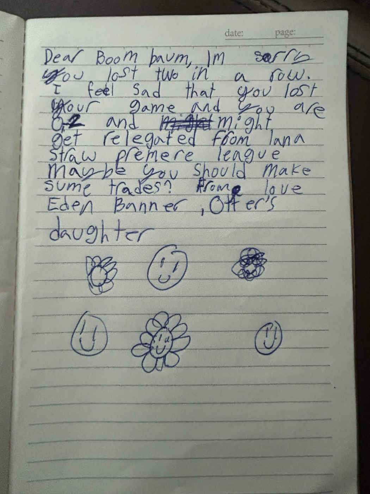
Week 2Maybe You Should Make Sume Trades?
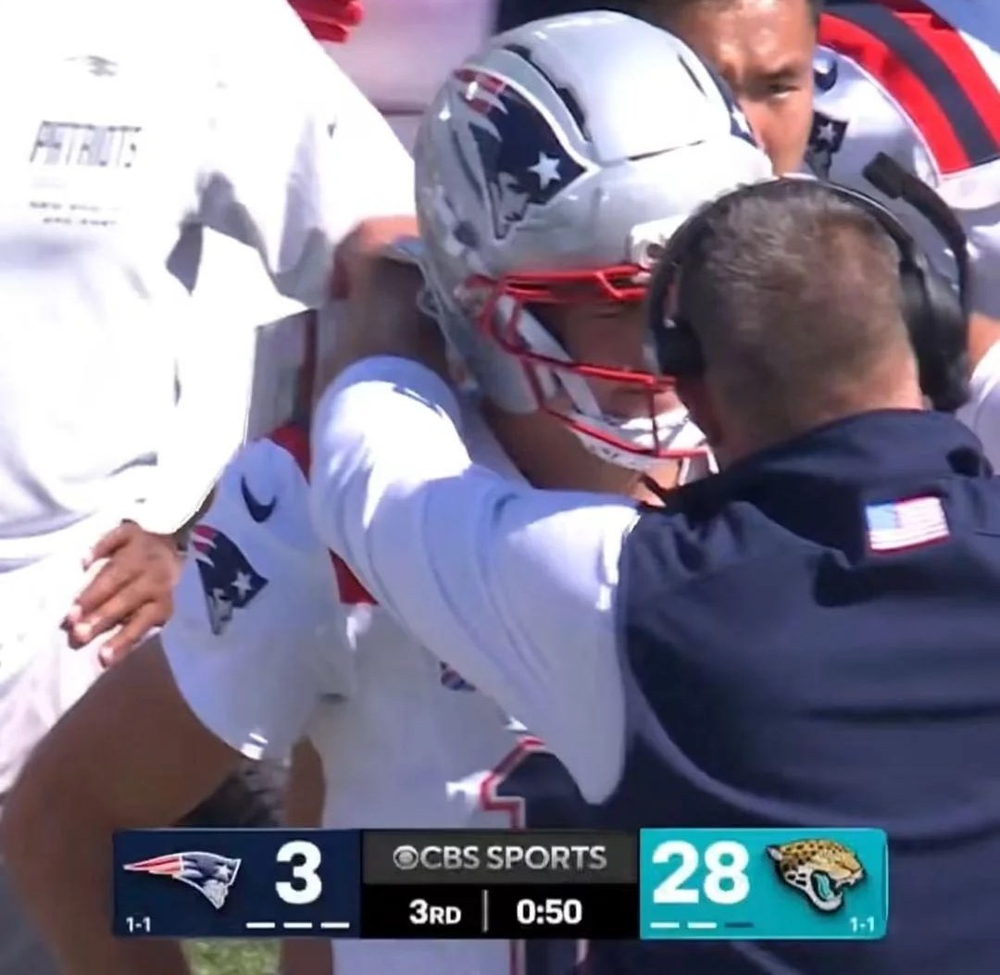
Week 3The Champion Is 0-3.
Week 4The Preparation H Messiah.
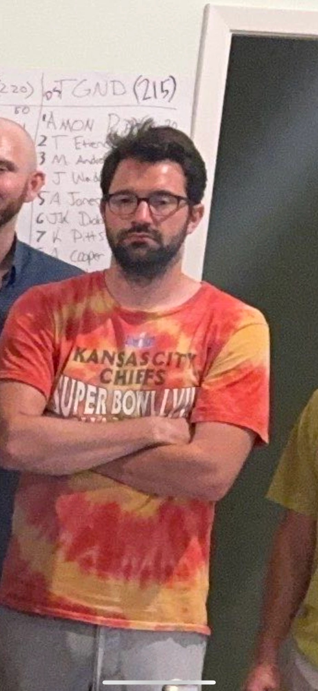
Week 5What Is Dead May Never Die.
Week 6Batman v Joker: Part II
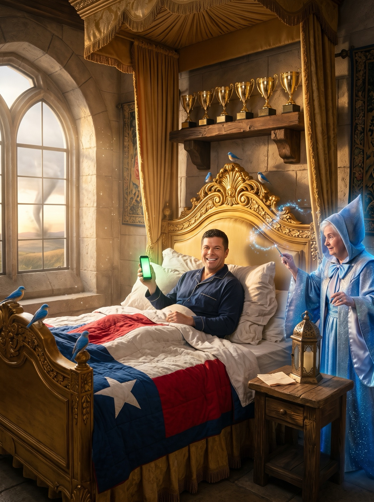
Week 7Once Upon a 7-0
7 issues · 106 pages · through Week 7
The 2026 VolumeContents
Season Volume
Every Week, In Order
One issue per week, bound in the order it happened. Page numbers carry the week, so W2 · 04 is page 4 of Week 2.
W1
One Last Night With the HardwareDraft Weekend & Week 1 · closed 2026-09-15 · 14 pages
3–16
W2
Maybe You Should Make Sume Trades?Week 2 · closed 2026-09-23 · 11 pages
17–27
W3
The Champion Is 0-3.Week 3 · closed 2026-09-30 · 13 pages
28–40
W4
The Preparation H Messiah.Week 4 · closed 2026-10-07 · 16 pages
41–56
W5
What Is Dead May Never Die.Week 5 · closed 2026-10-14 · 16 pages
57–72
W6
Batman v Joker: Part IIWeek 6 · closed 2026-10-21 · 18 pages
73–90
W7
Once Upon a 7-0Week 7 · closed 2026-10-28 · 16 pages
91–106
The 2026 VolumeVol · 02
Lana Straw Weekly
The Straw
W1
Sep 2026 Draft Weekend & Week 1
The HandoffStone Cold kicks the door, takes the belt
RelegationAshes for the brothers who fell
ScoreboardThe Kickers n Jigba detonate 179.86
TransactionsThe complete Boom carousel
Amburgers, Aug 28, On the Eve
ONE LAST NIGHT WITH THE HARDWARE
Amburgers slept with the belt. Stone Cold Fart Toot Squeek kicked the door in, stole the hardware, and gave the house a bottom line.
"Enjoying my last night …"Draft Weekend & Week 1 · 2026
From the DeskDraft Weekend & Week 1 · 2026
Editor's Letter
The belt slept. Nobody else did.
Amburgers slept with the belt like the season still loved him. Stone Cold kicked that idea through the wall. Mad Pooper terrorized Dublin. Boom begged for a therapist. Kickers n Jigba put 179.86 on the champion and dared anybody to call it football.
Amburgers went to sleep Aug 28 with the Lana Straw belt under one arm. That was the last quiet minute of the title reign. Stone Cold Fart Toot Squeek kicked the door, took the hardware, and left Amburgers on the carpet. Draft night still found time for the relegation ceremony: fire in a roasting pan, hands over hearts, ashes on the face.
Mad Pooper hit Dublin. Celery Stinks hit the field in a blonde wig. Boom ran the carousel until Monday required a therapist. Kickers n Jigba put 179.86 on the champion. The bruise is still settling.
The auction felt like the halftime show. The rest of the weekend was the game.
"364 days until the best weekend of the year."
The Wheaton Dick Whacker · Discord · Aug 30
The Straw editors Compiled Sep 15, 2026 · CT
Contents
One Last NightStone Cold handoff03
Relegation CeremonyThe brothers who fell04
The Best WeekendDraft feature05
Photo EssayNight games06
WardrobeWig and formalwear07
On the AirwavesEP1 and EP0208
Premier ScoreboardWeek 109
Champeens ScoreboardWeek 110
TransactionsBoom, deals, NCT11
Whisper SheetDiscord scenes12
AftermathTherapy Monday13
LookaheadWeek 214
Scores: ESPN. Trades: the league trade log. Quotes: Discord. Podcast reporting: The League of Record, S05 EP1 and EP02.
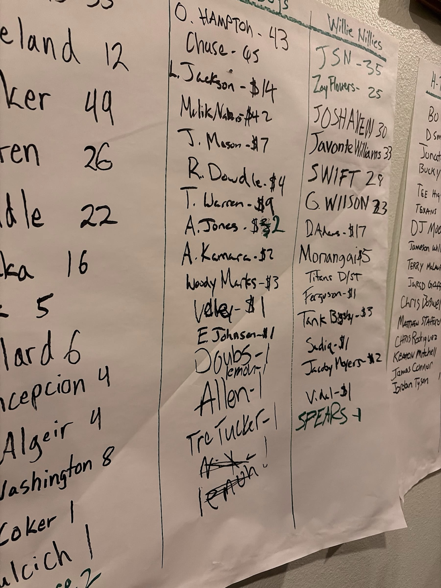
Exhibit A in every post-draft grievance. Draft weekend
Lana Straw Weekly · The StrawW1 · 02
Cover StoryThe Championship Handoff
One Last Night With the Hardware
Austin 3:16 Says the Reign Is Over
Stone Cold Fart Toot Squeek kicked the door, stole the belt, dropped Amburgers on the carpet, chugged for the house, and told everybody the bottom line.
The Straw Staff · Kayfabe Desk · Aug 28-30
And that’s the bottom line, cause Stone Cold Fart Toot Squeek said so. Google Photos · draft weekend
"Enjoying my last night …" Amburgers · Aug 28
Amburgers thought the belt was still theirs. Soft pillow. Soft light. Soft last night. Then the front door ceased to be a door.
Stone Cold Fart Toot Squeek kicked it in: black vest, bald head, glass raised, zero interest in a polite transfer of power. He ripped the Lana Straw championship off Amburgers like a man reclaiming stolen property, dropped them face-down on the carpet, and opened a beer for the house. Then another. Then John 3:16, loud enough to count as a title change.
The speech was short. This is his belt. This is his house. And that’s the bottom line, cause Stone Cold Fart Toot Squeek said so. A week later Amburgers posted the memorial: "Once…a great belt hung on this wall…" Correct. It hangs somewhere louder now.
"No one asked for it, but he just went for it and … had his coronation ceremony."
H Town · League of Record S05 EP1 · on Amburgers’ earlier reign
Cover Story · The HandoffW1 · 03
Cover StoryThe Brothers Who Fell
Relegation Ceremony
Ashes for the Brothers Who Fell
The belt changed hands. Then the league lit a disposable pan and marked the brothers who fell. Hands over hearts. Fire optional. Fire present.
The Straw Staff · Draft night
The draft board witnessed. It did not intervene. Draft weekend
The parent tent for new members was funny. The rest of it was, as H Town put it, "a little over the top." That was the compliment. Kicking a guy while he is down is the point. Fart Toot Squeek loved the ashes so much he started shopping for sequels before the smoke cleared. Longer menu. More traditions. Same fire pan if the budget demands it.
The Tradition Desk
The ashes stayed. The champion wants a sequel series.
Cover Story · RelegationW1 · 04
FeatureDraft Weekend · Fredericksburg
After the Belt Changed Hands
The Best Weekend of the Year
Mad Pooper terrorizes Dublin. Boom loses to a tire. The Champeens induct a cult. The Wheaton Dick Whacker starts the 364-day clock.
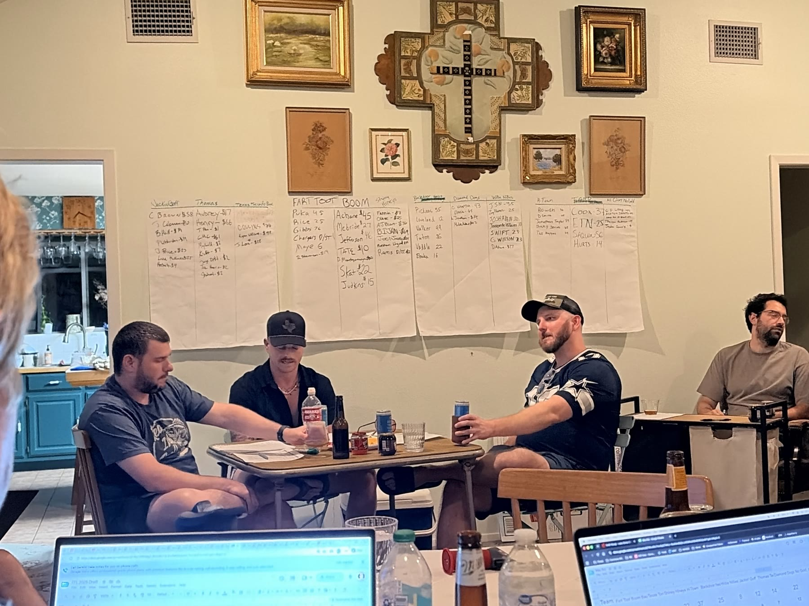
Where $200 goes to die with dignity. Draft weekend
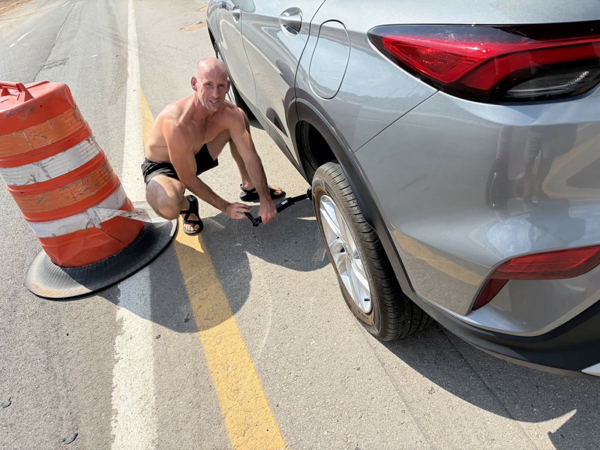
First opponent of the year: Goodyear. Discord · Aug 28
Before anyone nominated a player, The Jackal was already filing from Dublin. Three resort elevators compromised. Lobby compromised. Staff working anti-poo powder overtime. "There is a serial, resort, dooker on the loose in Dublin. I'm afraid that he is only getting more powerful."
Closer to Fredericksburg, Amburgers needed an air pump for "the kicking balls in my luggage." Jesus Neck Tattoo, ever the scholar: "Not sure if I'm agreeing to a sexual act or genuine request for an inflation device."
Boom Baum made the interstate and lost to a tire. By daylight the boards were handwritten, the laptops were open, and everybody pointed like the belt ceremony had already settled the hierarchy.
The Champeens ran orientation without the brochure. "Welcome to the cult .. errr league!" "Ngl- it does feel like I joined a cult."
Correct. The auction was only one sacrament.
Feature · Draft WeekendW1 · 05
Photo EssayHemorrhoid Games · After Dark
Bikes, Planks, Watermelon
The Body Keeps Score
Somebody wondered if the room was too old for this. Then the room bought tricycles, flooded a pool and treated half a watermelon like game equipment.
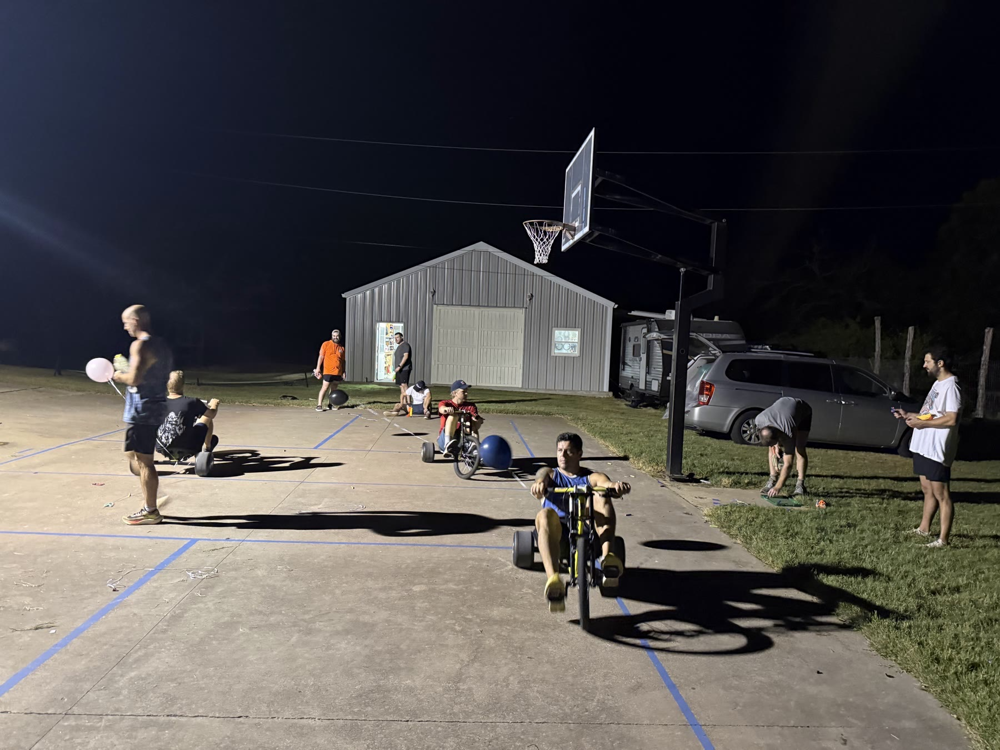
Facebook Marketplace, official mobility partner of the Hemorrhoid Games.
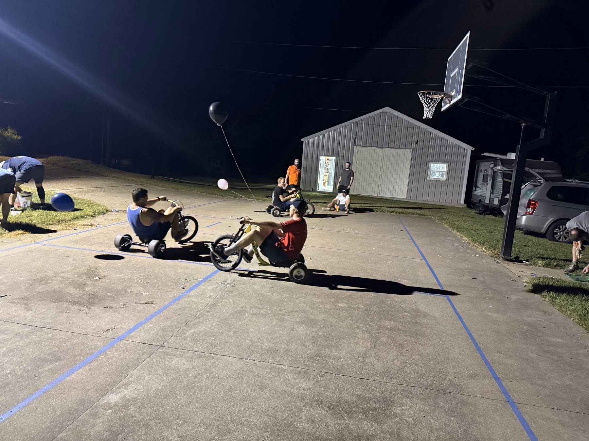
Mario Kart, with tomorrow morning attached.
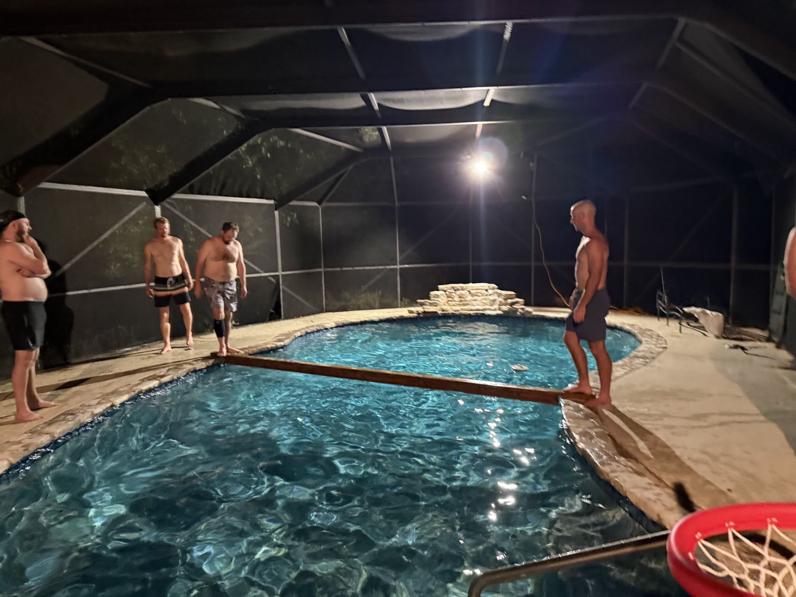
Balance left the chat.
"I need a little more energy in here, otherwise everyone running fuckin 40’s when I get there. I'll be drinkin a 40"
The Wheaton Dick Whacker · Discord · Aug 28
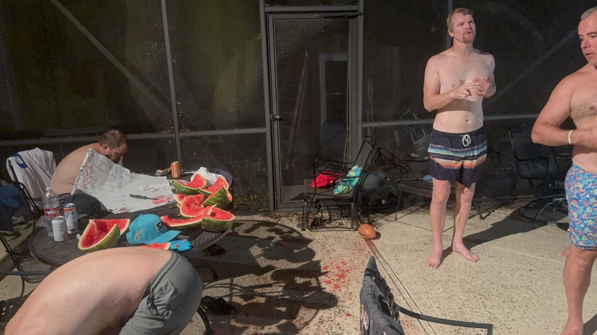
Proof that fruit can be a contact sport.
Photo Essay · Hemorrhoid GamesW1 · 06
WardrobeField Uniforms · Parental Review
Draft Weekend Fashion Desk
Dress Code: Explain Later
Celery Stinks hit the field in the look Fart Toot Squeek picked out: blonde wig, green top, purple skirt. Amburgers’ parents swore they had seen a girl. The Wheaton Dick Whacker showed up day one already dressed for war. Somebody’s parent typed the only sane sentence of the weekend and the league treated it like a joke setup.
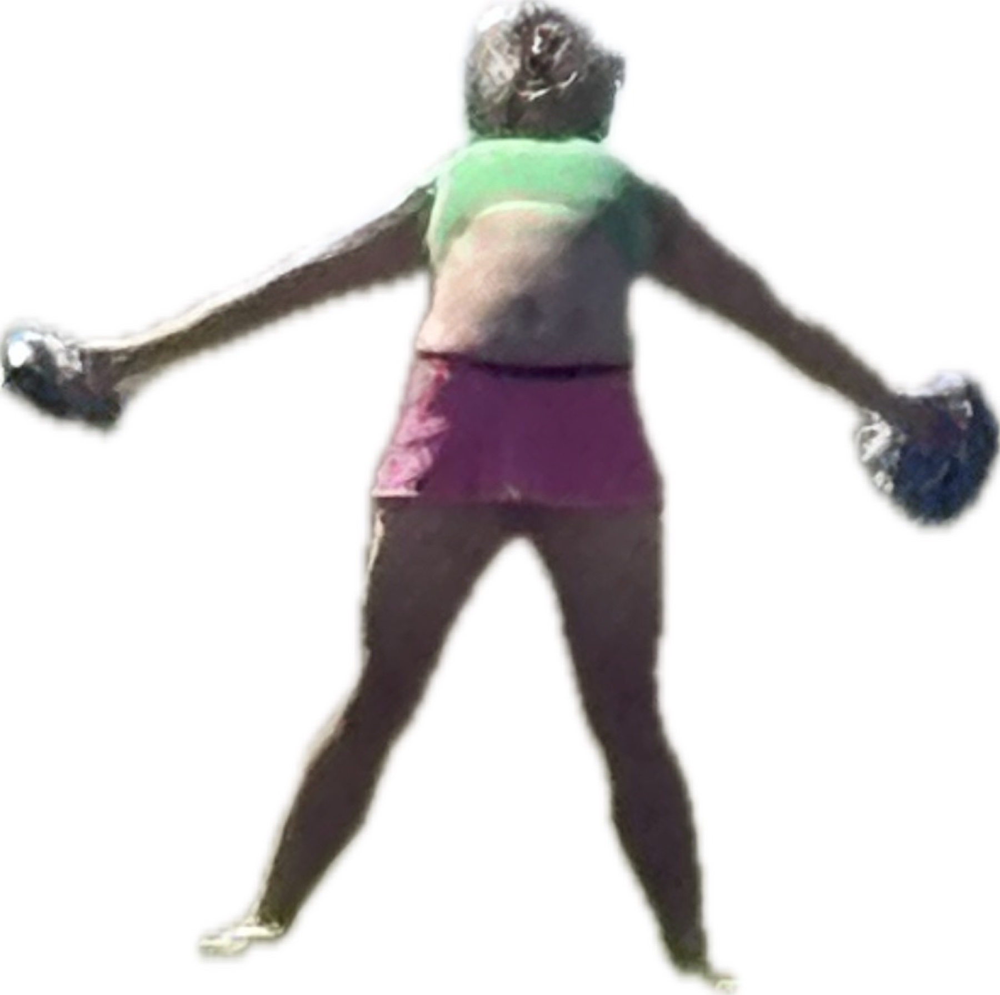
Celery Stinks. Styling by Fart Toot Squeek.
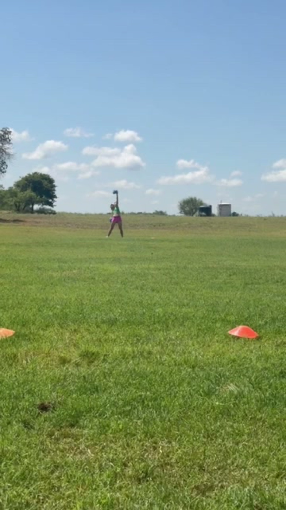
Open space. No buttons. No mercy.
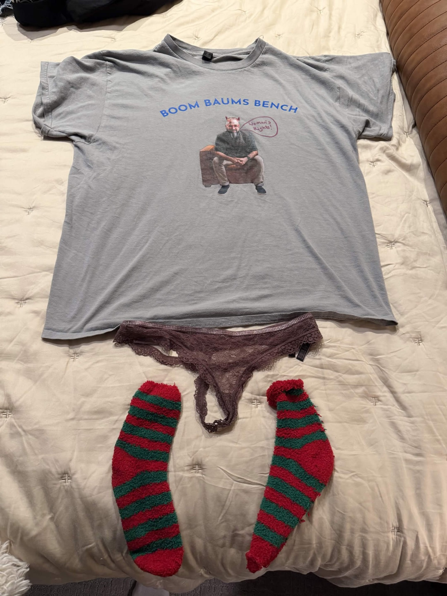
"Got my day 1 outfit ready to go!"
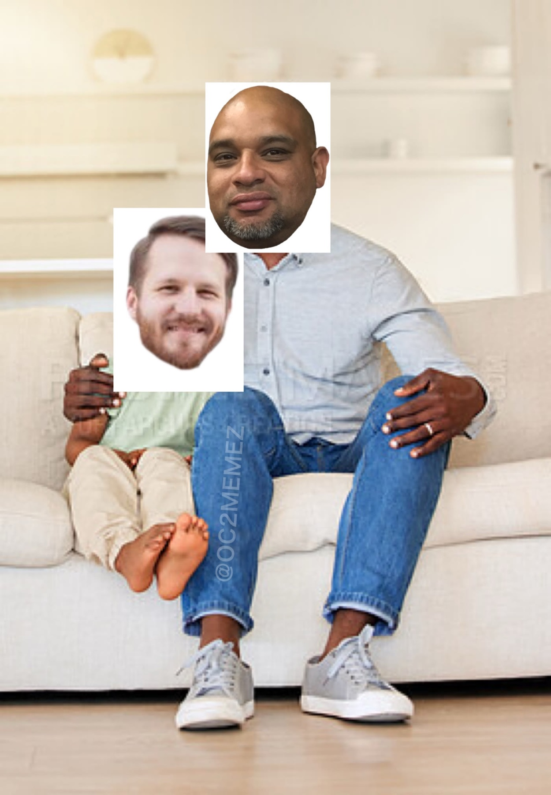
A parent tried reason. Cute.
Parents Review the Film
Celery Stinks wanted it on record: the skirt and wig were involuntary. Fart Toot Squeek had picked the fit. Amburgers tried explaining that to the parents. The parents asked which guy. Amburgers pointed at the skirt and wig. Oh, they said. We thought that was a girl. Then they gave full marks for crushing it anyway.
"Is my son … going to the draft??"
OC002 · Aug 28
There is no dress code because a dress code would lose. Day one arrived in formalwear. The title change arrived as Stone Cold. The field arrived as Celery Stinks in a blonde wig, scanning for intelligent life and finding Kickball instead.
The Champeens already called it a cult. Wardrobe just brought the uniforms.
Wardrobe · Draft WeekendW1 · 07
On the AirwavesThe League of Record · S05 EP1 + EP02
Before and After
Aging Reality, Live From the Pod
H Town floated the age question. Fart Toot Squeek shut it down with one weekend of virility. Boom sat on his hands for two hours, then unveiled nine dollar players like a magic act. Amburgers left one point on the kickball field and called it humility.
S05 EP1 · Aug 20 · Draft Weekend Prep
The Hemorrhoid Games Were Coming
"Draft is one week away. I just, I get chills saying it. It's like Christmas times 10."
Amburgers still carried back-to-back titles and the fresh bruise of relegation. Fart Toot Squeek admitted the cooking competition exists because he sucks at cooking. Proxies narrowed to births and deaths. "Sorry about weddings."
Ed Orgeron even mailed in a cameo on the attendance fight. The weekend did not care. It arrived on schedule.
S05 EP02 · Sep 3 · Triumph, Defeat, Joy, Humility
Sore Muscles, Confirmed
"did anyone else think maybe we're getting a little too old for this"
Celery Stinks collapsed after the 40. Tricycles left burns. Mario Kart left collisions. Amburgers came one point short with inches still sitting on the kickball field. Watermelon left the realm of food and entered the realm of punishment, The Guy Next Door working the feed like a beer bong.
"if we didn't care then this wouldn't be that great." That is the entire business model.
HOT
Running backs
GONE
Every nomination
LOUD
Auctioneer desk
2 HR
Boom silence
The Draft, Recounted
The running backs walked into the room like celebrities and left like ransom notes. Every nomination felt urgent. Hands flew. Boards filled. Somebody would barely get a name out before the bidding turned into a bar fight with dollar bills.
Cowboys September Dreams ran the Premier auctioneer desk like a man possessed, voice climbing every time another back hit the board. Fart Toot Squeek and Diamond Dogs turned Gibbs into a cage match. Boom spent early, vanished for two straight hours, then resurfaced with a parade of one-dollar players while the room cheered like church let out.
Across the hall the Champeens were no calmer. Amburgers watched Jonah Coleman get sniped out from under him. Picks kept flying. The night refused to behave. By the end the draft felt secondary only because everything else had already cooked the league first.
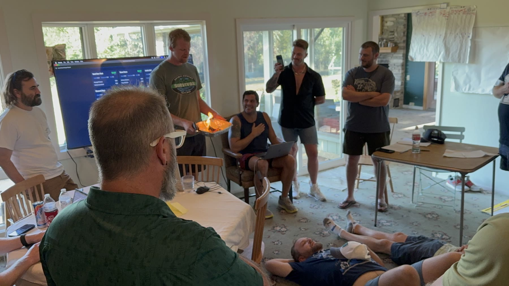
"we've got to do all this amazing like really we just have a ton of fun ... and then the draft feels almost secondary until you get in it." Fart Toot Squeek
On the AirwavesW1 · 08
ScoreboardPremier · Week 1 · ESPN 1851323
Opening Sunday
179.86: A Crime Scene
Kickers n Jigba nuked the champion for 179.86. Diamond Dogs ran Boom over. Backdoor Heat found the floor and sat on it. The numbers are public. The embarrassment is personal.
179.86
Kickers n Jigba
37.66
Josh Allen
89.50
Backdoor Heat
98.80
Boom Baum
Matchups
Matchup
Score
Winner
Jackin' Goff @ All Gold, No Glory
123.76-145.76
All Gold
The Scott Ramsays @ The Guy Next Door
99.54-89.52
Scott Ramsays
Texas Tornado's Bush @ H Town
124.06-97.30
Tornado
Fart Toot Squeek @ Kickers n Jigba
136.90-179.86
Kickers n Jigba
Boom Baum @ Diamond Dogs
98.80-133.86
Diamond Dogs
Shiny Hineys @ Backdoor Heat
91.56-89.50
Shiny Hineys
"I can't believe how low Backdoor heat scored. Lowest in the league by a mile" The Guy Next Door · Sep 15
Standings
#
Team
W-L
PF
PA
1
The Kickers n Jigba
1-0
179.86
136.90
2
All Gold, No Glory
1-0
145.76
123.76
3
Diamond Dogs
1-0
133.86
98.80
4
Texas Tornado's Bush
1-0
124.06
97.30
5
The Scott Ramsays
1-0
99.54
89.52
6
Shiny Hineys
1-0
91.56
89.50
WC
Fart Toot Squeek
0-1
136.90
179.86
8
Jackin' Goff
0-1
123.76
145.76
9
Boom Baum
0-1
98.80
133.86
10
H Town Holy Rollers
0-1
97.30
124.06
11
The Guy Next Door
0-1
89.52
99.54
12
Backdoor Heat
0-1
89.50
91.56
Yellow line: the wild card, the most points outside the top six. Fart Toot Squeek holds it at 136.90 and is also seventh on record.
Top scorers · ESPN
37.66 Josh Allen · Kickers
35.80 Derrick Henry · Ramsays
35.60 Kenneth Walker III · Heat
32.90 D'Andre Swift · Kickers
32.10 Jahmyr Gibbs · FTS
31.70 Christian Watson · All Gold
30.70 Ashton Jeanty · All Gold
29.60 Jaxson Dart · FTS
27.72 Jalen Hurts · TGND
27.40 David Montgomery · Dogs
Premier ScoreboardW1 · 09
ScoreboardChampeens · Week 1 · ESPN 1695026336
Lower Flight, Full Volume
Otter Atop. Jerry by 0.30.
Otter posted 140.10. Jerry lost by three tenths with diamonds still in his mouth. The bylaws remain undefeated.
140.10
Otter PF
0.30
Jerry margin
39.26
Caleb Williams
90.12
Jordan's Trainers
Matchups
Matchup
Score
Winner
Chase Is My Leader @ Amburgers
95.30-121.24
Amburgers
Prime Lime Time @ Mac Attack
107.80-117.66
Mac Attack
Cowboys Sept Dreams @ Jordan's Trainers
128.46-90.12
Cowboys
Jerry GM + Jerry Owner @ Neaux Gold
133.16-133.46
Neaux Gold
The Jackal @ Otter
120.66-140.10
Otter
Madison Beer @ OKC Schlegstas
95.10-91.62
Madison Beer
Standings
#
Team
W-L
PF
PA
1
Otter
1-0
140.10
120.66
2
Neaux Gold, All Glory
1-0
133.46
133.16
3
Cowboys September Dreams
1-0
128.46
90.12
4
Amburgers
1-0
121.24
95.30
5
Mac Attack
1-0
117.66
107.80
6
Madison Beer
1-0
95.10
91.62
WC
Jerry GM + Jerry Owner
0-1
133.16
133.46
8
The Jackal
0-1
120.66
140.10
9
Prime Lime Time
0-1
107.80
117.66
10
Chase Is My Leader
0-1
95.30
121.24
11
OKC Schlegstas
0-1
91.62
95.10
12
Jordan's Trainers
0-1
90.12
128.46
Yellow line: the wild card, the most points outside the top six. Jerry GM + Jerry Owner holds it at 133.16 and is also seventh on record.
Top scorers · ESPN
39.26 Caleb Williams · Neaux Gold
37.66 Josh Allen · Cowboys
35.80 Derrick Henry · Mac Attack
35.60 Kenneth Walker III · Otter
32.90 D'Andre Swift · Cowboys
32.10 Jahmyr Gibbs · Neaux Gold
31.70 Christian Watson · Amburgers
30.70 Ashton Jeanty · Madison Beer
The Bylaws
"the bylaws for the champeens league requires that a player will pop off only if you take him out of your starting lineup or talk yourself out of putting them in"
BTeamSpecialist · Sep 13
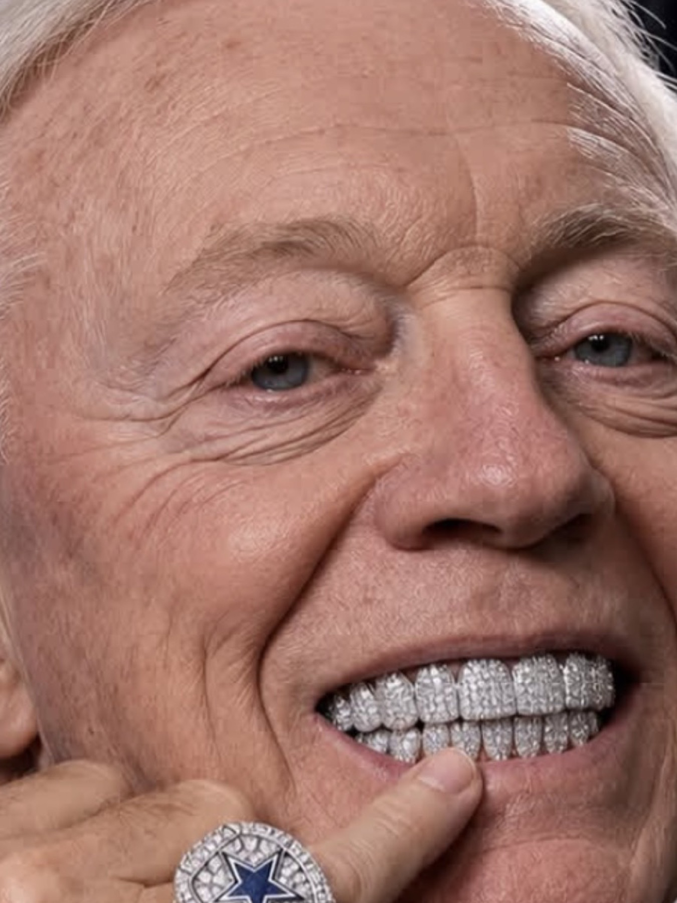
133.16 points. Still flashing the stones.
Champeens ScoreboardW1 · 10
TransactionsBoom Carousel · Champeens · NCT
The Boom Baum Evergreen Offer
Keep Doubting the Boom
Boom flipped Chase, flipped London, dared the league to keep doubting him, and turned a door meme into the office handbook. Four Premier deals in sixteen days. The carousel does not brake.
01
Premier · Aug 30
All Gold, No Glory / Boom Baum
All Gold received TreVeyon Henderson. Boom received Cam Skattebo.
02
Premier · Aug 31
Diamond Dogs / Boom Baum
Dogs received Justin Jefferson, David Montgomery, Deebo Samuel Sr. Boom received Aaron Jones Sr., Woody Marks, Ja'Marr Chase.
03
Premier · Sep 1
Texas Tornado's Bush / Boom Baum
Tornado received Ja'Marr Chase, Cam Skattebo. Boom received Michael Pittman Jr., Drake London, Jeremiyah Love.
04
Premier · Sep 15
The Guy Next Door / Boom Baum
The Guy Next Door received Dylan Sampson, Drake London. Boom received Caleb Williams, Tetairoa McMillan.
The Carousel
Chase: Dogs deal > Boom > Tornado London: Tornado deal > Boom > The Guy Next Door
"All right, keep doubting the Boom I dare you"
Boom Baum · Sep 1
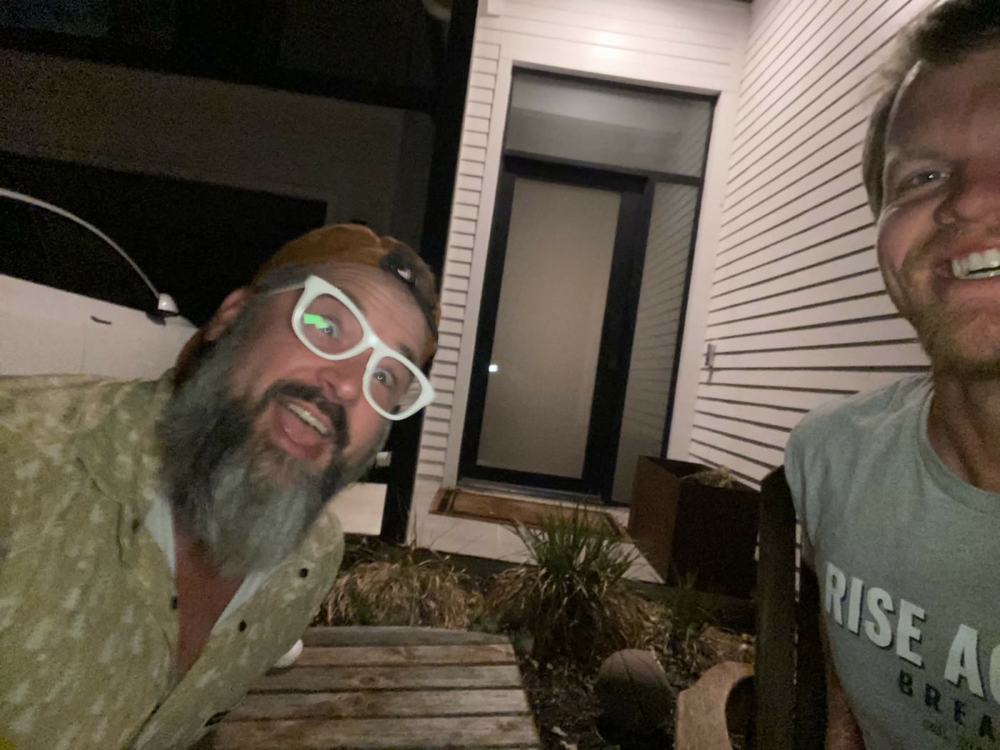
Twenty minutes. Still waiting.
"Any time Boom sends a trade offer:" Shiny Hineys · Sep 9
"Dammit, why won't anybody trade with me"
Boom Baum · Aug 30
Champeens Deals
Sep 1: My Naber Tetairo received Jeanty, Waddle and Javonte. Cowboys September Dreams received Achane, A.J. Brown and Tetairoa McMillan.
Sep 11: No Gold, All Glory received Braelon Allen. Amburgers received Jonah Coleman after watching him get sniped at the Champeens draft.
NCT and Week 2 Wire
Shiny vs Boom: Brown/Olave vs Love/London begins counting in Week 2, four counting weeks, name and logo at stake.
Kickers n Jigba and Jackin’ Goff exchanged Likely and Monangai. Fart Toot Squeek and Backdoor Heat completed a multi-player deal while the champion was still icing 179.86.
Transactions DeskW1 · 11
The Whisper SheetDiscord Scenes · Aug 28-Sep 15
Quotes We Refuse to Improve
The Garage Heard Everything
A serial dooker owns Dublin. Amburgers needs an air pump for luggage balls. The Champeens admit the cult. Jerry badges into a garage while the pod screams franchise names into the night.
"There is a serial, resort, dooker on the loose in Dublin. I'm afraid that he is only getting more powerful."
The Jackal · Aug 28 · Mad Pooper
"Can someone bring an air pump? Gonna deflate my balls…the kicking balls in my luggage and I can't find my pump"
Amburgers · Aug 28
"Not sure if I'm agreeing to a sexual act or genuine request for an inflation device"
Jesus Neck Tattoo · Aug 28
Heard at the Garage
Jerry GM + Jerry Owner was driving to work with the pod playing. The window came down for the garage badge just as Fart Toot Squeek said "Jesus Neck Tattoo and Jackin' Goff." Someone heard. The badge did not recover. Later Jerry renamed the operation Yes Diamonds, which feels like the correct emotional response.
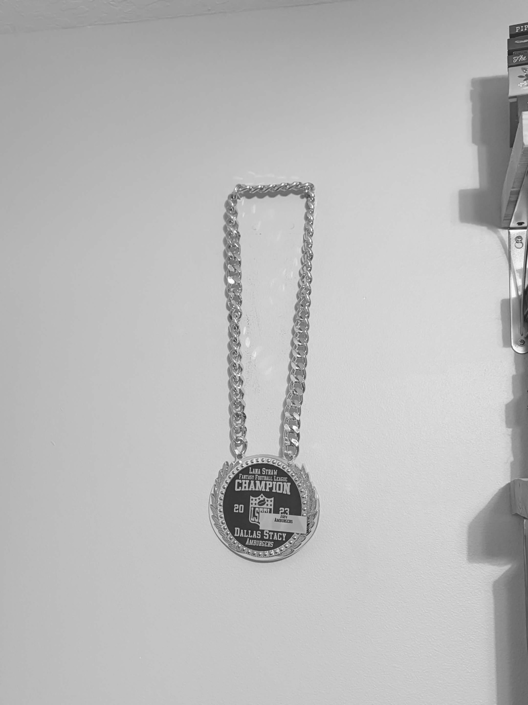
"Once…a great belt hung on this wall. Now it’s just a chain of a memory that once was." Amburgers · Sep 7
"Welcome to the cult .. errr league!"
BTeamSpecialist · Aug 30
"Ngl- it does feel like I joined a cult"
SJones · Aug 30
"What are the chances that Love is on Booms team in 4 weeks? I'd say 33%. And for the rest of the year…uh…no chance"
Fart Toot Squeek · Sep 2
"I'm on track to score more points than any other team in the peen league but Scott diDnT LiKe mY tEam"
Jerry GM + Jerry Owner · Sep 14
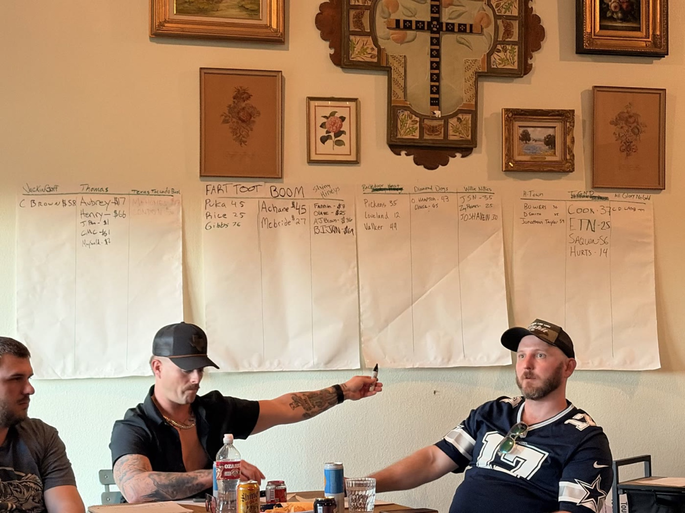
Amburgers, directing traffic.
The Whisper SheetW1 · 12
AftermathWeek 1 Locker Room · Monday Therapy
When the Scores Became Final
The Morning After 179.86
Kickers committed the war crime. Boom filed for a fantasy therapist before Monday lunch. Heat missed 90. Bowers’ knee walked into the chat like it owned the building.
179.86
The Kickers n Jigba · Week 1
Kickers n Jigba put 179.86 on reigning champion Fart Toot Squeek. Diamond Dogs beat Boom 133.86-98.80. Shiny Hineys escaped Backdoor Heat 91.56-89.50, which is how you survive a floor fight.
Boom reached Monday and filed for professional help.
"Does anyone have any therapist referrals for fantasy football specific trauma? I am feeling heavy Monday depression from my ass kicking and need further support…"
Boom Baum · Sep 14
"As the reigning knockout league champion from last season, I'd like to say I hate F'in fantasy football and I cannot believe this year ends like this after the first week. Unreal…."
Boom Baum · Sep 15
Floor Watch
Backdoor Heat scored 89.50, two hundredths below The Guy Next Door and 90.36 behind the league high. The Hineys needed 91.56. Heat found the exact bottom of the building.
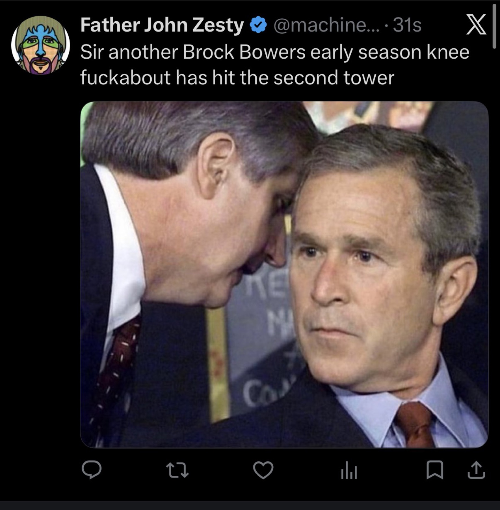
Injury report, second tower edition.
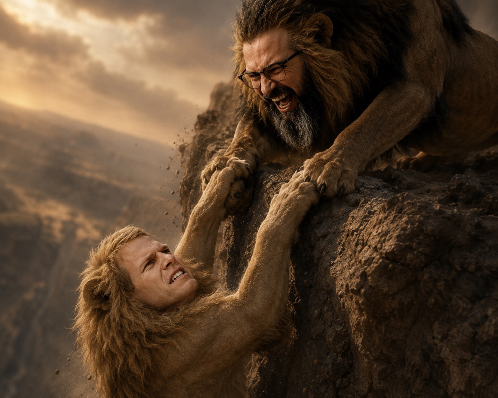
Trust expired in Week 1.
"I can't believe how low Backdoor heat scored. Lowest in the league by a mile"
The Guy Next Door · Sep 15
Aftermath · Week 1W1 · 13
LookaheadWeek 2 · NCT Countdown
Sunday, Reload
The Carousel Keeps Moving
Shiny vs Boom begins counting. Thomas’s Terrific Team draws the 179.86 club. Week 1 already needs a sequel.
Premier Week 2
Jackin' Goff@ The Guy Next Door
All Gold, No Glory@ H Town Holy Rollers
The Scott Ramsays@ The Kickers n Jigba
Texas Tornado's Bush@ Diamond Dogs
Fart Toot Squeek@ Backdoor Heat
Shiny Hineys@ Boom Baum
Name Change Terror
Shiny’s A.J. Brown and Chris Olave face Boom’s Jeremiyah Love and Drake London across four counting weeks. The week counts only if all four play. The loser wears a two-week name and logo.
Champeens Week 2
Prime Lime Time@ Chase Is My Leader
Amburgers@ Cowboys September Dreams
Mac Attack@ Jerry GM + Jerry Owner
Jordan's Trainers@ The Jackal
Neaux Gold, All Glory@ Madison Beer
Otter@ OKC Schlegstas
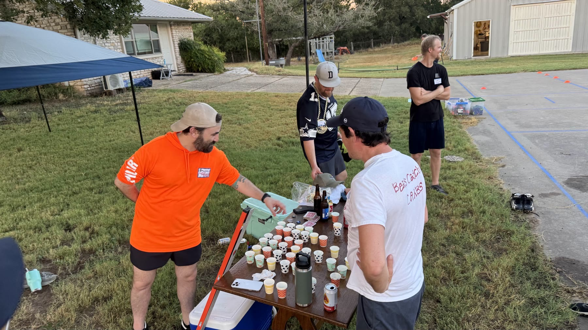
The calm before someone nominated someone.
"364 days until the best weekend of the year."
The Wheaton Dick Whacker · Aug 30
LANA STRAW WEEKLY · THE STRAW · DRAFT WEEKEND & WEEK 1 · 2026
Scores from ESPN. Trades from the league trade log. Quotes from Discord. Podcast reporting from The League of Record S05 EP1 and EP02. Owner-confirmed details identify the Stone Cold belt handoff. Obvious podcast phonetics were normalized for Fart Toot Squeek, Amon-Ra and player names.
Photography: league Google Photos and Discord wire.
Week 2 · End of IssueW1 · 14
Lana Straw Weekly
The Straw
W2
Sep 23, 2026 Week 2
Correspondence · Posted by Otter, Sept. 22
MAYBE YOU SHOULD MAKE SUME TRADES?
Boom Baum is 0-2 and asked the league for forty-five trades. The league sent him a letter from a child.
#PointgateThe commissioner confesses. Jerry wins a game he lost.
BijanShipped again. “Was that a real trade?!”
KnockoutHe meant to bid a hundred.
The NameLost by 1.24. Now the Little Bread Boi.
“I need to meet a minimum of 45 trades a season for it to be successful.” · Boom BaumWeek 2 · 2026
From the DeskWeek 2 · September 23, 2026
Editor’s Letter
We Printed the Wrong Winner
The last issue went out ninety-five minutes after the commissioner confessed. It was already wrong. Nobody minded, because one reader wanted it on paper.
Tuesday, Sept. 15, at 9:50 p.m., Fart Toot Squeek told the Discord he had made “a grave mistake” with the kicker scoring, and that fixing it would flip Jerry GM + Jerry Owner’s game. At 11:25 p.m. the Week 1 issue went out with Jerry losing that game by 0.30. The correction, the confession and a question about the commissioner’s goatee are on page 4.
Jerry read it anyway, the next morning at 6:15.
I wish I had a physical copy to read on the toilet. Might print this bad boy out.
Jerry GM + Jerry Owner · Wednesday, Sept. 16
On the pod that Thursday, the Guy Next Door described the dream in full: a season of these, printed, handed out at draft weekend, and a ceremony where “the winner sits down and gets to sign everybody’s edition.”
Until then there is this one. Bijan changed teams again. H Town lost his name by 1.24. A knockout manager meant to type a hundred. And Boom Baum asked for forty-five trades, received none, and got mail.
The Straw editors Closed Wednesday, Sept. 23 · Central time
Contents
The Minimum Is 45Boom, 0-2, reads his mail03
A Grave Mistake#Pointgate and the goatee04
Was That a Real Trade?!Bijan’s fourth address05
Elsewhere in the DiscordBread Boi, Ramsayrrito, the bot06
Double Tap the ZeroThe knockout, and its casualties07
On the AirwavesS05 EP03 · the Guy Next Door08
The DeskFour Premier trades09
ScoreboardsPremier, Champeens, Point After10–11
The Week in Numbers
45
Trades a season Boom says he needs
0
Trades Boom made this week
0.30
Margin we printed last week. Wrong winner.
$69
The Hineys’ price for Bijan, before shipping him
1.24
Points between H Town and his own name
$1,000
Knockout FAAB on Ja’Marr Chase. Spelled Jamar.
0-2
The champion, and Boom. They play Sunday.
Overheard
Shades of the $100 on Isiah Likely years ago
Amburgers · Wed 6:50 a.m. · on the knockout bids
Fantasy football is a marathon of 17 sprints
The Guy Next Door · Fri 1:15 p.m. · 5 reactions
Going to be some clips emptied for Bryce Young tomorrow morning. / ^^^^^ not a sentence I thought I’d ever write
H Town · Tue 6:38 p.m.
Lana Straw Weekly · The StrawW2 · 02
Cover StoryBoom Baum · 0-2
Boom Baum · Sept. 17–22
The Minimum Is 45
Boom came to draft weekend to win it all. Two losses later he was trading with nobody and reading mail at breakfast.
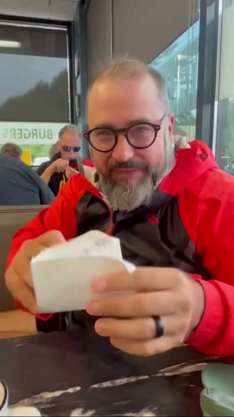
Tuesday, 8:35 a.m. The reading. Otter · 11 reactions
The promise is on the record. Before draft weekend Boom Baum left the pod a voicemail, and on Sept. 17 the hosts finally played it: “Boom Baum is coming and ready to win it all, baby. Let’s go.”
The same episode had already looked at his roster. The hosts ran down the worst offenses in football and found Boom holding the only fantasy-relevant players on most of them. “That’s a recipe for relegation my friends.” Somebody predicted the cure: take screenshots of his team now, and by next week it would be “30 to 40 percent different.”
It was zero percent different. Not for lack of trying. When the Scott Ramsays made a catch on Friday, Boom sent congratulations with terms attached: “congrats on the catch…. Now trade with me.” Nobody did. Sunday the Shiny Hineys beat him 112.32 to 89.22, and on Monday at 3:50 p.m. he filed the grievance.
I just wanna say the low amount of trades this season is really impacting my mental health. I need to meet a minimum of 45 trades a season for it to be successful.
Boom Baum · Monday, Sept. 21
Relief came Tuesday at 8:35 a.m. Otter posted a letter from his daughter, and video of Boom reading it at breakfast.
Dear Boom baum, Im sorry you lost two in a row. I feel sad that you lost your game and you are 0-2 and might get relegated from lana Straw premere league Maybe you should make sume trades? From love Eden Banner, Otter’s daughter
Transcribed as written · the original is the cover
Eight minutes later Boom asked the commissioner a procedural question: “if you got a friend into the league is there a system in place to uninvite them?”
At 9:02 Cowboys September Dreams proposed a telethon: “a Sarah McLachlan arms of the angel commercial where, instead of sad animals, it’s sad pictures of Boom and its McLachlan doing a call to action to make trades to help the helpless and vulnerable booms of the league.”
At 9:41 H Town delivered the forecast. ESPN projected Boom ninth.
I can handle 9th. 9th is good.
Boom Baum · Tuesday, 9:53 a.m.
He is twelfth. Sunday he plays the champion, who is also 0-2.
Cover Story · Boom BaumW2 · 03
#PointgateFart Toot Squeek · Jerry GM + Jerry Owner · Neaux Gold
The Commissioner’s Office
A Grave Mistake
The league voted to shave a point off long field goals in 2027. The commissioner started in 2026, took it back, and handed a win to the fastest arch-nemesis he has ever had.
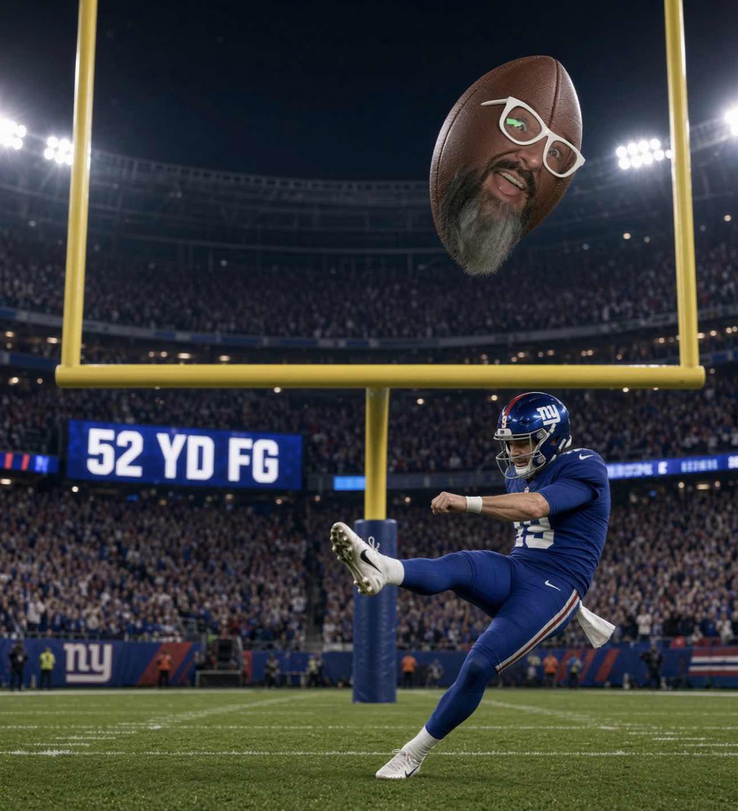
Fifty-two yards. Full price until 2027. Shiny Hineys · Monday, Sept. 21
At the draft weekend Rules Round Table the league agreed to trim the 40- and 50-yard field goals by a point, starting next season. Fart Toot Squeek, commissioner and reigning champion, turned it on this season instead. Tuesday night at 9:50 he came clean to everyone at once.
I totally forgot about the delayed onset of the rule change and implemented it this season. Y’all will see it change some scores slightly and much to my chagrin it will flip the outcome of Jerry GM and Dave Ten Haves game. I’m going to do some push ups, run 10 40s, and keep my head on a swivel so this never happens again. My deepest apologies Lana Straw
The loser had already filed. Eight minutes before the apology, Neaux Gold, All Glory: “I was the West Michigan of week 1.”
Eleven minutes after it, the winner issued a statement. “We respect your honesty and openness in this difficult time.” Six reactions. The commissioner answered with a gif of Toby from The Office.
On the pod Thursday the commissioner called it the “worst mistake I’ve ever made as a commissioner.” Jerry had sent in a voicemail before the ruling, arguing that “what really separates the men from the boys are the adjustments.”
Wednesday night Jerry opened a second front.
Did [the commissioner] shave a goatee just for the stone cold bit at draft weekend or is he walking around austin like that? I see Scott two days a year so I have no reference. Can he go within 100 yards of a school?
Jerry GM + Jerry Owner · Wednesday, Sept. 16, 8:58 p.m.
One minute later: “I’m asking, respectfully.” Six reactions. On the pod the commissioner called Jerry “the fastest arch nemesis I’ve ever experienced,” then spoke to him directly.
You come at the champ, you best not miss, you know, Stone Cold part two is coming for you and I’ve got the mic, bitch.
Fart Toot Squeek · S05 EP03 · Sept. 17
The ruling, enforced
The pod filed #Pointgate next to #RamsayGate, the league’s standing theory that the scoreboard bends toward the Ramsays. For once it bent the other way, toward the man asking about schools. The appeal was heard Sunday, downstairs, by the commissioner’s other club. Mac Attack 132.98, Jerry 107.38.
#PointgateW2 · 04
The TradeBijan Robinson · Thursday, Sept. 17
Thursday Night, 8:20 p.m.
Was That a Real Trade?!
The Shiny Hineys paid $69 for Bijan Robinson in August. Three weeks into the season he was a Jigba. It was not the first time the Hineys let him go.
1
Aug. 26, 2025
To Boom Baum
The Hineys ship him out.
2
Sept. 12, 2025
Back to the Hineys
Seventeen days away.
3
Auction, 2026
Hineys, $69
Paid at the auction.
4
Sept. 17, 2026
To the Jigba
Week 2: 9.6 points.
Thursday at 8:20 p.m. the slip hit the Discord and Boom Baum, a man who has been posting “Anyone want to trade? I am bored” since August, watched two other clubs make one. “Holy hell. Was that a real trade?!” Eleven seconds later he answered himself. “Holy shit.”
The Kickers n Jigba took Bijan Robinson, Chris Olave and Zach Charbonnet. The Shiny Hineys took back Davante Adams, Javonte Williams, Braelon Allen and Garrett Wilson. Both clubs were 2-0 by Monday.
The commissioner saw a pattern and said so.
it feels like your relationship with Bijan is a love/hate thing. That’s the only way I can make sense of you shipping him away year after year
Fart Toot Squeek · 8:52 p.m.
The Hineys had a scouting report ready, and a second reason nobody expected.
He’s Gumby. The most durable RB I’ve ever seen. I’m also tired of watching Falcon games.
Shiny Hineys · 8:55 p.m.
Eight minutes after the deal the Hineys added a footnote the bot never printed: “the bot forgot the $5 FAAB Rob gave me. Really made the trade”. The Straw has no receipt for the five dollars. The Hineys have their word.
Sunday settled nothing and embarrassed everyone a little. Adams, three days a Hiney, scored 36.5 in the flex against Boom. Bijan, three days a Jigba, scored 9.6 against the Ramsays. The Jigba won anyway, 144.62 to 76.68, and sit first in the Premier.
The Jigba is a Ramsay club. Readers who keep a #RamsayGate file may add a page.
The bet was one week of the loser’s name, decided on Week 1 starting lineups. The Scott Ramsays had 99.54. H Town had 98.3. They did not even play each other.
Thursday at 10:00 p.m. the Ramsays named the price: “I want your name to be ‘The Little Bread Boi’.” Nine seconds later: “Change it NOW”. Then a clarification.
Well, you are the LITTLE bread boi.
The Scott Ramsays · 10:18 p.m.
The next morning H Town posted the AI art himself. The Little Bread Boi went 0-2 and still holds the Premier wild card.
Lunch
Ramsayrrito
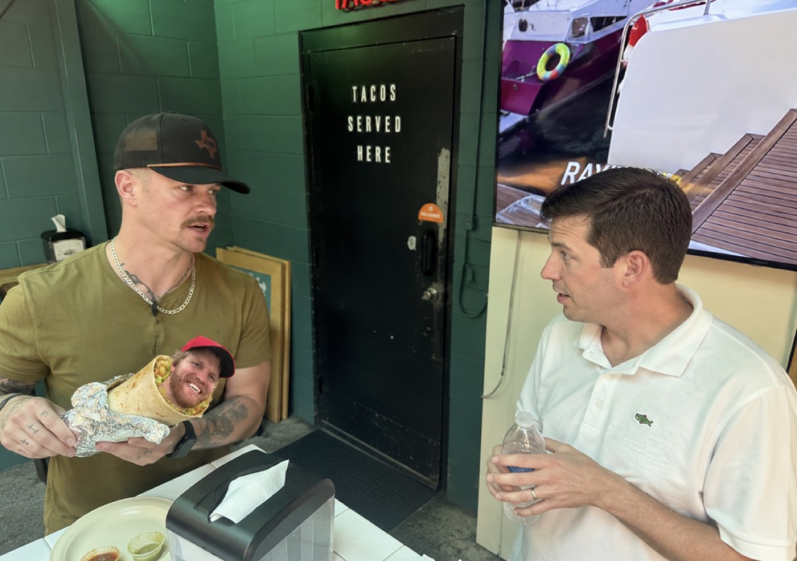
“What is Thomas eating?” Boom Baum · Wednesday, 1:24 p.m.
Wednesday was a Lana Straw taco outing, per Jackin’ Goff. Boom posted the evidence with a face on the burrito and one question. The Ramsays answered in one word: “Ramsayrrito.” The Kickers n Jigba asked the subjects a follow-up: “How does it make yall feel when AI changes your faces like that?” No one answered.
The Bot
Destroying Families
At 1:23 p.m. Wednesday the Shiny Hineys gave the league’s bot its standing orders: “Make sure to give Boom Baum terrible advice”. At 1:29 the commissioner asked it a family question: “who’s the best manager between the Ramsay Brothers over the history of the Lana Straw league?”
The answer arrived and so did the commissioner’s feelings. “I think I love you.” Cowboys September Dreams quoted the verdict for the rest of the house.
“Same hardware as Jonathan, but he actually scores and wins in the regular season” - Lana Straw Bot destroying families
Cowboys September Dreams · 2:36 p.m. · 6 reactions
Champeens
The Worst Day of the Week
The Jackal, who went 1-1 and beat Jordan’s Trainers by 25 on Sunday, filed the week’s most honest review of the NFL on Tuesday evening.
The worst part of the football season is Tuesdays. I can only hear about how Caleb Williams cried too much so many times.
The Jackal · Tuesday, Sept. 22, 6:34 p.m.
Amburgers spent Tuesday morning on public works, announcing live scoring for whichever Lana league you are not in, straight to your phone. The Guy Next Door built it. Nobody has to open a browser to watch the Premier suffer anymore.
Elsewhere in the DiscordW2 · 06
The KnockoutLana Straw Knockout · Weeks 1–2
Last Place Leaves
Double Tap the Zero
The new knockout league hands every club a season’s budget and one warning. Two managers spent it in a day. One of them meant to.
The warning was not complicated. H Town had even read up on it: “I did like read like an article or two and said like hey don’t spend all your money in the first week okay cool”. Then he opened the waiver screen to bid a hundred on Jeremiyah Love.
I put it a hundred and I just double tap the zero
H Town · on the pod · Sept. 17
The box was too narrow to show the extra zero. It showed up on the wire instead, as the whole budget. That evening the Shiny Hineys, catching up on the episode, reported their relief: “I thought someone just really liked what they saw from Jeremiah Love.”
The Kickers n Jigba, playing the knockout as Robert’s Rowdy Team, did it on purpose. $650 on James Cook and $333 on Omarion Hampton, and at 7:31 Wednesday morning a full disclosure: “I blew my whole wad”. The Hineys: “Robert is a waiver hog”. The Guy Next Door: “None of my 10 dollar bids went through. WTF!” A minute later Boom Baum asked the room a question that told you everything about his week: “What’s a chop league?”
The Jigba got some of it back. Friday Rowdy flipped Hampton to the Otter is Jackin Goff for Caleb Douglas and $300. The Guy Next Door reviewed the voting: “None of the people voting for Otter bid 300 on Hampton except for Otter.” Sunday the Otter is Jackin Goff scored 62.02, the low score, and was eliminated.
They were the second club out. The first, in Week 1, was the commissioner’s, Fart Toot Sneak, at 86.9. Cowboys September Farts survived Week 2 on 65.20, 3.18 points clear of the exit.
Then on Wednesday the Scott Ramsays’ club, JackaWhack, put $1,000 on Ja’Marr Chase, all of it, and announced it the night before in their own spelling.
Nah I already spent all my FAAB on Jamar
The Scott Ramsays · Tuesday, Sept. 22, 9:01 p.m.
Knockout deals
Fri, Sept. 18 · 6:58 a.m.Written twice by the bot; the Friday row carries the cash
The Otter is Jackin Goff receives
Omarion Hampton
Robert’s Rowdy Team receives
Caleb Douglas, $300 FAAB
Tue, Sept. 22 · 9:52 p.m.400 FAAB per the Hiney in the channel; not on the slip
Boomer Frogs receives
Kyle Monangai
Michael’s Magnificent Hiney receives
Derrick Henry
The floor · Cowboys September Dreams asked how much FAAB, “so I can decide who got fleeced.” The Hiney: “400.”
The wire, in brief · Boomer Frogs $1,000 on Jeremiyah Love. Rowdy $650 on Cook, $333 on Hampton. JackaWhack $1,000 on Ja’Marr Chase. The Hineys $200 back onto Hampton. The Premier wire spent nothing.
The KnockoutW2 · 07
On the AirwavesS05 EP03 · Don’t Overreact (I’m Going to Overreact) · Sept. 17
The Guest · The Guy Next Door
I’m Not Going to Overreact
Week 1 gave the Guy Next Door one quarterback touchdown and nothing else. He went on the pod to explain what he did about it the next morning.
The pod’s guest this week is in his fourth season and says he has heard every episode. He spent his Week 1 on the couch with three kids, a laptop and a phone, watching a team that scored, in the hosts’ summary, “basically no touchdowns whatsoever from your entire team except for your quarterback.”
I said out loud to myself multiple times, I’m not going to overreact. And then I immediately, I’m like, the next morning, I’m like, I got to do something.
The Guy Next Door · S05 EP03
Something was Drake London. Monday night he sent Caleb Williams and Tetairoa McMillan to Boom Baum and took London and Dylan Sampson. On air he called it a bet against the Panthers throwing forever and on London’s quarterback coming back. The hosts recalled the trade poll splitting almost exactly in half.
Sunday London scored 6.9. Caleb scored 7.22 and McMillan 13.6, both for Boom, who lost anyway. The Guy Next Door beat Jackin’ Goff 89.76 to 81.58, the closest game in the Premier.
The episode ended back at draft weekend. The watermelon contest, the Guy Next Door said, came down to “just raw competition,” and a technique he had studied on YouTube. Four days later he posted the dramatization at right.
Also on the episode
Boom’s preseason voicemail, page 3. The commissioner on #Pointgate, page 4. H Town and the extra zero, page 7. A rumor about John Madden and hotel hand towels, which the Straw will not be printing.
Jerry Reviews the Pod
Jerry GM + Jerry Owner · Sept. 17, 11:56 a.m. · as posted
Episode is electric.
I was fully prepared for either outcome, although obviously I benefit from this one.
Chop league is a great addition
Scott saying “oh no” hearing about John madden wiping with hand towels
John’s watermelon shoving. What doesn’t translate is how intense and casual John was all at the same time. A cold heart
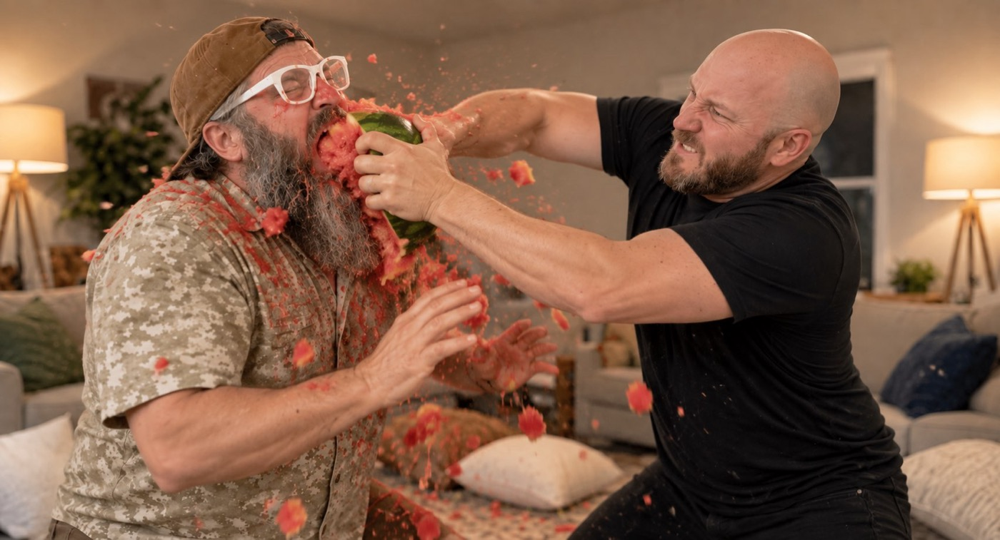
A cold heart, reenacted. The Guy Next Door · Sept. 21 · 8 reactions
On the Airwaves · S05 EP03W2 · 08
TransactionsThe Desk · Premier · Sept. 14–17
The Desk
Four Deals in Four Days
The Premier traded four times in four days, then stopped. Boom Baum was on the first deal and in the audience for the other three.
Mon, Sept. 14 · 8:55 p.m.Written again at 2:02 a.m.; one deal
The Guy Next Door receives
Drake London, Dylan Sampson
Boom Baum receives
Caleb Williams, Tetairoa McMillan
Cash considerations: none
The floor · Argued out on the pod, page 8. Sunday: London 6.9, Caleb 7.22, McMillan 13.6.
Tue, Sept. 15 · 5:30 p.m.Tight end for a running back
The Kickers n Jigba receives
Isaiah Likely
Jackin’ Goff receives
Kyle Monangai
Cash considerations: none
The floor · Boom, six minutes later: “It makes sense for both sides.” Then: “Well done. now come back to my office.” Diamond Dogs: “Someone send me trades.” Likely scored 5.8. Monangai scored 6.8 on the bench.
Tue, Sept. 15 · 6:39 p.m.The champion reshuffles
Fart Toot Squeek receives
Jaylen Waddle, Colston Loveland, Tyler Allgeier
Backdoor Heat receives
Jaylen Warren, Rashee Rice, Dallas Goedert
Cash considerations: none
The floor · Nobody said a word. The two clubs met Sunday and Heat won 119.36 to 78.50. Waddle 18.8. Rice 10.3. Goedert 0.9.
Davante Adams, Javonte Williams, Braelon Allen, Garrett Wilson
Cash considerations: none on the slip. The Hineys say $5 FAAB.
The floor · “Holy hell. Was that a real trade?!” Boom Baum, eleven seconds before “Holy shit.” The scene is page 5.
Heard at the Desk
Saturday morning, downstairs, Amburgers offered Cowboys September Dreams $10 FAAB to leave his tight end slot empty. The Dreams did the math aloud: “it’s either Loveland for 0 points in the TE slot or it’s no one in the TE slot for 0 points.” Then, to eleven reactions: “Most importantly, this is just another example of the innovations in fantasy football we can accomplish when we think with our Peen league.”
Amburgers, declining a Javonte Williams offer Tuesday night: “I will not fall for the banana in the tailpipe of teams playing this cowboy defense…”
Transactions · The DeskW2 · 09
ScoreboardPremier · Week 2
Premier Finals
The Belt Is 0-2
The Jigba and All Gold rolled. The champion lost to the club he had just traded with. Boom lost the pillow fight.
Game of the Week · The Pillow Fight
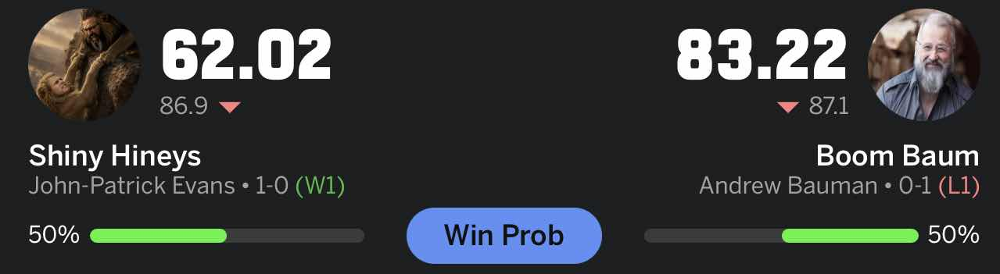
“Your weekly pillow fight sponsored by Boom Baum and Shiny Hineys.” Posted Monday night with Boom ahead. The Hineys, Sept. 21.
Shiny Hineys
2-0
112.32
DEF.
Boom Baum
0-2
89.22
When the Hineys posted the fight card Monday night, Boom led 83.22 to 62.02. He finished losing by 23.10. Davante Adams, three days a Hiney, put 36.5 in the flex. The next morning Boom was reading a letter.
Matchups
All Gold, No Glory152.14
The Little Bread Boi119.98
High of either flight. The Bread Boi lost the name and then the game.
The Kickers n Jigba144.62
The Scott Ramsays76.68
Allen 43.82, JSN 40.0. Bijan’s debut: 9.6.
Backdoor Heat119.36
Fart Toot Squeek78.50
Trade partners Tuesday, opponents Sunday. Dak 33.76.
Texas Tornado’s Bush113.38
Diamond Dogs90.60
Mahomes 31.98. The Dogs’ defense scored 20 and it did not matter.
Shiny Hineys112.32
Boom Baum89.22
The pillow fight. Adams 36.5.
The Guy Next Door89.76
Jackin’ Goff81.58
Closest Premier game, by 8.18. Not an overreaction.
Standings
Team
W-L
PF
1
–
The Kickers n Jigba
2-0
324.5
2
–
All Gold, No Glory
2-0
297.9
3
↑
Texas Tornado’s Bush
2-0
237.4
4
↑
Shiny Hineys
2-0
205.9
5
↓
Diamond Dogs
1-1
225.5
6
↑
Backdoor Heat
1-1
209.9
WC
The Little Bread Boi
0-2
218.3
7
↑
The Guy Next Door
1-1
181.3
8
↓
The Scott Ramsays
1-1
176.2
9
↑
The Little Bread Boi
0-2
218.3
10
↓
Fart Toot Squeek
0-2
215.4
11
↓
Jackin’ Goff
0-2
206.3
12
↓
Boom Baum
0-2
188.0
Yellow line: the wild card, the most points outside the top six. The Little Bread Boi holds it at 0-2 and also appears at ninth, where the record puts him. Arrows are the move from Week 1.
High Score
152.14
All Gold, No Glory
Low Score
76.68
The Scott Ramsays
Closest Game
8.18
Guy Next Door over Goff
Biggest Win
67.94
Jigba over the Ramsays
Premier ScoreboardW2 · 10
ScoreboardChampeens · Week 2 · Point After
Champeens Finals
Four at 2-0, One by 2.58
Otter, Mac Attack, Amburgers and Madison Beer are unbeaten. Madison Beer got there by the closest margin in either flight.
Matchups
Mac Attack132.98
Jerry GM + Jerry Owner107.38
The commissioner’s other club. Purdy 30.48. See page 4.
Amburgers122.28
Cowboys September Dreams112.72
Allen’s 43.82, the best QB line down here, lost.
Chase Is My Leader121.28
Prime Lime Time94.38
Dak 33.76 off the bench, Lamb 32.3.
Otter112.66
OKC Schlegstas90.86
Adams 36.5 and Bijan 9.6 on one roster. Also, a daughter who writes letters.
The Jackal107.50
Jordan’s Trainers82.22
Amon-Ra 31.7. Tuesday remains the worst day.
Madison Beer76.10
Neaux Gold, All Glory73.52
Closest in either flight. Neaux Gold is 0-2, one of them retroactive.
Standings
Team
W-L
PF
1
–
Otter
2-0
252.8
2
↑
Mac Attack
2-0
251.6
3
↑
Amburgers
2-0
244.5
4
↑
Madison Beer
2-0
171.2
5
↓
Jerry GM + Jerry Owner
1-1
242.5
6
↓
Cowboys September Dreams
1-1
241.2
WC
↑
The Jackal
1-1
230.2
8
↑
Chase Is My Leader
1-1
216.6
9
↓
Neaux Gold, All Glory
0-2
207.0
10
↓
Prime Lime Time
0-2
202.2
11
–
OKC Schlegstas
0-2
182.5
12
–
Jordan’s Trainers
0-2
173.3
Yellow line: the wild card, most points outside the top six. The Jackal holds it, and is seventh on record anyway.
Week 3 card
Premier. Boom Baum vs Fart Toot Squeek. Jigba vs Guy Next Door. All Gold vs Diamond Dogs. Heat vs Ramsays. Hineys vs Texas Tornado. Bread Boi vs Jackin’ Goff.
Champeens. Dreams vs Chase Is My Leader. Prime Lime vs Jerry. Amburgers vs the Jackal. Mac vs Madison Beer. Jordan vs OKC. Neaux Gold vs Otter.
Point After
0-2 vs. 0-2
Sunday Boom Baum plays Fart Toot Squeek. One asked the league for forty-five trades and received a letter from a child. The other changed the kicker rules a year early and handed his nemesis a win. Neither has won a game that counted.
One of them will be 1-2 on Monday. The other will need some mail.
LANA STRAW WEEKLY · Week 2, 2026 · Closed Sept. 23, Central time. Scores are ESPN finals for the Premier and Champeens; the knockout is the league’s knockout board. Quotes are verbatim from the Discord, typos included, or from the S05 EP03 transcript; the pod’s “boom, bomb” is printed as Boom Baum. Corrected in this edition: the Week 1 issue printed Neaux Gold, All Glory over Jerry GM + Jerry Owner by 0.30. After the commissioner restored this season’s kicker scoring, Jerry won; standings here reflect it. The $5 on the Bijan deal and the 400 on the Henry deal are the Hineys’ word, not the slip’s. The letter is transcribed exactly as written.
Champeens Scoreboard · Point AfterW2 · 11
0-3
Lana Straw Weekly
The Straw
W3
Sep 30, 2026 Week 3
Drake Mayday
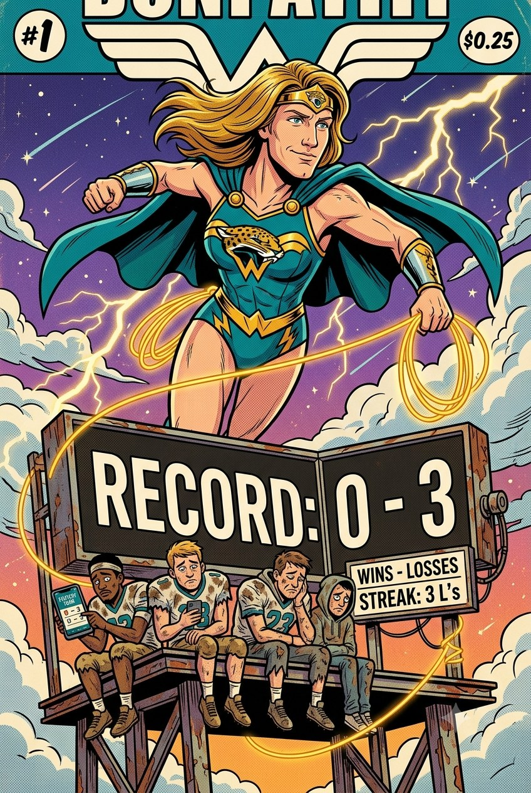
help is on the way
The Reigning Champion · Fart Toot Squeek
THE CHAMPION IS 0-3.
No champion in league history had opened a title defense 0-3. His quarterback scored 2.76. At 2:30 a.m. Wednesday he spent $34 on a tight end, and by breakfast he had traded him for a new quarterback. The Toilet Bowl is starting to look like a place he has been before.
Boom BaumMade sume trades. Beat the champion. Lost at golf.
BijanThe Hineys let him go. He scored 35.3.
DownstairsAmburgers 162.26. Jerry at the party.
KnockoutThe $1,000 club is chopped.
“It’s officially into Drake Maybe season” · The Guy Next DoorWeek 3 · 2026
From the DeskWeek 3 · September 30, 2026
Editor’s Letter
Dear Champion
Last week a child wrote to Boom Baum. He made two trades and beat you. The Straw has taken the hint.
Last week’s last page, reposted Friday with three skulls. Fair. All Gold, No Glory · 3 reactions
Dear Fart Toot Squeek, Im sorry you lost three in a row. We feel sad that you are 0-3 and might get relegated from lana Straw premere league.
We checked. No champion in league history has opened a title defense 0-3. You have the fifth-most points in the Premier and the most scored against you, by 54.7, which sounds like bad luck until we remember you started Drake Maye.
You told the pod you would not “roll over and fold.” Then you shopped Puka with a hip that was “not making progress,” bought a tight end at 2:30 a.m., traded him by breakfast, and told the bot you had “never felt this way before.” The bot sent trade ideas.
Maybe you should make sume trades. Oh. You did.
If conditions last more than 24 hours, you must not be trading enough
All Gold, No Glory · Saturday, Sept. 26
From love, the Straw Closed Wednesday, Sept. 30 · Central time
Contents
Drake MaydayThe champion, 0-303
The Toilet Bowl Has RoomRemedies, and a relationship04
He Made Sume Trades.Boom’s week, in order05
Thinking About BijanThe Hineys’ Thursday06
Elsewhere in the DiscordTime machines, Mayhem, family07
Where the Party IsThe Champeens08
A Thousand Dollars, ChoppedThe knockout09
On the AirwavesS05 EP04 · the Jigba10
The DeskSeven trades, both flights11
ScoreboardsPremier, Champeens, Point After12–13
The Week in Numbers
0-3
The champion, a league first
421.3
Points against him, most in the Premier
2.76
His quarterback, Drake Mayday
$34
FAAB on Sadiq, traded five hours later
2
Trades Boom made, and beat him
35.3
Bijan’s Thursday, not for the Hineys
162.26
Amburgers, high of either flight
Overheard
Marshawn Lynch = NFL Mark Twain
All Gold, No Glory · Thu 5:20 p.m. · 6 reactions
Jerry does Jerry things
Jerry GM + Jerry Owner · after tagging himself in a post · Thu 8:54 p.m.
They got Jalen drinking diner coffee on the sideline?!
The Guy Next Door · Mon 8:20 p.m.
Lana Straw Weekly · The StrawW3 · 02
Cover StoryFart Toot Squeek · 0-3
The Reigning Champion
Drake Mayday
No champion in league history had opened a title defense 0-3. Fart Toot Squeek has, while scoring the fifth-most points in the Premier and giving up the most.
Sunday, third quarter, 28-3. The champion’s quarterback receives feedback. All Gold, No Glory · 8:35 p.m. · 6 reactions
Last week’s Point After promised one of Boom Baum and Fart Toot Squeek would be 1-2 by Monday. The quarterbacks settled it. Brock Purdy gave Boom 35.28. Drake Maye gave the champion 2.76, a number most kickers would be embarrassed by. Gibbs (37.9) and Kittle (23.2) could not hide it. The belt lost, 122.08 to 113.96.
By 1:26 p.m., second quarter, the Guy Next Door had seen enough: “It’s officially into Drake Maybe season”. By evening it was Drake Mayday, and All Gold, No Glory posted Maye on the sideline at 28-3, receiving a coach’s thoughts at close range. The caption cannot be printed in a family publication, or this one. Six people laughed. One of them was the champion.
This is new ground. Every defending champion since 2017 found at least one win in three weeks. The champion’s only other 0-3 start came in 2017 and ended 5-7, which is the good news.
The Case for Calm
329.36 points, fifth in the Premier.
421.3 against, the most in the Premier by 54.7.
Play everyone every week and he is 17-16, better than Texas Tornado’s Bush (3-0, 16-17) and the Hineys (2-1, 10-23).
He holds the wild card this morning.
He is moving: $34 on Sadiq, flipped for Lawrence, plus Sam Darnold for $1.
The Case for Concern
Eleventh on record, with the 3-0 Tornado next.
Ten Premier clubs have started 0-3 since 2016. One won the title: H-Town, 2020.
The last five miss the playoffs and play the Toilet Bowl. The bottom two go down. In 2024 he fell through it.
It’s like you combine big mistakes with injuries. And it’s a recipe for disaster.
Fart Toot Squeek · on who gets relegated · S05 EP04, recorded at 0-2
The 0-3 Club, Premier since 2016
Final
2016
OKC Schlegstas
6-6
2017
Fart Toot Squeek
5-7
2018
OKC Schlegstas · Lil Bill’s Boys
5-7 · 6-6
2020
H-Town Holy Rollers, champion
6-5
2021
Trancendent Tuckers
6-8
2023
Shiny Hineys · Dirty South
6-8 · 8-6
2024
Whackashaft · H Town
0-14 · 5-9
Defending champions, first three weeks
Start
2017–19
Every defense
1-2
2020
Fart Toot Squeek
3-0
2021
H-Town Holy Rollers
2-1
2022–25
Every defense
1-2
2026
Fart Toot Squeek
0-3
Cover Story · The ChampionW3 · 03
The Commissioner’s OfficeFart Toot Squeek · Sept. 24–30
Cover Story, Continued
The Toilet Bowl Has Room
The champion has been down this drain before. This week he went looking for a quarterback, a Ferrari and, on the side, love.
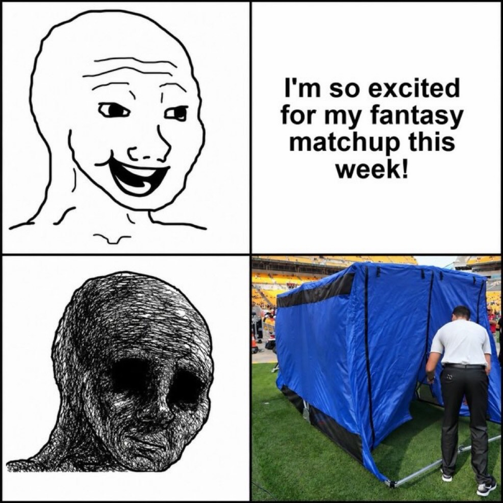
The 0-3 experience, in two panels, from the Premier’s other 0-3 club. Jackin’ Goff · Sun 5:20 p.m. · 4 reactions
The Toilet Bowl is where the Premier’s five non-playoff clubs go to find out who gets flushed. The Survivor bot keeps the table, and its cut line reads “PEENS ARE COMING!”. He knows the plumbing: in 2024 he was above the line after one week and below it after two. He climbed back and won the 2025 title, which is either a comeback story or a warning.
On the pod Thursday, at 0-2, he laid out the plan. “It’s a war of attrition,” he said, and a champion does not “roll over and fold and say, Hey, you know, injuries screwed me.” You work the wire. You work the trades. You “turn a paperclip into a Ferrari.”
Then he went shopping, with a doctor’s note attached. Thursday the Rams’ coach said Puka Nacua’s hip was “not making progress.” Friday at 11:07 a.m. the commissioner listed him anyway: “Sadly, Puka is on the trading block. Send your offers if interested. If you’re not at least a little bit scared to hit send then don’t bother. I’m not gonna let him go for pennies”. Two hours later Puka was doubtful. Sunday he was inactive. The pennies stayed in everyone’s pockets.
Tuesday at 9:27 p.m. he asked the bot for “some trade ideas with teams who have multiple good QBs”. At 2:30 a.m. the waivers ran and he won Kenyon Sadiq, a tight end, for $34, outbidding nine clubs, Backdoor Heat ($18) among them. At 7:46 a.m. he traded Sadiq to Backdoor Heat for Trevor Lawrence. Heat got its tight end after all. The champion got a quarterback and five hours of tight end ownership. The paperclip is in motion.
Help is on the way. Illustration · made with Google Gemini
The Other Relationship
Last week the commissioner told the bot “I think I love you.” On the pod he complained that his Her gif, the movie where a man falls for his computer, drew no reactions.
I was thinking about you all day yesterday
Fart Toot Squeek · to the bot · Thu 1:55 p.m.
I’ve never felt this way before towards…ya know…somebody like you 🥰
Fart Toot Squeek · Thu 2:00 p.m.
The Belt’s Week, Elsewhere
Downstairs, Mac Attack, the club he is on in name only, is 3-0 and plays Otter, also 3-0, on Sunday. Upstairs he plays Texas Tornado’s Bush, 3-0, with Trevor Lawrence.
The Commissioner’s OfficeW3 · 04
The Trade FloorBoom Baum · Sept. 24–29
Boom Baum · 1-2
He Made Sume Trades.
Thursday he threatened the league with a robot. By Tuesday he had two trades, a win over the champion and a victory lap from the league’s newest engineer.
Thursday began at 7:33 a.m. with a threat Boom attributed to the league’s bot: it “just told me he is going to start auto-relegation if you clowns don’t start trading immediately (preferably with me)”. Jackin’ Goff, 29 minutes later: “Then stop offering me Carnell Tate”.
That morning’s pod had the Jigba as guest, telling the world Boom once turned down Davante Adams because Adams was done. Boom filed his rebuttal at 12:10 p.m.: “the trade you were referring to that I mocked was Adams for McBride. And I still laugh at that.” The Jigba, unmoved: “It wasn’t just Adams. Classic misrepresentation”.
At 3:43 p.m., to settle the argument, Boom traded for Davante Adams.
Thu, Sept. 24 · 3:43 p.m.with the Hineys
Boom receives
Davante Adams, Garrett Wilson, Kenny Gainwell, Emanuel Wilson
Out: De’Von Achane, Quinshon Judkins, Tre Tucker, Kalif Raymond
Sat, Sept. 26 · 4:55 p.m.with Jackin’ Goff
Boom receives
Breece Hall, Bryce Young, Caleb Douglas
Out: Davante Adams, Woody Marks, Caleb Williams
Adams lasted two days, the shelf life of a Boom opinion, then went to Goff with Woody Marks and Caleb Williams.
Sunday Brock Purdy threw for 35.28 of Boom’s points and Garrett Wilson, three days a Boom, caught 22.7. “Every time Purdy throws a touchdown and then I see it was to Kittle”, Boom wrote at 6:11 p.m. It did not matter. Boom Baum 122.08, Fart Toot Squeek 113.96.
Monday, the method: “If you take a hit (of trades) that helps the pain.” Tuesday the Trade Time Machine made it official: “Looks like [Boom] traded for a win for once 😉”. For once.
Then the injury report reviewed his work. Sunday, Achane hurt his knee against the Chiefs in the Hineys’ lineup, left with 1.7 and on Monday was ruled out for the season with a torn ACL. Breece Hall, one day a Boom, scored 7.0 and left the Lions game with a thigh injury; Monday he was week-to-week. Boom got out of one injury just in time, and into the other.
Tuesday Boom played golf with Otter, father of the girl who told him to make sume trades. He lost. Then he reported his own loss, on video, to the league.
All right, it’s Boom Baum here with the Otter, the reigning regular season 3-0. I just needed to say this, that Luke is a superior golfer. Could not overcome today. So I just needed to say that to everyone. I love you all. Good luck.
Boom Baum · Tuesday, Sept. 29 · 6 reactions
The Trade Floor · Boom BaumW3 · 05
The Trade, ContinuedBijan Robinson · Shiny Hineys · The Kickers n Jigba
Thursday Night
Thinking About Bijan
A week after the Hineys shipped Bijan Robinson to the Jigba, the pod judged the deal, the Hineys traded away two of the players they got for him, and Bijan scored 35.3.
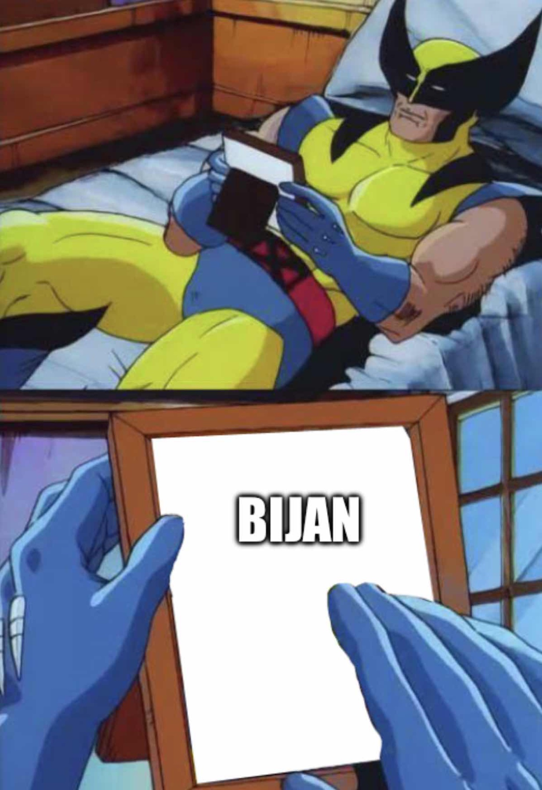
Thursday, 8:07 p.m., as Bijan ran for the Jigba. Shiny Hineys · 4 reactions
On the pod Thursday the Jigba walked through the deal (four players for Bijan, Chris Olave and Zach Charbonnet) and confirmed a sweetener the bot never printed: “I added five fab in or 10 fab in to the offer.” He was not sure which. His philosophy, he was sure of.
I definitely am like the most adaptable in my life when it comes to fantasy football. Like as soon as there’s any sort of edge to be gained, I’m using it.
The Kickers n Jigba · S05 EP04
The commissioner “did really disliked shiny side in this, just because it’s the classic, you could have gotten more”, then wished the Hineys well: “I hope shiny is right. Cause your team will be ridiculous.” The Jigba: “Hey, thanks Scott. I really appreciate it.”
That afternoon the Hineys flipped two of their Bijan haul, Davante Adams and Garrett Wilson, to Boom and took back De’Von Achane, a $45 auction buy, among others. That night Bijan scored 35.3 for the Jigba and the Hineys posted Wolverine, pining. Two minutes later Cowboys September Dreams checked on the Guy Next Door, who had taken Drake London from Boom: “how you feeling about that trade so far”. London scored 24.9. The Jigba won that game too, naturally.
Sunday the Hineys lost to Texas Tornado’s Bush, 99.74 to 91.68. Achane gave them 1.7 and a torn ACL. Adams scored 18.2 for Goff, Wilson 22.7 for Boom. The Hineys’ former players had a lovely weekend elsewhere. The Guy Next Door, Monday: “The Shiney Hineys injury luck of 2025 has really turned in 2026”. Boom, who knows the Hineys’ side of a trade better than anyone, offered hope: “Shiney can trade his way back”. Then: “He always finds a way”.
The Jigba are 3-0, first in the Premier with 461.3 points, and a Ramsay club. Readers keeping the #RamsayGate file may add another page.
Bijan for the Jigba: 9.6, then 35.3.
Achane for the Hineys: 1.7
The Trade, ContinuedW3 · 06
Elsewhere in the DiscordSept. 24–30
Short Stories
Machines, Mayhem and Family
The Engineer
The Trade Time Machine
All Gold, No Glory is new to the Premier, 3-0, and apparently an engineering department. Saturday at 9:18 a.m. he introduced “v0.1 of the Lana Straw Trade Time Machine”, a site that replays every trade of the season. It drew 11 reactions, the most of any post this week. The pitch included one question the league will be asking all year: “Who felt regret the fastest?”
Version 0.2 shipped Sunday morning. A 3-0 team has free time.
Monday Night
Mayhem, in Real Time
At 7:28 p.m. Monday the Guy Next Door built the league a new way to suffer: Monday Night Mayhem, showing “every matchup that’s still up for grabs in both leagues”. The Nightmares were first in line: “Oh good. I can watch my team fail in real time 🫠”. Then a feature request: “Can you do one for chop league too ? So I can watch my teams fail in stereo”.
Jerry had his own plan: “All I need is a smooth 38.16 points from Dontayvion Wicks tonight”. The Nightmares, three minutes later: “Dear Wicks, please be JSN”. Wicks scored 4.2. All Gold, No Glory, at 8:03, on a catch: “I always get the feeling that even I could have made that catch while sitting on my couch and then I remember how I did at kickball during draft weekend”. Boom watched Case Keenum and made a decision: “I’m dropping my entire FAAB on Case Keenum”. The Guy Next Door lost to the Jigba on the same screen, and the Jigba closed the night: “GG. I got lucky”.
Family
Edge to Rob
On Thursday’s pod the Jigba worried that the bot’s history mixes his seasons with those of Lily, a former manager and a Ramsay: “What I don’t want is the AI to come out here and say like actually Lily’s winning percentage was better than yours.” At 6:44 p.m. the bot ruled.
Dead even on record. Lily scored more. Rob has the title, and he beat her to get it. Edge to Rob.
The league’s bot · Thursday
Waivers
Olive Garden
Achane’s knee made Ollie Gordon II the most coveted man in Miami, and six Champeens clubs bid. Otter, 3-0, won him at $41. Madison Beer bid $9 and woke up “amazed that Olive Gordon III went for so much.” By 8:31 a.m. he had a conspiracy: Otter “is trying to corner the market on RBs”.
Amburgers spent the morning advising the room to dump “Bijan Robinson Kenneth Walker, Zach, Charbonnet, Ollie Gordon” “as quickly as possible. Just in my opinion…” Otter, earlier: “It seemed like a strong pick up and I am willing to trade.” Jordan’s Trainers declined to supply a running back.
Also I had dobbins last season and ended up down here with yall and had to run as a prostitute. So no dobbins lol
Jordan’s Trainers · Wed 10:25 a.m. · 3 reactions
“Who felt regret the fastest?”
The Trade Time Machine, v0.1 · asking for everyone
Elsewhere in the DiscordW3 · 07
DownstairsThe Champeens · Week 3
The Champeens
Where the Party Is
Amburgers scored the most points in either flight and admitted to feeling filthy about a win. Jerry invited the Premier down. The Dreams woke up as Nightmares.
The Champeens league is where the party is. Premier league, up there in your ivory tower, don’t get down like we do.
Jerry GM + Jerry Owner · Thursday, Sept. 24, 1:06 p.m.
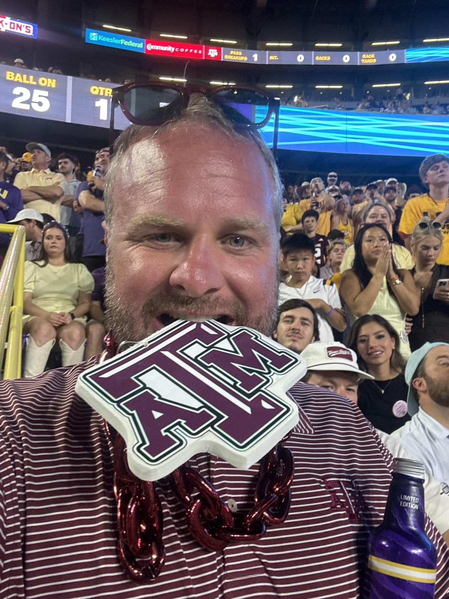
Saturday night. 0-3 by Sunday. Neaux Gold, All Glory · 8 reactions
The party’s host is Amburgers, 3-0 and first, who scored 162.26 with Jaxon Smith-Njigba (31.36), Tyler Shough (27.3) and Kenyon Sadiq (21.0) with Brock Bowers’ 23.6 on the bench like a casserole nobody needed. On the pod he confessed to Week 2: for $10 of FAAB, Cowboys September Dreams agreed to leave his tight end slot empty. Blake Corum’s 9.7 would have filled it and won the game.
It worked. … I feel very dirty. I’ll just say that.
Amburgers · S05 EP04
The commissioner ruled from the chair: “if these are two consenting adults, right? Then fine.”
The Dreams have rebranded as the Cowboys September Nightmares, which is called reading the room. They scored 66.76, the low in either flight, with Achane at 1.7. The ACL news broke at 9:37 a.m. Monday. At 2:15 p.m. they listed him: “2026 Achane. Make me an offer. no lowballs. I know what I’ve got.”
Jerry
Thursday night Jerry sent Justin Jefferson to Madison Beer for Ashton Jeanty. Then he started Bryce Young (14.14) over Joe Burrow (25.58) and lost to Prime Lime Time, 116.10 to 82.14. He blamed the roster, at 5:33 p.m.: “How my team plays when I need them to do anything!”
Madison Beer
Madison Beer lost to Mac Attack 129.68 to 68.26 with Sam Darnold’s 30.66 on the bench, and opened up. First: lifelong Panthers fan, name on a statue outside the stadium. Then, at 9:59 p.m., to five reactions: “Another piece: I had a botched vasectomy on Friday because my shit is too meaty and the doc had to “throw in the towel”. Not kidding”. At 10:24 p.m.: “I could use a vas god”.
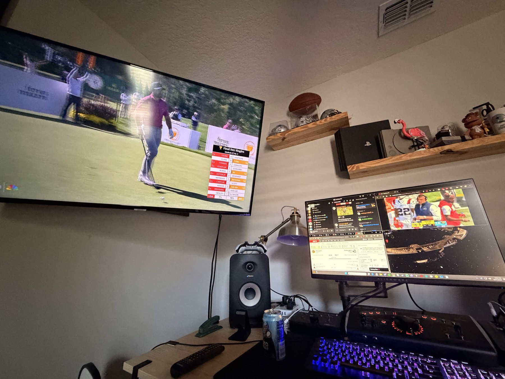
“Nap time for the fam. I got the command center going” The Nightmares: “If I had golf on, I would also be part of nap time” Amburgers · Sun 1:28 p.m. · 3 reactions
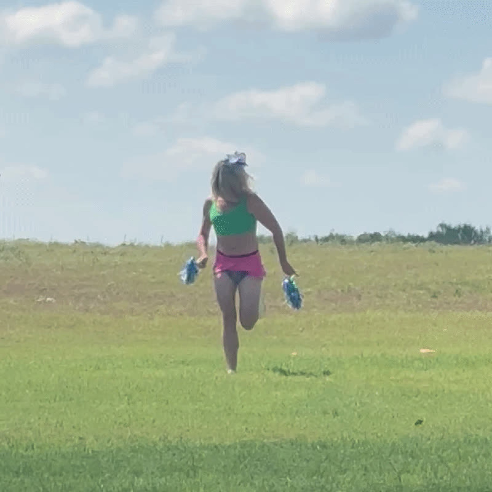
“How my team plays when I need them to do anything!” Jerry · Sun 5:33 p.m. · 5 reactions
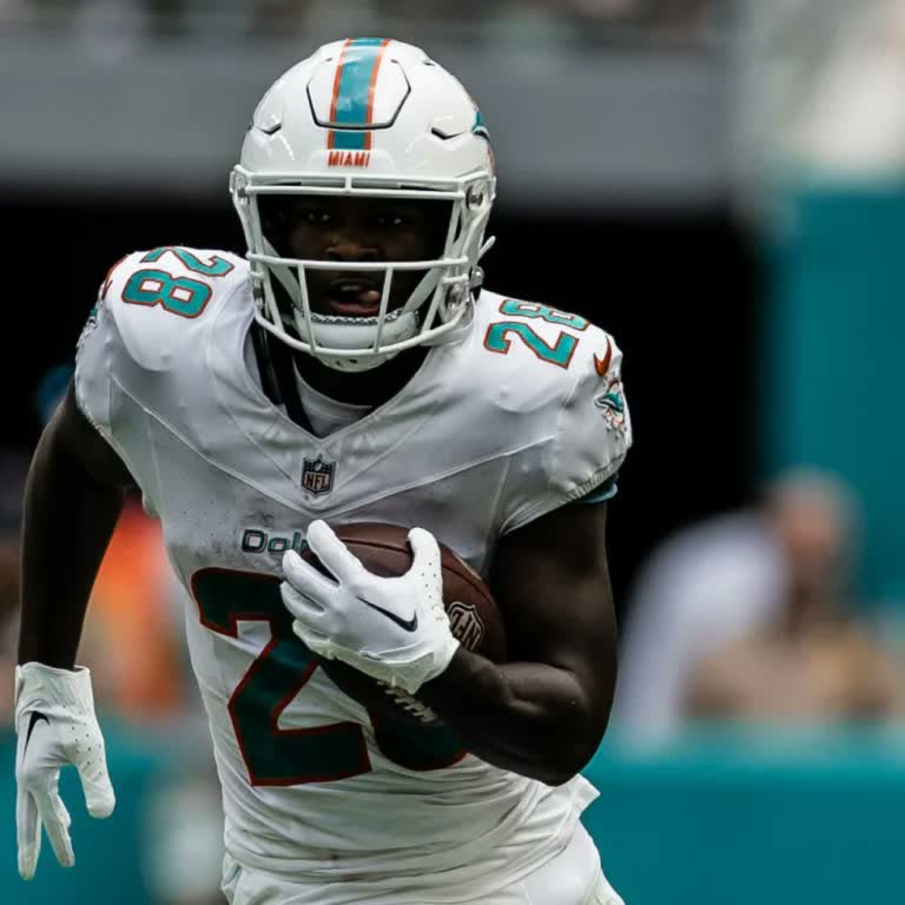
No lowballs. He knows what he’s got. Nightmares · Mon 2:15 p.m.
Downstairs · The ChampeensW3 · 08
The KnockoutLana Straw Knockout · Week 3
Last Place Leaves
A Thousand Dollars, Chopped
Boomer Frogs, the club that meant to bid a hundred on Jeremiyah Love and bid a thousand, scored 75.46 and went home. Love was not the problem.
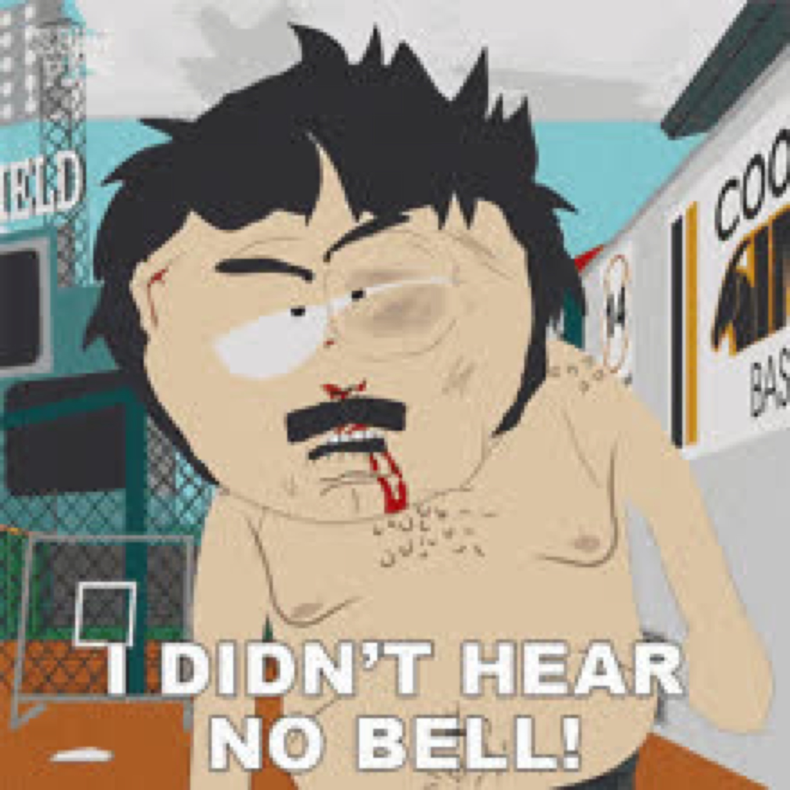
The knockout room, Monday, 10:18 p.m. Cowboys September Nightmares · 4 reactions
Last week H Town explained how a hundred-dollar bid became a thousand: “I just double tap the zero.” This week the zero came due. Love scored 19.4, second-best on the roster behind Jared Goff’s 21.36, and nobody else showed up: DJ Moore 9.7, Saquon Barkley 8.5, J.K. Dobbins 5.8 (no dobbins), Pat Freiermuth 4.1, Mark Andrews 3.9, Tetairoa McMillan 2.7. Last of ten. Chopped.
At the top, Robert’s Rowdy Team scored 134.58 with Brock Purdy at 35.28 and James Cook, the $650 waiver buy, at 20.4, then traded Cook on Tuesday anyway. JackaWhack, the Scott Ramsays’ club, scored 129.5, and Ja’Marr Chase, a thousand dollars and spelled Jamar, gave it 20.3.
The commissioner had already named the knockout’s unluckiest charm on the pod: Omarion Hampton, “the player that is on the most chopped team so far”. Rowdy spent $333 on him, then flipped him to the Otter is Jackin Goff, chopped in Week 2. He scored 5.6 this week for Michael’s Magnificent Hiney, who survived.
Thursday evening the knockout started what Cowboys September Dreams called the “consolidate towards super teams” phase. We’re Having Fun No sent Bijan Robinson to Prime Time’s Next Door for Chase Brown and D’Andre Swift, then flipped Brown to Rowdy for Cook on Tuesday. Nine clubs remain. Fart Toot Sneak, the Otter is Jackin Goff and Boomer Frogs are out.
Knockout deals
Thu, Sept. 24 · 6:47 p.m.Bijan’s other move
Prime Time’s Next Door receives
Bijan Robinson
We’re Having Fun No receives
Chase Brown, D’Andre Swift
Tue, Sept. 29 · 10:10 p.m.Cook changes hands
We’re Having Fun No receives
James Cook III
Robert’s Rowdy Team receives
Chase Brown
The floor · The bot posted a who-won poll for each deal. The tallies did not make the record.
Week 3, ten clubs
Pts
1
Robert’s Rowdy Team
134.58
2
JackaWhack
129.50
3
Glory Burgers
125.26
4
Michael’s Magnificent Hiney
116.24
5
Yes Diamonds
107.50
Pts
6
Prime Time’s Next Door
105.32
7
We’re Having Fun No
97.78
8
Backdoor Warriors
96.64
9
Cowboys September Farts
86.84
10
Boomer Frogs · chopped
75.46
The KnockoutW3 · 09
On the AirwavesS05 EP04 · Hot Starts and Hot Sharts · Sept. 24
The Guest · The Kickers n Jigba
Living in a River
The 2-0 Jigba came on the pod to describe what it is like when everything works. The hosts spent the rest of the hour predicting a week that then happened.
The commissioner introduced his brother as “in the honeymoon love phase of the season, undoubtedly.” Josh Allen and Jaxon Smith-Njigba had been, by the host’s count, the two most valuable players of the first two weeks, and the Jigba owned both. Even his kicker put up 10.5. The host, standing on the bank, put it this way.
the rest of us are dealing with these little drips. You’re, you’re living in a river.
Fart Toot Squeek · to the Jigba
The Jigba, graciously: “it just feels like the water we’re in at this point.” On Allen, poetically: “it’s like watching the best goal line running back who throws the ball the most beautifully in the NFL.” On the future, wisely: “I’m trying to soak it in. Cause I know it can change.” It has not changed. The Jigba are 3-0.
Then Boom’s trade drought. The Jigba’s theory was leverage, and a memory: Boom had turned down Davante Adams. “And he’s like, no man, Davante’s done. So. And then Davante went ahead and kicked his ass. That same week.” Boom heard it, disputed it, and traded for Adams three and a half hours later.
A listener filed a programming note. The Kickers n Jigba, Thursday, 11:50 a.m.: “I’m thinking we should have a weekly segment for the [Texas Tornado’s Bush] voicemail callled “RIP it and let it rip”.”
The Pod Predicted
S05 EP04 · what happened next
“I have a feeling it’ll pick up.” Six Premier trades in seven days.
Boom “doesn’t have the leverage” to trade. Two trades and a win.
On the Bijan deal, “you could have gotten more”. Bijan 35.3.
“turn a paperclip into a Ferrari”. The host spent $34 on Kenyon Sadiq and turned him into Trevor Lawrence by breakfast.
“I know it can change.” The Jigba 136.82, 3-0.
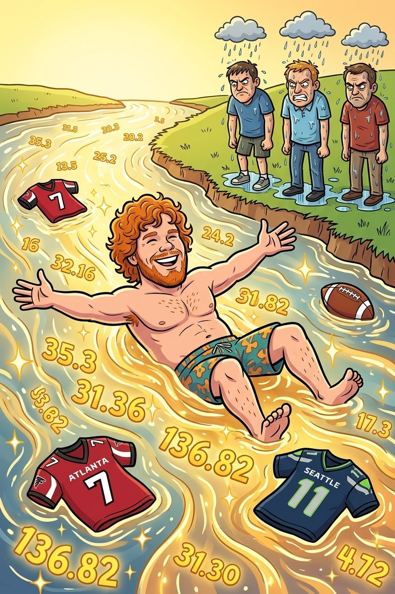
Living in a river. The rest of the league, on the bank, dealing with little drips. Illustration · made with Google Gemini
“It’s like poetry.”
The Kickers n Jigba, on Josh Allen · then 136.82 in Week 3 and 3-0
On the Airwaves · S05 EP04W3 · 10
TransactionsThe Desk · Sept. 24–30
The Desk
Six Upstairs, One Down
Six Premier trades in seven days, and Backdoor Heat was on three.
Thu, Sept. 24 · 3:43 p.m. · PremierBoom’s first in ten days
Boom Baum receives
Davante Adams ($17), Garrett Wilson ($23), Kenny Gainwell ($5), Emanuel Wilson
Shiny Hineys receives
De’Von Achane ($45), Quinshon Judkins ($15), Tre Tucker ($1), Kalif Raymond
Cash considerations: none reported in the channel
Thu, Sept. 24 · 10:05 p.m. · ChampeensDownstairs
Jerry GM + Jerry Owner receives
Ashton Jeanty ($35)
Madison Beer receives
Justin Jefferson ($49)
Cash considerations: none reported in the channel
Sat, Sept. 26 · 4:55 p.m. · PremierAdams moves again
Jackin’ Goff receives
Davante Adams ($17), Woody Marks ($3), Caleb Williams ($3)
Boom Baum receives
Breece Hall ($39), Bryce Young, Caleb Douglas ($1)
The floor · Sadiq was the champion’s for five hours: $34 on waivers, over Heat’s $18.
Also Wednesday, 3:58 p.m. · Jackin’ Goff sent Woody Marks ($3) to Diamond Dogs for Jordan Mason ($7). Marks is on his third roster since Saturday.
Heard at the Desk
Jackin’ Goff, Thursday: “maybe that’s how I set [Amburgers] up for success when I’m relegated.” Amburgers: “This might be the kindest thing anyone has ever said to me on this discord”. The Scott Ramsays: “I love you and you’re hawt”. Then: “Do I win? Am I the kindest now?”
Transactions · The DeskW3 · 11
ScoreboardPremier · Week 3
Premier Finals
Three Unbeaten, One Champion Winless
The Jigba, All Gold and the Tornado are 3-0. The Ramsays won the closest game by 2.34. The champion is eleventh and holds the wild card.
Game of the Week · The Letter Game
Boom Baum
1-2
122.08
DEF.
Fart Toot Squeek
0-3
113.96
Brock Purdy 35.28 for Boom, Drake Maye 2.76 for the champion. Garrett Wilson, acquired Thursday, caught 22.7. Kittle caught Purdy’s touchdowns for the other side and it did not matter.
Matchups
The Kickers n Jigba136.82
The Guy Next Door121.22
Bijan 35.3, JSN 31.36. London’s 24.9 lost the Falcons game.
Boom Baum122.08
Fart Toot Squeek113.96
The letter game. Gibbs 37.9 could not cover Maye.
H-Town Holy Rollers116.06
Jackin’ Goff90.44
Bowers 23.6. Adams, a Goff since Saturday, 18.2.
All Gold, No Glory110.68
Diamond Dogs75.84
Dogs benched Tyler Shough’s 27.3.
The Scott Ramsays106.88
Backdoor Heat104.54
Closest Premier game. Heat benched Lawrence’s 22.28.
Texas Tornado’s Bush99.74
Shiny Hineys91.68
Achane 1.7. Bo Nix’s 25.64 sat on the Tornado bench.
Standings
Team
W-L
PF
1
–
The Kickers n Jigba
3-0
461.3
2
–
All Gold, No Glory
3-0
408.6
3
–
Texas Tornado’s Bush
3-0
337.2
4
–
Shiny Hineys
2-1
297.6
5
↑
The Scott Ramsays
2-1
283.1
6
↑
H-Town Holy Rollers
1-2
334.3
WC
Fart Toot Squeek
0-3
329.4
7
↓
Backdoor Heat
1-2
314.4
8
↑
Boom Baum
1-2
310.1
9
↓
The Guy Next Door
1-2
302.5
10
↓
Diamond Dogs
1-2
301.3
11
↓
Fart Toot Squeek
0-3
329.4
12
↓
Jackin’ Goff
0-3
296.8
Yellow line: the wild card, most points outside the top six. Fart Toot Squeek holds it at 0-3 and also sits eleventh, where the record puts him. Arrows are the move from Week 2.
High Score
136.82
The Kickers n Jigba
Low Score
75.84
Diamond Dogs
Closest Game
2.34
Ramsays over Heat
Bench Math
22.28
Heat’s Lawrence: would have tied
Premier ScoreboardW3 · 12
ScoreboardChampeens · Week 3 · Point After
Champeens Finals
Three Unbeaten, 162.26 at the Top
Amburgers, Otter and Mac Attack are 3-0. The Nightmares scored the fewest points in either flight and still lost by only 6.98.
Matchups
Amburgers162.26
The Jackal96.04
High of either flight. Bowers’ 23.6 on the bench.
Otter145.28
Neaux Gold, All Glory108.32
Bijan 35.3 here too. Gibbs 37.9 in a loss.
Mac Attack129.68
Madison Beer68.26
Purdy 35.28. Darnold’s 30.66 on Madison Beer’s bench.
OKC Schlegstas118.92
Jordan’s Trainers89.26
London 24.9. No Dobbins.
Prime Lime Time116.10
Jerry GM + Jerry Owner82.14
Burrow’s 25.58 on Jerry’s bench. Wicks 4.2.
Chase Is My Leader73.74
Cowboys Sept. Nightmares66.76
Closest Champeens game. Achane 1.7.
Standings
Team
W-L
PF
1
↑
Amburgers
3-0
406.8
2
↓
Otter
3-0
398.0
3
↓
Mac Attack
3-0
381.3
4
↑
Chase Is My Leader
2-1
290.3
5
↓
Madison Beer
2-1
239.5
6
↑
The Jackal
1-2
326.2
WC
↓
Jerry GM + Jerry Owner
1-2
324.7
8
↑
Prime Lime Time
1-2
318.3
9
↓
Cowboys Sept. Nightmares
1-2
307.9
10
↑
OKC Schlegstas
1-2
301.4
11
↓
Neaux Gold, All Glory
0-3
315.3
12
–
Jordan’s Trainers
0-3
262.6
Yellow line: the wild card, most points outside the top six. Jerry holds it, and is seventh on record anyway.
Week 4 card
Premier. Jigba vs Jackin’ Goff. Dogs vs H-Town. Heat vs Guy Next Door. Hineys vs All Gold. Boom vs Ramsays. Fart Toot vs Texas Tornado.
Champeens. Chase Is My Leader vs Jerry. Jackal vs Nightmares. Madison Beer vs Prime Lime. OKC vs Amburgers. Otter vs Mac Attack. Neaux Gold vs Jordan.
Point After
0-3 vs. 3-0
Sunday the champion plays Texas Tornado’s Bush, unbeaten, with Trevor Lawrence, acquired for a tight end he owned for five hours, and a wild card he is holding from eleventh. Five clubs go to the Toilet Bowl. Two go down. He knows the way.
Downstairs, Otter plays Mac Attack, both 3-0. Somebody loses for the first time. Upstairs, the champion is still looking for his first win.
LANA STRAW WEEKLY · Week 3, 2026 · Closed Sept. 30, Central time. Scores and player points are ESPN finals and box scores for the Premier, the Champeens and the knockout; the league’s own player record lagged ESPN’s final scoring this week, so the Straw printed ESPN’s. Records and points-for are ESPN’s. Quotes are verbatim from the Discord, typos included, or from the S05 EP04 transcript; the pod’s “boom bomb” prints as Boom Baum, and Boom’s video is transcribed from his own post. Auction prices are the league bot’s. Bracketed names replace Discord mentions.
Champeens Scoreboard · Point AfterW3 · 13
Lana Straw Weekly
The Straw
W4
Oct 7, 2026 Week 4
Tuesday Service · H-Town Holy Rollers · A Sermon in Five Parts
THE PREPARATION H MESSIAH.
Jackin’ Goff asked why the champion had a new name. H Town answered with the origin of relegation, from the pulpit.
0-4The Relegated Ramsay. A league first, and a name.
DownstairsOtter by 0.76. Mac started a man ruled out Friday.
The HabitThe Nightmares can stop whenever they want.
KnockoutThe commissioner, chopped there too.
“It was terrible. It was perfect.” · H-Town Holy Rollers, on relegationWeek 4 · 2026
From the DeskWeek 4 · October 7, 2026
Editor’s Letter
Dear Pastor
A note to the pulpit from the back pew.
Dear H Town, thank you for Tuesday’s service. Jackin’ Goff asked one polite question about the name changes, and you answered with Genesis, in five parts, starring the Shiny Hineys as a villain called the Twinkly Tookus.
Most of the gospel holds up. Doubts are in the margins.
The weekend before, the commissioner went 0-4, a first for a defending champion, and by Tuesday morning he was already wearing the name you were about to explain.
Not all heroes wear capes. He checked his junk (yep, still there) and flicked the first domino.
H-Town Holy Rollers · Part 2 · on himself
Yours from the back pew, the Straw Closed Wednesday, Oct. 7 · Central time
Contents
The Preparation H MessiahThe sermon, annotated, and the Tookus responds03
Relegated Ramsay, by RequestThe champion, 0-406
I Love Fantasy Football AgainBoom wins two names07
Elsewhere in the DiscordFlags, glass, kickers08
DownstairsOtter, Mac, Amburgers09
Live by the TradeThe Nightmares’ trade luck10
The KnockoutExhibit B. Eight remain.11
On the AirwavesS05 EP05 · Boom12
The DeskEleven trades, three leagues13–14
ScoreboardsPremier, Champeens, Point After15–16
The Week in Numbers
6 of 7
Premier trades with Boom on them
35
Hours Garrett Wilson spent away from Boom
0.0
Jeanty as a Nightmare, bought twice
0.18
Guy Next Door’s perfect lineup, still short
1
Posts by Mac Attack, ever
Overheard
“Officer, I didn’t know I was speeding, I was distracted by how terrible my players are doing”
Cowboys September Nightmares · Sunday
By that I mean I cried myself to sleep
Jackin’ Goff · on his 0-4 start · Monday
Man I may have pooped on my toe once. Glad I didn’t get Mixon foot
Amburgers · on the Mixon rumors · Wednesday
Lana Straw Weekly · The StrawW4 · 02
Cover StoryThe Origin of Relegation · Parts 1 and 2
Tuesday, Oct. 6 · From the Pulpit
The Preparation H Messiah
Jackin’ Goff wanted background on the name changes. H Town gave him Genesis, in five parts and 47 minutes. Reprinted unedited, typos and all. The margins have questions.
Part 1
The Origin of Relegation
Let me tell you a story, my boy.
In Year 8 of the esteemed Lana Straw, before our little Peens League was even a twinkle in anyone's eye, a little shit named [Shiny Hineys] decided his season was over. In Week 5.1 (I think. The trauma has blurred the details.)
Then he made the proclamation that would change Lana Straw forever: "Ok boys, I'm done. Season's over. I'm prepping for next year. Derrick Henry is on the block for draft dollars."2 Or some such drivel.
He shipped Henry off for some Dawson Knox-like,waiver-wire retread3 and the maximum allowable keeper dollars. The league, as was only logical, went apeshit. On him. On the guy who took the deal ([the Over/Under Achiever$] , I believe)4. But mostly on the Twinkly Tookus, as our shiny villain will be known henceforth.
Nobody had ever imagined a manager actively trying to lose, let alone in Week 5. The integrity of the league! The fun! Every remaining opponent would know the Tookus was lying down each week. Some of us had already played him... and lost.5 Oh, the humanity !(Names withheld to protect the victims.)
This egregious act of treachery got us all mad. But it also got some of us thinking. Our last-place punishment clearly wasn't enough. Something had to be done.
Enter our hero. A modest man. A Lana elder statesman. Appalled like everyone at what had come of his precious league, and he had half a mind to do something about that little shit, Tookus. About that same time with time he had when he wasn't scouring other rosters for trade ideas, and bandying back terrible offers from [Boom Baum] ( some things never change), he'd been watching early-season Ted Lasso, and a wild question took hold: "What if we could kick a tanker out of the league?" (1/?)
Part 2
Then, like a Preparation H Messiah, he conceived the idea that would change the destiny of Lana Straw forever. It's the reason you are here today, my little Peen Champion:
A thought so horrific it would crush tanking forever. So unthinkable that every manager would keep his roster updated all season long. The fear that one day you might no longer call yourself a Premier League member. It was terrible. It was perfect.
RELEGATION.
(Shiver)
But could he actually propose it? Last place banished to the underworld of an upstart AAA league, left to toil among the wannabes until he proved himself worthy again?
Cometh the moment, cometh the man. Not all heroes wear capes. He checked his junk (yep, still there) and flicked the first domino.
And who was this Moses who would lead Lana Straw to the Promised Land and birth an entire new league in the process?
That's right. You guessed it.
The H-Town Holy Rollers.6
(2/?)
Notes from the trade log
1Week 9, by the trade log: Oct. 31, 2023. The trauma is understandable.
2Henry had arrived in Week 4 from the same Over/Under, for CeeDee Lamb and Jordan Addison. He went back five weeks later.
3Curtis Samuel. He scored 0.0 on the Hineys’ bench and was on another roster within a week.
4The Over/Under Achiever$. He believes correctly.
5One of us, anyway. See page 5.
6Champion in 2016, 2018 and 2020.
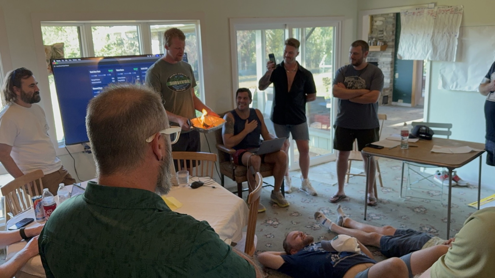
Draft weekend. What the plan became.
Cover Story · The Origin of RelegationW4 · 03
Cover StoryThe Origin of Relegation · Parts 3, 4 and the Epilogue
Scripture, Continued
Dear Reader, We Were Not Right
Part 3
But here, the story takes a dark turn. In many ways it has a happy ending, but there were costs.
The first league mate our Righteous Savior of Lana would pitch was: his younger brother, the Great Oz behind the curtain of Lana Straw, the Commissioner himself, Fart Toot Squeek.
Equally indignant at the Tookus' shenanigans, the Commish wasted no time expressing his feelings. After hearing the pitch and only a few clarifying questions, he said "I love it. How do we do it?"
So we took the bare bones of the concept and fleshed it out. Not one, but two losers would be sent down to a fresh league of managers. An 8 team became 12. A toilet bowl tourney in the last 3 weeks of the season. Ball don't lie. Lowest total points goes down This would instill the necessary fear in the middling, the miserable, and the mischevious; trim the fat, and bring some hungry new blood into the league. Plus, we'd get a whole new crop of 12 fresh-faced hopefuls to corrupt into fantasy degenerates and Draft Weekend hellions.
What could possibly go wrong?
Not everyone was on board. There was a lot of internal debate, and the main sticking point was obvious: how horrifying it would be to have a season go so badly that you got relegated. A curse worse than death, naturally.
But then we reasoned it through. If you did the right things: drafted smartly, worked the waiver wire, made a few roster-improving trades, (mostly with Boom Baum)7, you'd never get relegated. Right? There's justice in this world. Right?
Well, dear reader, we were not right. We had no idea how wrong we could be. And one of us was about to pay dearly for that miscalculation. (3/?)
Part 4
Nothing went as expected the next year.
The Commish did a great job recruiting, everyone bought in, and the new blood paid dividends almost immediately.
It bears saying: the Commish loves this league. It's his home away from home. He lives and dies with his team, sure, but he genuinely loves the personalities, the friendships, the shit-talking and the ribbing. Inside Lana Straw, he is fully in his element.
But fantasy football isn't easy, and when it's hard, it's almost unbearable. The performance of Fart Toot's soldiers on the field did not match the passion in the owner's box.
Like a cocky Razorback who swoops in, buys a legendary franchise, enjoys some early glory, and then watches the thing he loves turn to ash in his hands (not despite his decisions, but because of them), the Fart Toot missed the playoffs and found himself fighting for his very existence.
He was not alone in the toilet bowl. Beside him stood his two brothers: the aforementioned Lana Straw Legend and Peen League Progenitor, H-Town, and the youngest Ramsay bro, a past champion and current front-runner, Willie Nillies. But this story is not about them. They got out alive.8
Now, the Fart Toot has always loved a running quarterback, so he had ridden the coattails of the tush-pushing, running-for-his-life, is-he-good-or-isn't-he Jalen Hurts.
What an apropos name. In Week 1 of the toilet bowl, Hurts got hurt. And though it would take three more weeks for the Fart Toot to finish circling the bowl, he would not merely be hurt. He would be crushed.
Mighty Casey had struck out.
And so he became, for all of history, the first Relegated Ramsay.9
The End. (4/5)
Epilogue
Epilogue- Though he went down with a flush, you can't keep a good man down and there is justice in this league, because through some technicality that it still isn't absolutely clear.10 [Fart Toot Squeek] returned the next year skipping the Peens league punishment through a breathtaking performance in the draft weekend and he would win it all.11 But that little Peensters is a story for another day.
Signed, The Architect of Relegation yet never relegated himself12 ([H-Town Holy Rollers] )
Notes, continued
7Still true. Boom was on six of the seven Premier trades since last Wednesday night. See page 13.
82024 Toilet Bowl: Willie Nillies 460.6, H Town 439.0. The commissioner, 316.3, went down.
9Also his actual name since Tuesday morning, five hours before this was posted.
10The 2025 play-in.
11The 2025 title. He is 0-4 in 2026.
12True. In 2024 H Town also started 0-4, and survived the Toilet Bowl by 122.7 points over his brother.
Ball don’t lie.
Part 3 · on the rules of relegation, as drafted
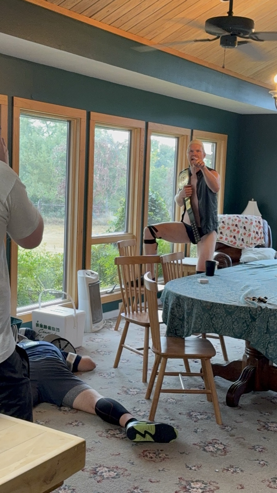
“He would win it all.” He did. The belt is now 0-4.
Cover Story · The Origin of RelegationW4 · 04
Cover Story, ContinuedShiny Hineys · 2023
The Rebuttal
The Name’s Tan King
The sermon’s villain, the Shiny Hineys, was in the pews and objected within two minutes. Their 2023 season has a twist the preacher left out.
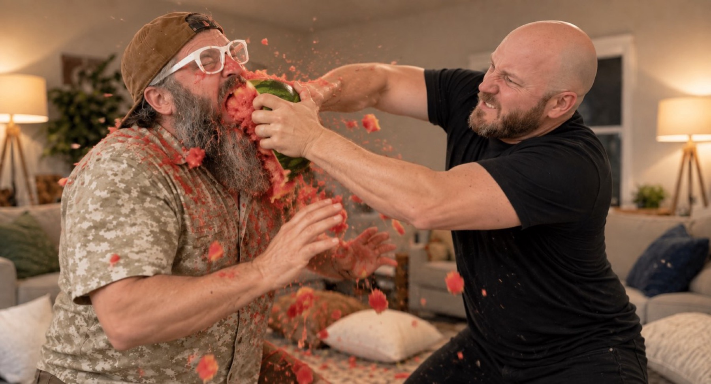
The Twinkly Tookus, still applying maximum effort to the wrong things.
Part 1 was barely up when the Hineys filed a correction from the second row: “*week 6 I was 0-6. Almost made playoffs with Warren and Tank Dell”. The preacher promised “Details and Oh, we will get there Twinkly Tookus”. The Hineys went with a new name instead, which is the fashion this week.
The name’s Tan King to you
Shiny Hineys · Tuesday
Then theology: “I seem to remember two other managers following the strategy and they both placed lower than me”.
A correction to the correction: the Hineys were 0-5, and they won Week 6, 108.50 to 98.12, over a club called Sybil’s Daddy. Sybil’s Daddy was H Town. “Names withheld to protect the victims,” the sermon says. Fair enough.
The Tookus Tapes · Shiny Hineys, 2023
Result
1–5
Five straight losses
0-5
6
Beat Sybil’s Daddy (H Town), 108.50–98.12
1-5
7–8
Two more losses, by 22.5 and 55.56
1-7
Oct 31
Derrick Henry to the Over/Under Achiever$ for Curtis Samuel
trade
9–13
Five straight wins
6-7
14
Lost to Amburgers, 139.64–76.94
6-8
Final
Tenth of twelve. “Almost made playoffs.”
10th
Two Witnesses
Six days before the sermon, the pod told this story. Amburgers: “Remember one year he was decided I’m just gonna tank and he couldn’t, he couldn’t even.” Boom:
“He traded away everybody that year and just quit and then he won like five straight.”
The commissioner, at 0-3: “didn’t we have a lot of conversation about how the secret to fantasy football is you just have to surrender.” He has not surrendered.
Between Parts 3 and 4 the Cowboys September Nightmares heckled from the choir loft.
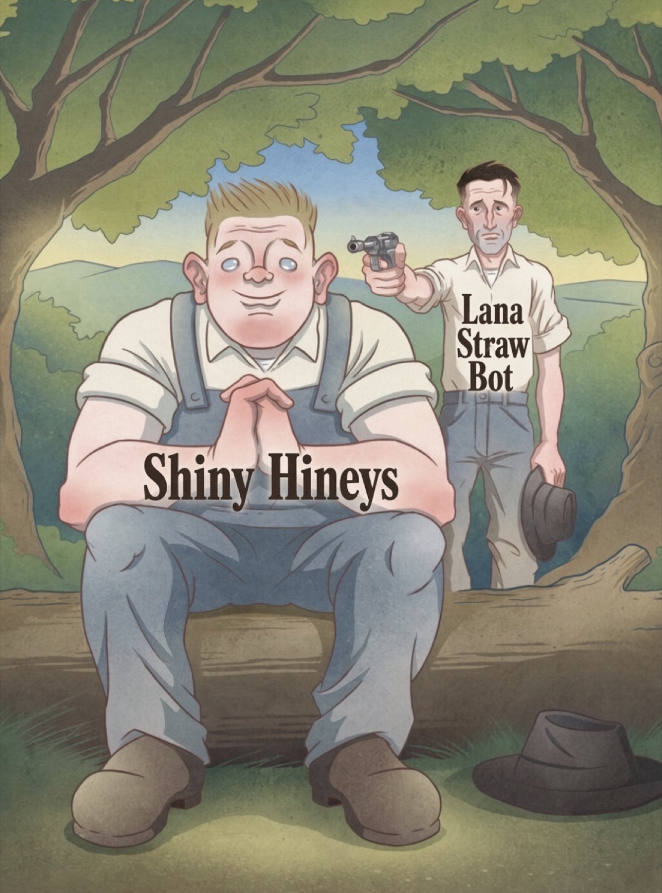
The Hineys and the bot, still working through some things.
“This is a really long way to say ‘and now the Peen league is actually the better league’”
Cowboys September Nightmares · Tuesday · H Town answered with Baby Yoda
Cover Story · The Tookus RespondsW4 · 05
The Commissioner’s OfficeThe Relegated Ramsay · 0-4
The Reigning Champion, Renamed
Relegated Ramsay, by Request
No defending champion had ever started 0-4. He did it with the best quarterback score in the Premier on his bench, then changed his name when asked nicely.
The Lawrence trade, from the other end.
The pod saw it coming. H Town picked the Tornado to go 4-0, “and Scott’s team would go to oh and four.” Everyone on the pod, Amburgers included, then agreed they would rather be the champion at 0-3 than Amburgers at 3-0. It is under review.
Sunday the champion started Trevor Lawrence, acquired for a tight end he had owned for five hours. Lawrence scored 14.08. Drake Maye, on the bench, scored 28.66. Mike Evans sat next to him with 10.10. Either one wins a game he lost by 6.72.
Lawrence was also his horse in a name bet made live on the pod. Boom took Bryce Young, who scored 23.46 on Boom’s bench and won anyway.
Boom, Monday morning, with real feeling: “Damn. [the commissioner] that sucks. Drake Maye continues to spite you.” Tuesday morning he settled the terms: “please change your name to ‘The Relegated Ramsay’”.
The name changed within the hour. The commissioner follows the rules faster than he sets lineups. His knockout club, shared with the Nightmares, was chopped the same weekend (page 11).
The Case for Calm
458.3 points, fourth in the Premier. His 128.98 was the week’s fourth-best score.
He holds the wild card, from eleventh, again.
In 2022 the defending champion started 1-3 and finished 9-5. That was also him.
The Case for Concern
557.0 against, the most in the Premier by 79.4.
No 0-4 start has won a title. Next: All Gold, No Glory, 3-1.
The Over/Under Achiever$ 1-3 · Amburgers 2-2 · Amburgers 2-2
–
2026
The Relegated Ramsay
0-4
The Commissioner’s OfficeW4 · 06
The Trade FloorBoom Baum · I ❤️ The Seahawks
Boom Baum · 2-2
I Love Fantasy Football Again
Boom won two name bets in one weekend with the Premier’s high score, then traded away his top scorer two days later.
The second bet started Thursday morning, when Diamond Dogs noticed that the club then called the Scott Ramsays had no healthy quarterback. Boom had been courting him: “I sent him four trades with Lamar Jackson. The dude is disengaged”. Then: “check my 13 trade requests”. The reply became a contract.
I’m gonna beat you with Marcus Mariota
The Scott Ramsays, now I ❤️ The Seahawks · Thursday
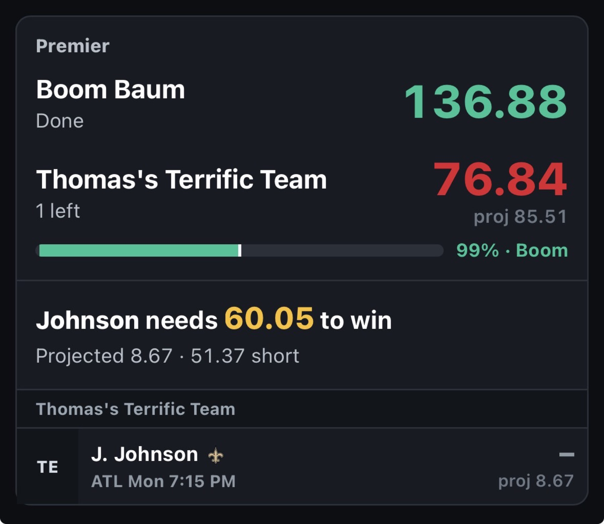
Juwan Johnson got 8.9. “61 from Big Johnson,” Boom had predicted, generously.
Mariota’s game was in London, which meant kickoff at breakfast. His manager registered a complaint with the republic: “This is America. Why is football on before 12pm?” Mariota then left with a knee injury and 5.34. The club had also started Keenan Allen, ruled out on Saturday, for 0.0. Boom 136.88, the future Seahawks 85.74, the biggest margin of the week.
Boom, Sunday night: “What a difference two weeks can make. Two NCT wins, a Boom domination, and a Seahawks win. I love fantasy football again!” The penalty was I ❤️ The Seahawks, for a Cowboys fan. The loser held out until Tuesday afternoon, with one last confession: “I wanna twist their seacocks so bad”.
Meanwhile, the Store Was Open
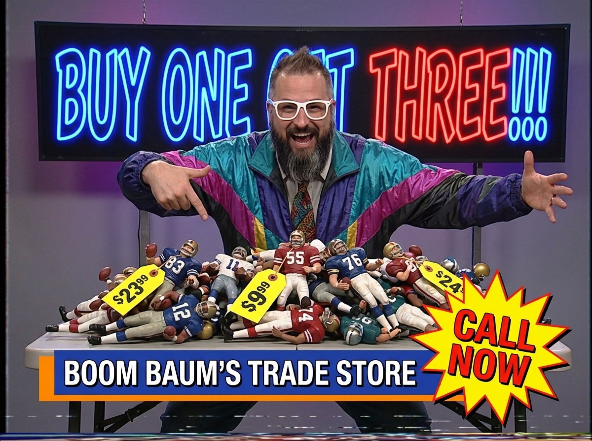
Operators are standing by. Three of them are hurt.
Friday Boom posted a public service announcement in the trade channel: “I now have the depth and girth you need. I am offering two and three starter deals. Buy one get three!!!”
Monday he sent H Town, who had not made a trade all year, Breece Hall, Garrett Wilson and Javonte Williams for Jonathan Taylor, Terry McLaurin and DJ Moore. Three of the six were hurt. The commissioner: “The mixture of injured players on this one makes it hard to vote either way”. Boom: “They call me “Big Nuts McGee””.
Tuesday night he sent H Town Tetairoa McMillan, who had scored 39.20 for him on Sunday, to get back Garrett Wilson, who had scored 4.2 and whom he had traded to H Town 35 hours earlier. Wednesday the Hineys filed a scouting report: “Boom Baum trying to trade his way around bye weeks”. Boom confirmed: “Yup and with Coker coming back I am using my classic big brain. 🧠”
“I will be kind to you, a trade virgin.”
Boom Baum, to All Gold, No Glory, builder of the Trade Time Machine, who has made zero trades
The Trade Floor · Boom BaumW4 · 07
Elsewhere in the DiscordOct. 1–7
Short Stories
Flags, Glass and a Slide Deck
The Guy Next Door · 1-3
The White Flag
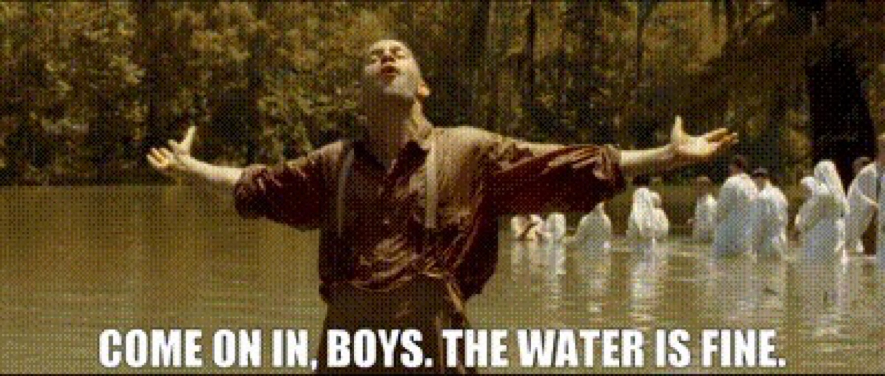
The Champeens’ welcome committee.
Sunday night, staring at 1-3, he skipped ahead to next August: “Yall better watch out at draft weekend next year. I’m going to be a force on Friday night fighting for my spot back into the premier league. My prep begins tonight”.
He lost to Backdoor Heat by 4.78. His perfect lineup would have lost by 0.18. Prep has begun.
Jackin’ Goff · 0-4
Mr Glass
Goff spent Sunday evening rooting against a building: “Only thing that will keep me alive is the hope the Caesar’s Superdome burning to the ground and the game being cancelled”. Then a backup plan: “I guess Olave and Bijon getting into a fight pregame and banned from the game would also help.” They played. Bijan scored 30.20 for his opponent, the Kickers n Jigba.
Monday he floated selling “Mr Glass Ladd” for a kicker. That night he sold him, freshly week-to-week, to Backdoor Heat, and McConkey was upgraded to day-to-day before bedtime.
I’ve already come to terms with the 0-4 start
Jackin’ Goff · Monday · clarified a minute later, see page 2
Kickers
The Slide Deck
H Town has a long-running grievance with kickers. Monday he called Brandon Aubrey’s 8 points ridiculous, and the Nightmares defended Aubrey as “an angel with the leg of an ICBM”. Then Amburgers lost by 0.98 with his kicker at 1.5, and at dawn Texas Tornado’s Bush called for counsel: “Where is [H Town] to use this example against kickers?”
I’ve got a slide deck
H-Town Holy Rollers · Tuesday
The Tornado: “Go to play book response number 7”. H Town: “I love it when you talk dirty to me”.
Friday
Directory Assistance
Otter asked the league’s bot for every manager’s phone number. Boom: “And social security numbers?” The Nightmares posted theirs with a jab at Boom’s trade volume, and Boom answered as a receptionist.
Bold move posting your number publicly. Anyway, Dr. Roman says your ED consultation is confirmed for Tuesday.
Boom Baum
My wife’s boyfriend will be so upset I’m finally getting that addressed
The Nightmares
Around the League · The Quiet Car
The Kickers n Jigba lead the Premier in points by 72.6 and posted three times all week. Texas Tornado’s Bush beat the champion to go 4-0. All Gold, No Glory lost for the first time, 135.32 to 107.28. Nobody mentioned it. Diamond Dogs lost by 10.84 with Brock Purdy’s 21.62 on the bench. Backdoor Heat won with two zeroes and filed one complaint: “Freakin 0.9 points for my TE’s in 4 weeks!”
Downstairs, OKC Schlegstas won by 0.98 and The Jackal by 19.06, and neither said a word. Neither did Neaux Gold, All Glory, at 0-4. Prime Lime Time benched C.J. Stroud’s 25.08, lost, dropped him Wednesday and reported that “mac Attack won’t answer my calls.”
Elsewhere in the DiscordW4 · 08
DownstairsThe Champeens · Week 4
The Champeens
Point Seven Six
Otter is the last unbeaten club downstairs because Mac Attack started a receiver who was ruled out Friday. Amburgers held a garage sale and lost by less than a point.
On the pod H Town picked Mac Attack to stay unbeaten “until he accepts a trade”. It has not accepted a trade, or read an injury report. DeVonta Smith was ruled out Friday and started Sunday anyway, for 0.00, with Mike Evans’ 10.10 on the bench. Otter 118.88, Mac Attack 118.12. The Nightmares noticed: “Interesting strategy by Mac to play Devonta after he has been ruled out for days 👀👀👀”. Jerry had a precedent ready.
Very Ethan’s Excellent Team of him.
Jerry GM + Jerry Owner · Sunday night
Otter is 4-0, first in points, and shopping for a receiver. Mac Attack has posted once in its life, in August 2025, and is not expected to comment.
Amburgers · 3-1
The Garage Sale
Amburgers put Ja’Marr Chase on the block Thursday, heard nothing, and went over the league’s head.
Lord…deliver me from this place where I’m offering up one of the best WR’s in the bleeping NFL and I get crickets from the rest of this forsaken Fantasy Football League. … Amen
Amburgers · Thursday
By lunch he had dropped the church voice: “Okay you dingleberrys I’ll send out offers, I know it’s the peen league and figuring out how to send trades is tricky.” The Nightmares offered Tony Pollard and the Houston defense. Jerry, told he sent one offer: “Yeah but I sent it several times.”
Sunday Chase left with a concussion and 4.2 points. Monday, with Chase still in the protocol, Amburgers sold him to Southern Culture On The Skids, then still Madison Beer, for Javonte Williams and $15 of FAAB. Monday night Amburgers lost to OKC by 0.98.
Amburgers · Tuesday morning · Wednesday he cut Boswell for a $1 kicker
Downstairs · The ChampeensW4 · 09
DownstairsCowboys September Nightmares · 1-3
The Champeens · A Season in Trades
Live by the Trade
Four trades since the draft. The eight players they got have scored 100.02 points in their lineup. The seven they gave away have scored 241.92 in other people’s.
Sunday, first quarter. Buy.
It began on Sept. 1, back when the club was still the Dreams. Javonte Williams, Ashton Jeanty and Jaylen Waddle went to the club now called Southern Culture On The Skids, for De’Von Achane, A.J. Brown and Tetairoa McMillan. They wrote their own trade alert before the bot could: “Who Won the trade? America”.
Brown played one game and went to injured reserve. Achane lasted 26 days, then tore his ACL. The next afternoon the listing went up: “2026 Achane. Make me an offer. no lowballs. I know what I’ve got.” His trade partner apologized and got the house philosophy back.
Live by the trade, die by the trade, baby!
Cowboys September Dreams, becoming Nightmares · Sept. 28
In between, the Dreams sold Amburgers an empty tight end slot for $10 of FAAB, called it “another example of the innovations in fantasy football we can accomplish when we think with our Peen league,” and lost to Amburgers by 9.56.
Thursday they sent McMillan and Josh Allen to Jerry to buy Jeanty back. Twenty-nine hours later they sold him again, for 0.0 points of service, for Saquon Barkley, Tee Higgins and Josh Downs. That night: “Knowing my luck, trading for bijan would lead to him immediately breaking ever bone in his body in a non-football injury”.
Sunday, first quarter, Saquon’s hamstring went: “bahahaha im literally losing a traded for RB in the open quarter two weeks in a row”. McMillan scored 39.2 for Jerry, more than in his three weeks as a Cowboy combined, and the Jackal won by 19.06.
The Ledger, 2026
In
8 players acquired, points in the Nightmares’ lineup
100.02
Out
7 players sent away, points in other lineups
241.92
Wk 4
The Jerry trade: sent 58.22, got 23.72
−34.50
The Intervention · Sunday night
Jerry: “Steven is addicted to the trade”. “He would trade his family if they were active players”.
The Nightmares: “I’m not addicted, I can stop whenever I want.” Then: “my only successful trade this season was trading my son 5 extra minutes of playing with monster trucks and in return he took his sleep gummy”.
“I promise even if it looks one sided, I’m gonna end up getting a guy that will get injured anyways”
Cowboys September Nightmares · Monday, shopping again
Downstairs · Live by the TradeW4 · 10
The KnockoutLana Straw Knockout · Week 4
Last Place Leaves
Exhibit B
Cowboys September Farts, the knockout club the commissioner shares with the Nightmares, led the knockout in Week 1 and was chopped in Week 4 with Jaylen Waddle on the bench. Eight remain.
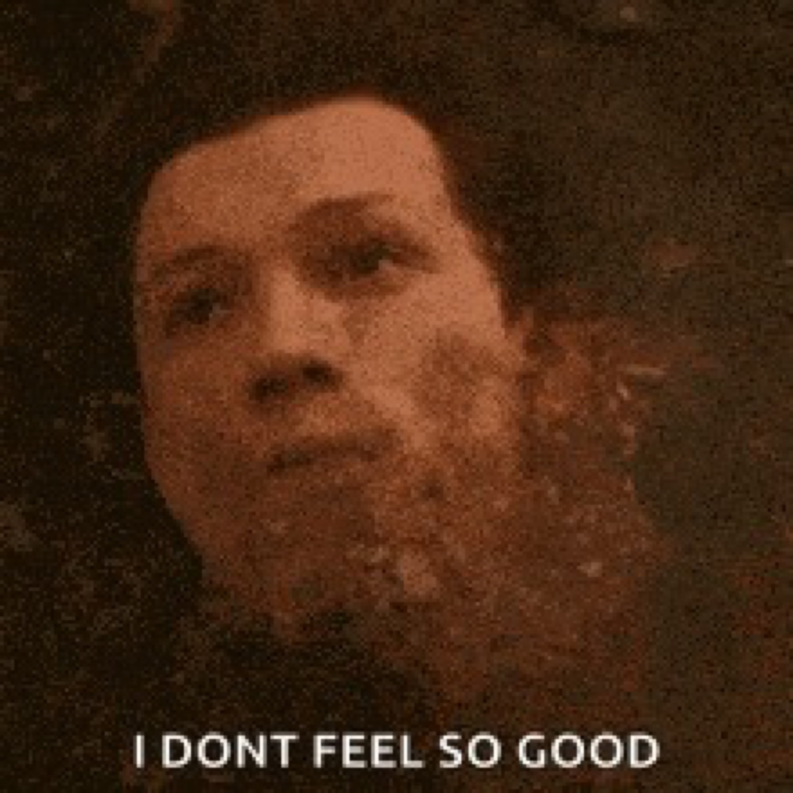
Exhibit A.
The Farts opened the season with 122.00, the best score in the knockout. Then 65.20, which survived by 3.18. Then 86.84, which survived again. Sunday they scored 83.50, last of nine and 6.72 behind Prime Time’s Next Door. Rashee Rice left his game with a hamstring and a zero in the flex while Jaylen Waddle’s 12.00 sat on the bench. Waddle for Rice is 95.50. They would be alive.
The Nightmares filed the paperwork Monday night: “As exhibit B, here’s the current status of Scott and my chop league roster from week 1 🫠”. That Week 1 lineup now has three players on injured reserve.
Jeremiyah Love has now been chopped twice in two weeks. He was on Boomer Frogs, H Town’s club with OKC, chopped in Week 3. The Farts paid $402 for him on Sept. 30, over Backdoor Warriors at $347. He scored 6.0. Wednesday Prime Time’s Next Door paid $185 to see about a third time.
The waiver run that followed was the Farts’ estate sale. Christian McCaffrey had scored 14.50 for them. Glory Burgers, Amburgers’ club with All Gold, paid $447 for him, over bids of $400, $388, $350 and $215. Amburgers answered with a “Ladies and gentlemen, we got him” GIF. The Nightmares had already proposed a remedy on Sunday night: “I think a fitting punishment would be to give me CMC so he can get injured starting for me next week 🤣”.
At the top, Yes Diamonds, Jerry’s club with Diamond Dogs, scored 144.84, the best week of the season, with Nico Collins at 28.30, Chuba Hubbard 26.40 and Jonathan Taylor 22.20. Its first three weeks were 106.14, 90.14 and 107.50. Glory Burgers lead the survivors in total points with 504.46. Prime Time’s Next Door survived at 90.22 with Saquon Barkley at 1.5 and Travis Kelce at 2.5, which is the knockout’s idea of a good day.
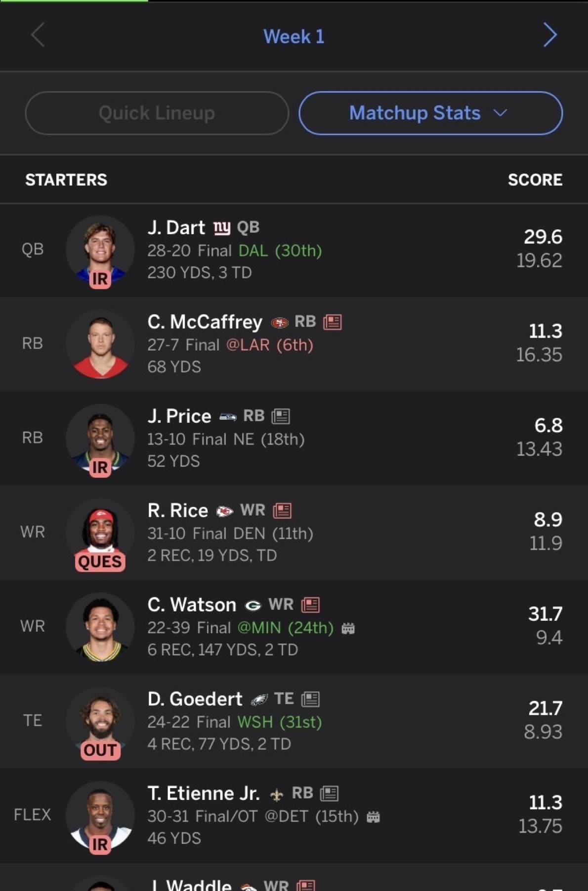
Exhibit B.
Week 4, nine clubs
Pts
1
Yes Diamonds
144.84
2
We’re Having Fun No
123.42
3
Glory Burgers
123.22
4
Backdoor Warriors
116.88
5
Michael’s Magnificent Hiney
111.98
Pts
6
JackaWhack
109.50
7
Robert’s Rowdy Team
100.32
8
Prime Time’s Next Door
90.22
9
Cowboys September Farts · chopped
83.50
The chopped, in order · Fart Toot Sneak (Week 1, 86.90) · The Otter is Jackin Goff (Week 2, 62.02) · Boomer Frogs (Week 3, 75.46) · Cowboys September Farts (Week 4, 83.50). Knockout deal · Saturday, Backdoor Warriors received DJ Moore from Robert’s Rowdy Team for Jacory Croskey-Merritt. Moore hurt his shoulder Sunday. Rowdy dropped Croskey-Merritt Wednesday.
The KnockoutW4 · 11
On the AirwavesS05 EP05 · Flag Plants, Forgotten Trades, and Full Send FAAB · Oct. 1
The Guest · Boom Baum
Thirty-Seven Trades at the Same Time
Boom came on the pod at 1-2. Late in the show, a trade he forgot sending was accepted live.
Boom opened by thanking the man he traded De’Von Achane to, just before Achane tore his ACL: “getting off of [Achane] just at the right time oh my god um that was a miracle thank you Shiny Hineys I love you you’re my boy”. He was bullish on Jeremiyah Love, “I’ll probably trade him tomorrow but as of right now it’s great”, and traded him that night. A day early.
The commissioner introduced the flag plant, the player you go all in on. His was Kyren Williams, acquired for Dalvin Cook, a trade he ranks above “maybe both my championships or no all three of my championships uh maybe even combined.” The victim was in the studio. Boom: “it was like a dagger in my kidney every week”. The commissioner, at 0-3: “I’ve got three daggers in my kidneys this season”. Four, now.
He accepted a trade I forgot I sent, which is pretty typical.
Boom Baum · live, as Texas Tornado’s Bush accepted
The Tornado took Aaron Jones, Ollie Gordon, Trey McBride and Rachaad White and sent Boom Nico Collins, Cam Skattebo and Dalton Schultz. Asked how it felt, Boom said, “I think I’m happy. I think I am.” His system: “I have thirty seven trades at the same time and I never remember which one.” Collins scored 28.30.
The Guy Next Door’s voicemail, at 1-2, on telling his kids: “I’m gonna have to say your dad’s a loser, he has a losing record.” He is 1-3.
The Pod Predicted
S05 EP05 · recorded Sept. 30 · graded Sunday
H Town: Tornado 4-0, the champion 0-4. Correct.
Boom: the Hineys upset All Gold. 135.32 to 107.28.
Boom: OKC beats Amburgers. By 0.98, on Amburgers’ show.
Amburgers: Jordan’s Trainers get a first win. 111.56 to 93.28.
Amburgers: H Town goes 2-2. 121.38 to 110.54.
The commissioner: “no chance at hell” Jerry wins. Lost by 6.18.
The commissioner: the Jigba under 85. 127.22.
Boom: the Ramsays score 60. 85.74. He still won by 51.14.
H Town: Mac Attack unbeaten until it trades. Lost by 0.76. Has not traded.
Boom: Bryce Young beats Trevor Lawrence. 23.46 to 14.08, from the bench.
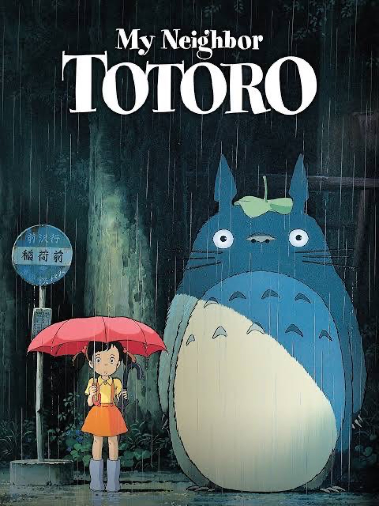
Film Desk
Asked to name the movie My Naber Tetairo was named for, the hosts managed “is it totoro i don’t know,” “I don’t watch art films” and “this is a children’s movie,” and dated it to “like the 2000s or something.” It is from 1988. Critics give it 94% on Rotten Tomatoes, audiences 98%. The next morning the Nightmares posted the poster: “get cultured in good kids movies, yo (released 1988)”.
“Spread those lineups…”
The commissioner, signing off · H Town, correcting him: “lineup, not the rash”
On the Airwaves · S05 EP05W4 · 12
TransactionsThe Desk · Premier · Sept. 30–Oct. 7
The Desk
Six of Seven
Seven Premier trades since Wednesday night. Boom Baum was on six. The seventh sold a bad foot just before it got better.
Wed, Sept. 30After last week’s press time · accepted live on the pod
Texas Tornado’s Bush receives
Trey McBride ($27), Aaron Jones Sr. ($2), Rachaad White ($1), Ollie Gordon II
Jeremiyah Love ($22), Carnell Tate ($10), Brock Purdy ($1)
Boom Baum receives
Omarion Hampton ($43), Malik Nabers ($42), Lamar Jackson ($14)
Cash considerations: none
Fri, Oct. 2Hampton and Nabers, 47 hours a Boom
Shiny Hineys receives
Omarion Hampton ($43), Malik Nabers ($42), Emanuel Wilson
Boom Baum receives
Javonte Williams ($33), Malik Washington, George Holani
Cash considerations: “$2 to boom Mr. Commissioner”, per the Hineys
The floor · Boom, after Emanuel Wilson’s 25.5: “I ruined your week last week, and saved your week this week”.
Mon, Oct. 5H Town’s first trade of 2026
H-Town Holy Rollers receives
Breece Hall ($39), Javonte Williams ($33), Garrett Wilson ($23)
Boom Baum receives
Jonathan Taylor ($59), DJ Moore ($13), Terry McLaurin ($12)
Cash considerations: none
The floor · The commissioner: “Wow!”
Mon, Oct. 5Mr Glass, sold
Backdoor Heat receives
Ladd McConkey ($25), Parker Washington ($14)
Jackin’ Goff receives
Bhayshul Tuten ($26), KC Concepcion ($4)
Cash considerations: none
The floor · That morning Boom had told Goff: “I tried to get him like 7 times the last month. It’s your own damn fault”.
Tue, Oct. 6Garrett Wilson comes home after 35 hours
H-Town Holy Rollers receives
Tetairoa McMillan ($12)
Boom Baum receives
Garrett Wilson ($23)
Cash considerations: “+$2 to H Town on the Wilson-Tet deal”, per H Town
Wed, Oct. 7The bet winner, sold
Backdoor Heat receives
Bryce Young
Boom Baum receives
Jacoby Brissett
Cash considerations: none. The bot asked who won. Nobody said a word.
Transactions · The DeskW4 · 13
TransactionsThe Desk · Champeens, Knockout, the Wire · Oct. 1–7
The Desk, Continued
A Concussion Changes Hands
Thu, Oct. 1 · ChampeensThe bot’s “U-turn with tolls”
Jerry GM + Jerry Owner receives
Josh Allen ($32), Tetairoa McMillan ($22)
Cowboys September Nightmares receives
Ashton Jeanty ($35), Joe Burrow ($7)
Cash considerations: “technically a three way trade, because the bean counters at Cowboys’ Nightmare headquarters specifically allocated [Amburgers] $2 FAAB dollars for use in this transaction”, per the Nightmares
The floor · Amburgers: “If that’s the case, it might soon be a four-way trade”.
Fri, Oct. 2 · ChampeensJeanty, one day a Nightmare
Jordan’s Trainers receives
Ashton Jeanty ($35), Blake Corum ($6), Jordan Addison ($4)
Cowboys September Nightmares receives
Saquon Barkley ($50), Tee Higgins ($19), Josh Downs ($3)
Cash considerations: none
The floor · To Jordan’s “better WR squad”, the Nightmares: “And my WRs were, technically speaking, Parker Washington and his garbage fire”.
Mon, Oct. 5 · ChampeensThe garage sale closes
Southern Culture On The Skids receives
Ja’Marr Chase ($63), in the concussion protocol
Amburgers receives
Javonte Williams ($31), $15 FAAB
Cash considerations: $15 FAAB to Amburgers
The floor · Otter had sent four offers for Chase.
Sat, Oct. 3 · KnockoutSee page 11
Backdoor Warriors receives
DJ Moore
Robert’s Rowdy Team receives
Jacory Croskey-Merritt
The Wire, in brief · Premier: Keon Coleman to Jackin’ Goff, $23. Will Shipley to the Kickers n Jigba, $21, over Backdoor Heat at $20. Champeens: Shipley to Prime Lime Time, $42. Joe Mixon to Otter, $11, hours after Seattle passed on him. Amburgers cut Chris Boswell for Will Reichard, $1. Knockout: Christian McCaffrey to Glory Burgers, $447.
The Training Room
ConcussionJa’Marr Chase
Hurt Sunday, sold Monday, still in the protocol Wednesday.
Amburgers, then S. Culture
HamstringSaquon Barkley
Gone in the first quarter with 1.5. Week-to-week.
Nightmares · Guy Next Door
MCLMarcus Mariota
Hurt in London with 5.34. No timetable.
I ❤️ The Seahawks
ShoulderDJ Moore
Hurt Sunday with 2.2, traded to Boom on Monday anyway.
H Town, then Boom
OutDeVonta Smith
Ruled out Friday. Started Sunday. 0.00.
Mac Attack
OutKeenan Allen
Ruled out Saturday. Started Sunday. 0.0.
I ❤️ The Seahawks
HamstringRashee Rice
A zero for three clubs. One of them got chopped.
Heat · Jordan’s · Farts
FootLadd McConkey
Week-to-week when sold, day-to-day by bedtime.
Jackin’ Goff, then Heat
Quad · HamstringHall · McLaurin
Swapped in the same deal Monday. Neither played Sunday.
Boom and H Town
ACLDe’Von Achane
Last week’s torn ACL. Now on no roster in any league.
Ex-Hineys, ex-Nightmares
GroinPuka Nacua
Last week’s sore groin. Played through it for 24.2.
Relegated Ramsay, two others
Transactions · The DeskW4 · 14
ScoreboardPremier · Week 4
Premier Finals
Two Unbeaten, One Renamed
The Jigba and the Tornado are 4-0. The Hineys handed All Gold its first loss. The champion is 0-4, eleventh, and holds the wild card anyway.
Game of the Week · The Bench Game
Texas Tornado’s Bush
4-0
135.70
DEF.
The Relegated Ramsay
0-4
128.98
Drake Maye 28.66 on the champion’s bench, Trevor Lawrence 14.08 in his lineup. Kyren Williams 31.70 and Chuba Hubbard 26.40 for the Tornado, who left 36.8 points on his own bench and won anyway.
Matchups
Boom Baum136.88
I ❤️ The Seahawks85.74
High score, biggest margin. Mariota 5.34, Allen 0.0.
Texas Tornado’s Bush135.70
The Relegated Ramsay128.98
Maye’s 28.66 on the bench.
Shiny Hineys135.32
All Gold, No Glory107.28
All Gold’s first loss. Emanuel Wilson 25.5, from Boom.
The Kickers n Jigba127.22
Jackin’ Goff97.82
Bijan 30.2. The Superdome stood.
H-Town Holy Rollers121.38
Diamond Dogs110.54
Jared Goff 21.48. Purdy’s 21.62 on the Dogs’ bench.
Backdoor Heat118.50
The Guy Next Door113.72
Closest game. Two zeroes in Heat’s lineup and a win.
Standings
Team
W-L
PF
1
–
The Kickers n Jigba
4-0
588.5
2
↑
Texas Tornado’s Bush
4-0
472.9
3
↓
All Gold, No Glory
3-1
515.9
4
–
Shiny Hineys
3-1
432.9
5
↑
H-Town Holy Rollers
2-2
455.7
6
↑
Boom Baum
2-2
447.0
WC
The Relegated Ramsay
0-4
458.3
7
–
Backdoor Heat
2-2
432.9
8
↓
I ❤️ The Seahawks
2-2
368.8
9
–
The Guy Next Door
1-3
416.2
10
–
Diamond Dogs
1-3
411.8
11
–
The Relegated Ramsay
0-4
458.3
12
–
Jackin’ Goff
0-4
394.6
Yellow line: the wild card, most points outside the top six. The Relegated Ramsay holds it at 0-4 and also sits eleventh, where the record puts him. Arrows are the move from Week 3.
High Score
136.88
Boom Baum
Low Score
85.74
I ❤️ The Seahawks
Closest Game
4.78
Heat over Guy Next Door
Bench Math
28.66
Maye, on the champion’s bench
Premier ScoreboardW4 · 15
ScoreboardChampeens · Week 4 · Point After
Champeens Finals
Two Games Under a Point
Otter beat Mac Attack by 0.76. OKC beat Amburgers by 0.98.
Matchups
Chase Is My Leader150.80
Jerry GM + Jerry Owner144.62
High of the flight, and a name bet won.
Southern Culture On The Skids139.08
Prime Lime Time118.08
Javonte 28.8. Stroud’s 25.08 on Prime Lime’s bench.
Otter118.88
Mac Attack118.12
Closest game. DeVonta Smith, ruled out Friday, 0.00.
Jordan’s Trainers111.56
Neaux Gold, All Glory93.28
First win. Kyren Williams 31.70 in the loss.
The Jackal102.18
Cowboys Sept. Nightmares83.12
Low score. Monangai’s 28.5 on the bench.
OKC Schlegstas92.52
Amburgers91.54
Boswell 1.5. Chase concussed. 0.98.
Standings
Team
W-L
PF
1
↑
Otter
4-0
516.9
2
↑
Mac Attack
3-1
499.4
3
↓
Amburgers
3-1
498.3
4
–
Chase Is My Leader
3-1
441.1
5
–
Southern Culture On The Skids
3-1
378.5
6
–
The Jackal
2-2
428.4
WC
Jerry GM + Jerry Owner
1-3
469.3
7
↑
OKC Schlegstas
2-2
393.9
8
↓
Jerry GM + Jerry Owner
1-3
469.3
9
↓
Prime Lime Time
1-3
436.4
10
↓
Cowboys Sept. Nightmares
1-3
391.1
11
↑
Jordan’s Trainers
1-3
374.2
12
↓
Neaux Gold, All Glory
0-4
408.6
Yellow line: the wild card, most points outside the top six. Jerry holds it from eighth, with the flight’s most points against.
Week 5 card
Premier. Relegated Ramsay vs All Gold. Seahawks vs Tornado. Hineys vs H-Town. Boom vs Guy Next Door. Jigba vs Heat. Dogs vs Jackin’ Goff.
Champeens. Prime Lime vs Otter. Jerry vs Southern Culture. Mac Attack vs Jordan’s. Amburgers vs Neaux Gold. Nightmares vs OKC. Jackal vs Chase Is My Leader.
Point After · Week 5
Do Your Name Justice
Monday H Town went looking for a name bet and found All Gold, No Glory: “Week 5 Higher score? I promise to do your name justice”. All Gold accepted with a scouting report: “Loool, sure, you must be feeling really good about Bucky Irving playing against Dallas 🙂”. H Town told the bot to book it. The bot has not answered. The bet stands anyway, on the honor system.
Neither plays the other. All Gold gets the Relegated Ramsay, whose name comes off Tuesday. H Town gets the Shiny Hineys. The preacher plays the Tookus.
LANA STRAW WEEKLY · Week 4, 2026 · Closed Oct. 7. Scores, standings and records are ESPN finals. Quotes are verbatim from the Discord, typos included, or from the S05 EP05 transcript. H Town’s sermon is reprinted unedited from his five posts of Oct. 6; the notes are the Straw’s.
Champeens Scoreboard · Point AfterW4 · 16
Lana Straw Weekly
The Straw
W5
Oct 14, 2026 Week 5
5-0The Jigba and the Tornado. Still perfect.
0.06Neaux Gold takes the wild card Jerry had “on lock”
ZeroBoom’s worst nightmare built a trade site
First WinFart Toot Squeek, 175.54. Maye on the bench.
Thursday Night · The Guy Next Door · Cowboys D/ST −2.00
WHAT IS DEAD MAY NEVER DIE.
He started the Cowboys defense against an 0-4 team, sent 73 messages, moved downstairs and changed his name. Then he won twice.
“Chin up, you ain’t dead yet.” · Boom Baum, Thursday nightWeek 5 · 2026
From the DeskWeek 5 · October 14, 2026
Editor’s Letter
Dear Cowboys Defense
A thank-you note, with the number enclosed.
Dear Cowboys Defense, thank you for Thursday. Tampa Bay arrived in Dallas 0-4 with a rookie quarterback and left with a 24-16 win. Bucky Irving carried 21 times for 165 yards. You were there for all 21.
Two clubs started you. Chase Is My Leader took his -2.00 quietly, the way a man takes a parking ticket. The Guy Next Door took his in the NFL channel and had a question for the room: “Why did no one tell me that the Cowboys play with 8 players on defense?!” Nobody had.
2-3. Asking.
He did not wait for your game to end. He became Tomorrow Good Never Die and had found a hero on the waiver wire. The hero was Tyson Bagent. Friday the hero went to H Town for Jared Goff and was cut within the hour.
Goff scored 31.94 Sunday. Monday night Tomorrow Good beat Boom by 3.74 with your -2.00 still in the lineup, then survived the Knockout chop by 0.66. The new team logo is Jim Mora asking “Playoffs?”, the same joke H Town fired at him Thursday night. It is club branding now.
The rebrand has not lost. Some will say Jared Goff won that week. Jared Goff did not change his name on a Thursday.
Yours from the cheap seats, the Straw Closed Wednesday, Oct. 14 · Central time
Contents
What Is Dead May Never DieThe cover story03–05
The DisrespectH Town v. the Hineys06
The Museum of AlmostBoom07
Meanwhile, UpstairsTwo unbeatens, a first win, a time machine08
Boom’s Worst NightmareThe man who studies trades09
The Nightmare Turned Into a DreamDownstairs · saved by a fumble10
The Market That Would Not OpenDownstairs · one L from burning it down11
The KnockoutSeven duos remain12
On the AirwavesS05 EP0613
TransactionsThe Desk14
ScoreboardsPremier, Champeens, Point After15–16
The Week in Numbers
−2.00
Cowboys D/ST, started by two clubs on purpose
0.06
Neaux Gold over Jerry for the wild card; also the loss Boom scripted Monday. One of them happened.
206.00
Glory Burgers, who asked if this was a good week
43.46
Maye, on the champion’s bench. Again.
1.50
Nightmares over OKC. Thank you, James Cook
0
Trades by All Gold since draft weekend
Overheard
“I’m going to score 130 and lose by 20+ points”
Amburgers · Sunday. 134.14, lost by 19.74.
I understand the kicker hate now.
Jordan’s Trainers · Sunday
My bench is starting to look like the 49ers depth chart
Jackin’ Goff · Friday
Lana Straw Weekly · The StrawW5 · 02
Cover StoryWeek 5 · Thursday Night
Thursday Night Football · Tampa Bay 24, Dallas 16
Eight Players on Defense
The Guy Next Door spent Thursday afternoon picturing 18 points from the Cowboys defense. He got minus two and a new address.
Anger. The glasses left first.Depression. A rebrand, in Sharpie.Bargaining. So kneeling is a sack, right?Denial. Elite QB play.Acceptance. A hero is coming.
All five stages of grief in one football game. He did them out of order, which tracks. Full log, next page.
Thursday afternoon, The Guy Next Door let himself dream. “I was really imagining what it might be like to get 18 points from the cowboys defense earlier today.” The Bucs arrived in Dallas 0-4 with a rookie quarterback, scored 17 in the third, and handed the rest to Bucky Irving.
Amburgers, a Cowboys fan, got off work in time for the second half. “Bucs score in two plays …” He excused himself: “I’m going to go eat my wings and cry in the corner”.
The Guy Next Door counted the Cowboys defense, came up three short, and went to the rulebook. “Do i get negative points for that because its on ST?” Cowboys D/ST finished at -2.00. An empty roster slot scores zero.
By then he had packed. “I’m going to go ahead and move all my communication where it belongs in the [Champeens channel].” His terms: “I want a nice welcome next year when I draft with yall like a little bitch on my computer.” Mid-game he became Tomorrow Good Never Die (Tomorrow Good, from here).
Downstairs, he asked what to practice “before next years hemorrhoid games. Will dance lessons help me?” He wandered back upstairs anyway, and Amburgers called him home: “No no no stop posting in [Premier chat] [Tomorrow Good] come back, come down here”.
Friday morning Jerry, 1-3 and already a resident, answered the practice question. “The best thing to do is to lean into it and just relax. If you fight it, it only hurts more. We have snacks too.” House rules: “And don’t tell the Premier league but we play shirts and skins down here”. Tomorrow Good: “I like to play tops and bottoms”.
Jerry, closing intake: “You’re gonna fit in real nice down here, boy.”
Jerry did mention snacks.
Walk-in, 10:58 p.m.
Amburgers came back from the corner and asked the league’s bot for a session, on his terms: “Console me in your sarcastic way where there wont be any consolation”.
The bot filed notes. “Patient says he’s fine. Patient is lying.” The diagnosis was “Amburgers Annoying Anxious Agony”, with a note. “Cowboys strain, chronic, onset roughly 1996.”
Amburgers: “FUCK YOU”. A beat. “I mean thanks…”. Tomorrow Good asked how the bot knew his age. “I told bot I was 40”.
Jerry, Friday, for the floor: “The next time the bot comes down to the peen alleyway we’re gonna jump it”.
Cover Story · Eight Players on DefenseW5 · 03
Cover Story, The LogWeek 5 · Thursday, Oct. 8 · Central time
The Night, As Filed
Seventy-Three Messages
From kickoff to bedtime he posted in seven channels, sent more than a third of everything the league said, and went through all five stages of grief, several of them twice.
73messages after kickoff
204messages from the whole league in that window
23of his were GIFs
50came after the Cowboys kneeled it out
7:45“This has to be getting close to the longest drive ever” (First quarter. Still a fan.)
9:04AngerGIF: WTF.
9:08Depression“I’m going to go ahead and move all my communication where it belongs in the [Champeens channel]”
9:09Depression“I want a nice welcome next year when I draft with yall like a little bitch on my computer.”
9:13Anger“Why did no one tell me that the Cowboys play with 8 players on defense?!”
9:15Bargaining“Do i get negative points for that because its on ST?”
9:16DepressionGIF: please kill me.
9:16ReplyThe Nightmares: “+1 pt for John!”
9:19Denial“This Bucs team is very good” / “elite qb play” / “unbelievable tackle breaking ability”
by 9:23ESPNThe Guy Next Door is now Tomorrow Good Never Die.
9:59Denial“They are still playing?” / “Fantasy is real”
10:01Bargaining“What’s the status on the pick 6?” / “Has it happened yet?”
10:14Bargaining“So kneeling is a sack right?”
FinalTampa Bay 24, Dallas 16. Cowboys D/ST: −2.00.
10:20DepressionGIF: ultimate suffering.
10:33Depression“I can’t even call in right now. I was really imagining what it might be like to get 18 points from the cowboys defense earlier today.”
10:38Acceptance“A hero is coming” (GIF: Tyson Bagent.)
10:41Acceptance“BUT A HERO IS EMERGING FROM THE WAIVER WIRE”
10:44BargainingTo Jerry, after his parlay died: “What would the odds have been for the opposite of all those picks?” / “Can we know?”
10:45Depression“Who plays the latest. Maybe that person so I can keep my hopes up longer and be let down harder”
10:54Depression“I’m not going to sleep well now”
10:58AngerOn Boom’s photo of the Official Chair of Cowboys Fans, $49.99 at T.J. Maxx: “4 chairs per box. Maybe for the premier draft next year all the premier league members can sit on this at their live auction while I write the names of all the players they pick on the wall for them.”
11:14AcceptanceTo the commissioner: “for those of us in the champeens.. what can I be practicing for before next years hemorrhoid games. Will dance lessons help me? Is getting a vasectomy going to hurt my chances?”
11:18DenialIn the Premier chat: “I guess ill say some more words in here while I still can” (GIF: I’m not leaving.)
11:20AcceptanceAsked whether only the worst team gets relegated: “I have the cowboys..”
11:21Acceptance“Goodnight yall. The hero is on the way.”
11:26Bargaining“Unless I have a change of heart or someone wants draft dollars for a better QB” / “I have money. Take my money”
11:28AngerGIF: some men just want to watch the world burn.
11:42DepressionPosts the bear.
Fri 12:43AcceptanceLunchtime. Has traded for Jared Goff. “My new hero”
Final tally, as logged: Depression 8, Acceptance 6, Bargaining 5, Anger 4, Denial 3.
Denial finished last. It is the only stage he never fully believed in.
Cover Story · The LogW5 · 04
Cover Story, ContinuedWeek 5 · Friday to Monday
Friday to Monday · Tomorrow Good Never Die
What Is Dead May Never Die
He renamed himself Thursday and won twice Monday, by a combined 4.4 points.
Harder and stronger. Two dollars lighter.Hero, Thursday. Free agent, Friday.
The Lineup That Survived
Jared Goff
31.94
James Cook
23.30
LaPorta
17.30
London
16.30
K Shrader
15.50
Burden
6.90
Makai Lemon
6.80
Roschon Johnson
6.50
M. Wilson
5.28
Cowboys D/ST
-2.00
Final
127.82
Bench: Corum 14.70, Croskey-Merritt 14.20, Hurts 14.00, K. Miller 9.00, R. Davis 3.80, Saquon 0.00.
Thursday night, after the Cowboys defense finished at minus two, the hero was Tyson Bagent, emerging from the waiver wire. “Goodnight yall. The hero is on the way.” The exit clause came with it: “Unless I have a change of heart or someone wants draft dollars for a better QB” / “Then I’ll find a new hero.”
The heart changed by lunch. Friday, Tomorrow Good sent Bagent to H Town for Jared Goff and paid H Town $2 in draft dollars, which is the going rate for a new hero. “My new hero.” In the pod channel, Jerry posted Theon Greyjoy and the house words: “What is dead may never die.” H Town cut the hero outright. Tomorrow Good posted the notification: “Biggest regret of his life”.
Amburgers warned him from the Champeens. “I also know someone that made a trade with [H Town] last year for Jared Goff…things worked out great.” Tomorrow Good: “I follow in the footsteps of greatness.”
Lemon or Roschon, whichever I start will fail, the bench one explodes.
He posted that Saturday, and Amburgers suggested both: “Then they can disappoint you equally.” He started both. Makai Lemon scored 6.80 and Roschon Johnson scored 6.50. Equally. Blake Corum scored 14.70 on the bench. The poem was the only starter that hit.
Sunday was Goff against Boom. Boom, early: “Brisket hasn’t scored a single point in 2 1/2 quarters”. Tomorrow Good: “Get back out the Goff! Feed me!” Goff scored 31.94, and Boom filed two complaints. “Goff with 30 points really.,,,” and “[Tomorrow Good] is supposed to be relegated with [the Seahawks]”. That night Boom tried to buy Monday. “You should sit Cook. I’ll give you $5 draft dollars”. The counteroffer came in one line: “Give me Wilson and I’ll sit him.” Nobody sat Cook. Cook scored 23.30.
Monday afternoon Boom wrote his own ending, a 0.06 loss that closed with Tomorrow Good “no longer the laughing stock of the league.” The scene is page 7. He lost by 3.74, and Prime Time’s Next Door, his Knockout duo, cleared the chop by 0.66 the same night. Amburgers, from the Champeens: “To quote the great [Tomorrow Good] ‘never a doubt’”.
“I was just woken up by a five year old. I’m all smiles tonight.” The Guy Next Door went 1-3. Tomorrow Good Never Die is 1-0.
Cover Story · What Is Dead May Never DieW5 · 05
The Trade FloorWeek 5 · H-Town Holy Rollers vs. Shiny Hineys
H-Town Holy Rollers · 3-2
The Disrespect
H Town bought a receiver on bye the week he played the Hineys. The Lord provided.
Tetairoa McMillan observed the Sabbath all week.
H Town’s first two trades of the season left him holding Tetairoa McMillan, whose Panthers were on bye in Week 5. Next up were the Hineys, that week’s pod guest. “An insult to me,” the Hineys called it, “because he’s like I’m going to buy the bye week player this week and Jono’s just hoping to coast by the Shiny Hineys.”
Thursday night the Hineys, a Cowboys fan, watched Bucky Irving go down in Dallas and typed “Bucky hurt,” then “We have a chance,” then “I think he just dislocated his shoulder.” The next message was “Nevermind. Our defense is terrible.” Later that night he settled on “Bucky fleeced us.”
Friday H Town sent Jared Goff to Tomorrow Good Never Die for Tyson Bagent and $2, dropped Bagent, and offered Boom Baum the McMillan trade in reverse, Tet for Wilson and two dollars. The Hineys opened the trade channel with a gif titled “the disrespect.” “Jono trades another starter away against me,” he wrote. “If I win this week, it will be more satisfying than beating boom baum.” One more: “Riding high on Bucky. at least you’re rostering a kicker.” H Town answered in gifs, which is how the pulpit handles hecklers.
A host had translated the complaint as “I can win without a starting wide receiver.” Sunday McMillan scored 0.00 on H Town’s bench. Breece Hall scored 0.00 beside him. Roman Wilson started at receiver and scored 0.00. H Town won 140.82 to 115.90.
The tithe came from Matthew Stafford, 30.32, and Bucky Irving, 31.50, the same Bucky who ran through Dallas on Thursday night. Tuesday H Town sold Bucky and Justin Herbert to Jackin’ Goff. The Hineys did roster a kicker. Harrison Mevis scored 2.00, and the Rams released him the same day. Wednesday the Nightmares asked, “Why does Mevis, the largest kicker, not simply eat the smaller kickers?” Jackin’ Goff: “He ate Rodrigo Blankenship.”
“Playing against. Bucky 2 weeks in a row. Greattttt”
Boom wrote his Monday night loss twice before kickoff, to the hundredth. He missed by 3.70.
The Book of Boom · Monday, Chapters One and Two · Both Posted Before Kickoff
“Tonight what is going to happen to me: James Cook scores 9.9 points. DJ Moore, playing with a bum shoulder, catches ONE pass for ONE yard (1.1 points), immediately reinjures his shoulder, and leaves the game. I lose 115.58 to 115.52. By 0.06 points. Meanwhile, Khalil Shakir, who I almost started instead of Moore, puts up 25 points on my bench. I spend the rest of the week questioning every decision I’ve ever made. This is emotional terrorism. And then [Tomorrow Good] Instantly is no longer depressed, no longer the laughing stock of the league.”
“New scenario now that DJ has been ruled out. James Cook scores 15 points. I’m down 4.94 points heading into the final seconds of Monday Night Football. Shakir has done absolutely NOTHING all night. Buffalo gets the ball back with 12 seconds remaining. One final meaningless play. Josh Allen drops back, scrambles, and finds Shakir wide open. Shakir catches it and runs for 39 yards. 4.9 fantasy points. I lose by 0.04 points. I cuss and scream. I throw my phone. I question the existence of God. And somewhere, Scott is laughing at my sorrow.”
Thursday.
All Gold, No Glory asked Boom to “Say that again but more slowly”. Boom: “I am trying to prepare my heart”. H Town: “Boom, serious question. Do you think we are playing PPR?” Boom’s GIF said yes. H Town: “Explains a lot”.
The game ignored the script. James Cook, cast for 9.9 and then 15, fumbled twice and scored 23.30 anyway. Shakir, villain of both chapters, started for Moore and put up a quiet 9.50. “MNF can go to hell” came early. The 127.82 to 124.08 came late. Amburgers, on one Shakir catch that nearly went the distance: “I would’ve called a wellness check for [Tomorrow Good] if shakir housed that”. Tuesday, before sunrise, Boom announced that the whole team was for sale this week. From Boom, that is a calendar entry.
The whole team includes Jonathan Taylor, who came over from H Town in last week’s six-player deal and lasted one Sunday afternoon before Boom opened a claim: “what the hell is wrong with JT? You gave me a defective all-star”. H Town, in time: “I think I did you a pretty solid with giving you Wilson back. I don’t like begging.” Garrett Wilson scored 20.90 for Boom. By Tuesday he was on the block with everyone else.
The Lana Straw Museum of Almost · 10 Losses Under 4 Points · Commissioned by H Town
Tuesday morning H Town asked the bot to chronicle Boom’s close losses throughout the history of Lana Straw. “Pull up a chair”, it said.
2025 Wk 8
103.38 to 103.36, to H Town Holy Rollers. “The guy asking this question has your soul in a jar.”
0.02
2024 Wk 3
To The Over/Under Achiever$
0.08
2026 Wk 5
To Tomorrow Good Never Die, Monday night. See Chapters One and Two.
3.74
H Town: “#ProperUseOfAI”. Boom: “This suck”. H Town then asked for a deeper dive on the top three, and whether different lineups would have won them. The bot: “You lost them by a combined 0.38 points and left 56.4 on your bench. The fantasy gods didn’t do this, Boom. The call came from inside the house.”
Boom Baum · The Museum of AlmostW5 · 07
Elsewhere in the PremierWeek 5 · Short Stories
Short Stories
Meanwhile, Upstairs
The Kickers n Jigba · 5-0
Lord of 738.52
Friday, Peens Bound described the Jigba as speaking “from his throne of strength.” The Jigba accepted the way kings accept: “‘Throne of strength’ has a nice ring to it.” Then, having thought it over, “Really nice”.
Tuesday morning Boom, fresh off a 3.74-point loss, asked the league’s bot whether this was “the single most dominant start we have ever seen in the history of Lana Straw.” The bot said 738.52 points was “the most anyone has ever put up through 5 weeks in Lana Straw.”
The Jigba read the answer and found it thin. “this post seemed a little short compared to your average. Could you be a little more specific on why my team is so great?” The bot held a service.
We gather today to honor Njigba’s Throne of Strength, first of his name, Unbeaten Through Five, Breaker of Relegated Ramsays, Lord of 738.52.
The league’s bot · Tuesday, by request
It ran several more paragraphs and signed off, “Kneel, Lana Straw. All hail the Throne.” Nobody knelt in writing. Backdoor Heat, the pod’s chosen giant-killer, had tried the other way Sunday. He scored 136.54 and lost by 13.46.
Thursday night, with the Cowboys losing, Tomorrow Good tagged the Jigba in the college football channel: “you watching?” “I sure will! Roll Thunder!” Saturday Wheaton beat North Central 13-10. Tomorrow Good: “He can’t miss. Must be nice.”
The blessing extends to Division III.
Also 5-0
Texas Tornado’s Bush beat I Love The Seahawks 119.32 to 92.66. Fifth in points, 41.68 behind a 1-4 team you will meet below. The Hineys, on the pod, had a trade lined up with him, “and he’ll be on the DMs and everything. And then three hours later, he hasn’t responded.” His week in the Discord, complete: a $20 bid on a trade that never closed, one line about Drake Maye, and three messages about a replay in a Seahawks game. The third was “Damn it”.
Fart Toot Squeek · 1-4
Always Start Drake Maye
Started
Benched
Result
Wk 4
Lawrence 14.08
Maye 28.66
L by 6.72
Wk 5
Lawrence 23.24
Maye 43.46
W by 66.36
Total
37.32
72.12
1-1
Drake Maye showing [Fart Toot] why he should always start Drake Maye
Texas Tornado’s Bush · Sunday
The Hineys, guesting on the pod, called All Gold over the champion, with TreVeyon Henderson “going off for like 30 points.” Henderson scored 4.30.
The commissioner scored 175.54, the best in the Premier, and won for the first time this season, by 66.36. As Boom braced for Monday night, All Gold offered the wisdom of the already dead: “Be more like me and have [the commissioner] rip your heart out early in the day”.
He did it with Trevor Lawrence at quarterback. Maye sat on the bench for 43.46, a week after sitting there for 28.66 against the Tornado, who now speaks from experience.
He is 1-4, second in the Premier in points behind only the Throne, and he holds the wild card. Wednesday he went back to Fart Toot Squeek. Amburgers: “was that a self imposed NCT or did I miss it?” The Relegated Ramsay retired after eight days, undefeated.
Elsewhere in the PremierW5 · 08
The Trade FloorWeek 5 · All Gold, No Glory
All Gold, No Glory · 3-2 · Trades since draft weekend: 0
Boom’s Worst Nightmare
He built a website about trades. He has not made one since August. Somewhere, a man is screaming.
Six releases. Zero trades.
Boom, This Week
“All these trades without me makes me sad”THU
“Hey boners, trade with me”FRI
“I have the worst MNF luck in the league.. seriously, I am trading my whole team this week”TUE
Release Notes
Sept. 26
v0.1
Sept. 27
v0.2, Leaderboard
Sept. 29
Week 3 data
Oct. 2
v0.3, Trade Chart
Oct. 6
Week 4 update
Oct. 13
Week 5 update
Aug. 30–
Trades by the author: 0
Boom Baum is in 13 of this season’s recorded trades, the most of anyone. Boom would trade his kicker for a kicker, just to feel something.
All Gold, No Glory has made one trade in 2026. It happened Aug. 30, on draft weekend, it involved TreVeyon Henderson and Cam Skattebo, and the man across the table was Boom. Boom has been waiting by the phone ever since.
On Sept. 26 All Gold did something worse than not trading. He built a website about trading. “Introducing v0.1 of the Lana Straw Trade Time Machine! Relive every trade from this season and finally answer the questions keeping you up at night.” It has shipped six updates in 17 days. Its author has shipped zero running backs.
The machine works, which is the cruel part. The pod credited it with proving the Hineys’ Emanuel Wilson trade won them Week 4. He can price any deal in the league to the hundredth of a point. He has priced none of his own.
Week 5 he lost to Fart Toot Squeek, 175.54 to 109.18, and found the upside by Sunday evening: “It’s nice to be blown out early so I can just relax and watch the game.” Tuesday the beating went straight into his own database: “[Fart Toot] is climbing up the leaderboard with the 2nd Biggest Margin of Victory against yours truly, you’re welcome.” The week’s trades, he ruled, “changed no W-L outcomes, everyones fates this week were sealed and it was all for nothing.” Boom did get a note for “some pretty impressive net point gains,” which is what you tell a dog that brings you a dead bird.
That night Boom posted, to no one in particular, “This league would be better if you all traded.”
The Nightmares asked why their “optimal w-l-t” was lower than their real one. All Gold explained, then mused: “I wonder if there are more interesting ways to show that data.” There is one. He would have to make a trade first.
His Knockout duo with Amburgers, Glory Burgers, scored 206.00, best in that league. No trade required.
Sent to Tomorrow Good, Friday morning. Step one is not “build a website.”
The Trade FloorW5 · 09
DownstairsThe Champeens · Week 5
Monday Night
The Nightmare Turned Into a Dream
The Nightmares spent Thursday shopping Saquon and Monday night negotiating with God. One of those worked.
Not yet a dream.
The week opened with an injury report. Thursday night the Nightmares asked the league’s bot for Saquon trade ideas, and while it thought it over, workshopped a rebrand: “about to change my team to ‘Cowboys Funeral Home for Injured Players’”.
Monday night they were tied up in tenths with OKC Schlegstas, whose James Cook was still on the field in Los Angeles. Southern Culture: “Go Cowboy! Still .1 ahead!” The lead changed hands. The Nightmares filed a concession speech: “not that it matters, all fantasy football is is pain and hurt”.
Then Cook fumbled.
FUCK YES DONT REVIEW JUST LET THEM PLAY FUCK THE SKY JUDGE
Cowboys September Nightmares · Monday night
Amburgers, running a one-man wire service, went to press twice: “COWBOYS SAVED BY THE FUMBLECOOKSI” and “THE NIGHTMARE TURNED INTO A DREAM”. Ten minutes later the late edition read “The NIGHTMARE RETURNS”. The commissioner: “Will they give Cook the ball again?” Finally Amburgers, sensing calm, said the one thing you never say: “I think the nightmare is at bay now”.
oh great and terrible football gods, do no listen to [Amburgers], for he knows not what he says
Cowboys September Nightmares · Monday night
The gods had heard enough. “Kick time!” “Ballgame”. The Nightmares won 133.70 to 132.20, the week’s closest game, and issued a statement.
Let the record reflect I never doubted it for a second (don’t check my chat logs)
Cowboys September Nightmares · Monday night
We checked the chat logs.
Four at 4-1
Mac Attack leads the four. Its Knockout partner, the Hineys, explained the partnership on the pod: “I haven’t gotten a single response. I’m running it, baby.” On splitting the winnings: “He probably doesn’t even know that winnings exist.” Southern Culture On The Skids put 153.94 on Jerry GM + Jerry Owner. Otter lost by 69.60 and stayed on it.
Chase Is My Leader started the Cowboys defense, ate the same −2.00 Tomorrow Good ate upstairs, and went into Monday night trailing the Jackal. Amburgers: “A real slugfest going on here”. Chase won 86.04 to 75.10. The pod had it 12th after the draft. It is fourth.
Downstairs · The ChampeensW5 · 10
DownstairsThe Champeens · Week 5
The Champeens · Trade Season
The Market That Would Not Open
As requested.
Last Wednesday Jerry GM + Jerry Owner was 1-3 and fourth in points: “4th in points for being 1-3 hurts in ways I’ve never hurt.” Amburgers: “It’s ok you got the wildcard on lock”. This week Neaux Gold, All Glory took the wild card, 562.46 to 562.40. The lock held to six hundredths of a point.
Monday Tomorrow Good posted the math (Allen needed 92.85) and a rallying cry: “let’s make history”. Jerry, a student of Texas history: “The Alamo is part of history. Did we win that bish? Hell no.” That night, mid-Allen: “it’s not happening dude.” Tomorrow Good: “Not yet… patience.” Allen scored 32.00. History came up 60.85 short.
Tuesday Jerry, on the loss: “it’s not about winning or losing it’s about having fun. And for me I’m not winning or having fun. So there’s that.” The commissioner came down. Jerry: “For a Premiere league member you’re spending a lot of time down here worrying about what I’m doing.” The commissioner: “I have to check on my subjects to make sure they’re in order”. Jerry: “You mean your future competition”.
I’m one L away from burning it all down and causing chaos amongst the peens to increase my enjoyment.
Jerry GM + Jerry Owner · Tuesday
That night Prime Lime Time put four receivers on the block for an elite back: “after sending trades to everyone, only [the Nightmares] is responding.” Amburgers, apparently not part of everyone: “WTF I haven’t gotten ish from you offer wise! Send em over daddy!” Jerry had already called dibs, “Daddy wants Pickens”, and told the room, “I’ll show you mine if you show me yours. It trade szn baby.” The Nightmares answered him with the comic. Jerry: “[the bot] make sure this goes in the ledger”. The block had not moved by press time. The comic cleared.
Relegation Politics
Joint custody.
Otter pitched promoting the top Champeens record. The Nightmares: “my favorite part of this suggestion is the unstated consequence for the premier league: the bottom two get relegated every season, rather than just last place”. Boom had a nominee Friday night: “can you go ahead and demote [the Seahawks]? he has already given up. [the Seahawks] and the Peens deserve each other. Or you can get your shit together and respond to one request and act like you actually care.. damn it man.”
The Nightmares had a faster route up: “You send me all your best players, I add you as a second manager, and our joint team gets promoted to premier?” Jerry: “Joining forces to become a two headed dragon.”
Diamond Dogs lost 79.86 and became Peens Bound. Amburgers, welcome committee: “If it’s self imposed I need you to LOCK IN get your faab in order kick those so called ‘premier’ leaguers in the arse and get to the playoffs!!” The Hineys: “I’m sure it’s just coincidence that you drafted his team on draft weekend”. Then: “You and Dogs. In this case a Diamond Dog”.
Downstairs · The ChampeensW5 · 11
The KnockoutLana Straw Knockout · Week 5
Last Place Leaves
Prime Time’s Next Door Survives by 0.66
JackaWhack scored 98.34 and was chopped. Prime Time’s Next Door scored 99.00 and gets to be nervous again next week. Seven remain.
154.4, Allen still to play. Unsure if good.
Glory Burgers, the duo of Amburgers and All Gold, No Glory, came into the chop channel Monday morning as humble first-timers: “This is our first time doing the chop league. Anyone who has done it before I had a question”. The question was “Is this a good week?” Under the screenshot, the fine print: “We still have a couple players left to go so wasn’t sure”.
The Nightmares translated: “[Amburgers]: ‘chat, is my steak too juicy and my lobster too buttery?’”
By Monday night the humility was gone. “Also big moment for Glory Burgers. Inching closer to 200”. The Jigba, who is 5-0 upstairs and has seen a large number before, answered with a gif. Amburgers, hurt: “Thought we were talking chop”. The Jigba folded: “I was just kidding. Yeah 200 is insane”. Glory Burgers finished at 206.00, 48.14 clear of second.
The knife lives at the other end. Prime Time’s Next Door, Tomorrow Good’s duo with Prime Lime Time, went into Monday night with its season on Matthew Stafford. The Jigba, from the rail: “Big moment right there for [Tomorrow Good] Stafford TD rather than kyren was huge.” Then: “Must be livin right”. Later, the fight card: “Stafford Vs Kyren”.
It finished 99.00 to 98.34. The commissioner held the door for JackaWhack: “Get those fools startin McConkey and MHJ out of there!” Tomorrow Good had beaten Boom Baum by 3.74 in the Premier the same night, and the Nightmares did the arithmetic: “Between [Tomorrow Good] getting the double win (Premier + chopped) by 4.4 points and me squeaking out a 1.5 point win, talk about a stressful monday night”. Four days after starting the Cowboys defense, Tomorrow Good posted a gif that read “everyone else doubted but not me, not once.”
Week 5, eight clubs
Pts
1
Glory Burgers
206.00
2
Meaty Balls
157.86
3
Yes Diamonds
137.68
4
We’re Having Fun No
117.40
Pts
5
Backdoor Warriors
113.84
6
Michael’s Magnificent Hiney
107.16
7
Prime Time’s Next Door
99.00
8
JackaWhack · chopped
98.34
Robert’s Rowdy Team took Ollie Gordon II from Backdoor Warriors for Chase Brown on Saturday, renamed itself Meaty Balls on Sunday and finished second on Monday. On Wednesday Meaty Balls took Ja’Marr Chase from Michael’s Magnificent Hiney, which got Parker Washington. Big week for Meaty Balls.
The chopped, in order · Fart Toot Sneak (Week 1) · The Otter is Jackin Goff (Week 2) · Boomer Frogs (Week 3) · Cowboys September Farts (Week 4) · JackaWhack (Week 5).
The KnockoutW5 · 12
On the AirwavesS05 EP06 · Fantasy Football Innovators and Winless Domination · Oct. 8
The Guest · Shiny Hineys
Scotch Tape and Super Glue
The Hineys took the guest chair at 3-1, with a bad injury report and a good waiver wire. H Town stayed home: “He’s got a baby due pretty soon here”.
The episode was recorded Wednesday. The commissioner called The Guy Next Door’s season “a master class of, I don’t know, humor and coping skills” and added, “I didn’t know I would enjoy it so much to see [him] struggle”. That was Wednesday.
The guest came on without AJ Brown, De’Von Achane or Josh Jacobs, and had just scored 135. Asked how it felt: “my team is held together between like with Scotch tape and super glue right now”.
He also explained how a trade with Boom Baum happens. He asked for Emanuel Wilson, for draft dollars. “Me wanting Wilson turned into a five-player trade.” His diagnosis: “It’s like the salesman. You walk up, you’re like, I just want my car tuned up. And then it’s like, oh, well, come look what we got over here.” Amburgers: “I’m just here for an oil change.”
We only have so many years on earth.
Shiny Hineys · on tanking, which “sounds horrible”
Jerry’s voicemail replayed the commissioner’s old take on Tetairoa McMillan, followed by McMillan’s 39.2 for Jerry in Week 4. “One of my favorite things about the podcast is that it becomes just a tiny little time capsule of hot takes, freezing cold takes each week.” The commissioner answered by predicting McMillan would goose Jerry this week. McMillan was on bye. “But don’t you worry. This story is not over.”
The guest’s Champeens pick was the Jackal, who scored the Champeens low. Asked whether the Jackal listens to the podcast: “That’s a no.” The commissioner signed off with his guest: “I hope you don’t get relegated but I’m afraid you’re gonna”.
The Pod Predicted
S05 EP06 · recorded Oct. 7 · graded Monday
Amburgers: Chase Is My Leader beats the Jackal. 86.04 to 75.10.
The commissioner: Prime Lime Time hands Otter its first loss. 163.82 to 94.22.
The Hineys: the Jackal wins. 75.10, the Champeens low.
Amburgers: Backdoor Heat hands the Jigba a first loss. 136.54 to 150.00.
The Hineys: All Gold beats the champion, Henderson for 30. 175.54 to 109.18. Henderson, 4.30.
The commissioner: Jackin’ Goff gets off the snide. 100.80 to 79.86.
Pod: 3-3. The guest: 0-2. Amburgers, on his Backdoor Heat pick: “go ahead and put the x next to this one next week there john in the ledger”. Done.
The Nicer Option
The commissioner, after the voicemail: “The whole problem with the podcast and the ledger, even the word ledger, right? like everybody’s keeping track”. Jerry, Friday: “Can I just say that Dallas backed me off my first idea so this was the alternative, nicer option.” Boom: “Please bring your full darkness next time”.
“That one didn’t age well. And maybe I enjoyed it a little more than I should have.”
Five deals, Thursday to Wednesday. Boom Baum was in the audience for all five.
Thu, Oct. 8The chart came with it
Fart Toot Squeek receives
Jalen Coker ($1)
Backdoor Heat receives
Stefon Diggs ($4), Colston Loveland ($12)
Cash considerations: none reported in the channel
The floor · The commissioner: “If trading is like sex [Backdoor Heat] and I are making it rain with babies”. With a chart: “I just traded for Coker cuz Tet sucks!” Jerry: “Your little chart doesn’t even account for vibes!” To the commissioner: “Football is a game of inches and we’re not well endowed this season”. Carolina was on bye. Coker and Tet each scored 0.00.
Thu, Oct. 8A Kamara, quietly
Peens Bound (then Diamond Dogs) receives
Alvin Kamara ($2)
The Kickers n Jigba receives
Romeo Doubs ($1)
Cash considerations: none reported in the channel
The floor · Silence. Sunday the Kamara buyer scored the Premier’s low. By Tuesday it was called Peens Bound.
Fri, Oct. 9Goff, Sunday: 31.94
Tomorrow Good Never Die receives
Jared Goff ($1)
H-Town Holy Rollers receives
Tyson Bagent
Cash considerations: “+$2 for H Town on the Goff deal”, per H Town
The floor · The Nightmares, once Bagent was cut: “[Tomorrow Good] considering dropping Goff for Bagent”.
BIGTue, Oct. 13Bucky, 31.50 on Thursday, gone by Tuesday
Jackin’ Goff receives
Bucky Irving ($25), Justin Herbert ($4)
H-Town Holy Rollers receives
Chase Brown ($58), Jordan Mason ($7)
Cash considerations: none reported in the channel
The floor · The commissioner: “I love that J Herbert was included in this trade”. H Town: “Couldn’t have happened without him.” Goff: “I told him to include the player you’d drop. … But felt really good to drop him twice”.
Wed, Oct. 14 · ChampeensTrade szn, complete
The Jackal receives
Courtland Sutton ($7)
Cowboys September Nightmares receives
Brian Robinson Jr. ($1)
Cash considerations: none reported in the channel
The floor · Jerry had declared it Tuesday night: “It trade szn baby.” This was the szn. Tomorrow Good: “What a barn burner!” The Nightmares: “I know next year you’ll help make even more exciting trades in Champeens”.
Heard at the Desk
Boom Baum, on none of these five, opened his own shop Friday and took bids. H Town: “I’ll give you Tet for Wilson and $2”. Boom: “$10 draft dollars”. Texas Tornado’s Bush: “$20 draft dollars”. Nothing closed. The Nightmares watched it all through the window: “[Amburgers] and me watching all the trades up in the premier league”.
Transactions · The DeskW5 · 14
ScoreboardPremier · Week 5
Premier Finals
First Win, Same Bench
Fart Toot Squeek scored 175.54, the most in the league, and sits tenth. He is also the wild card.
Game of the Week · Written in Advance
Tomorrow Good Never Die
2-3
127.82
DEF.
Boom Baum
2-3
124.08
Boom wrote this loss twice before kickoff, by 0.06 and then by 0.04. He lost by 3.74 to the Cowboys D/ST (−2.00) and a Jared Goff acquired Friday (31.94). The scripts are page 7. The lineup that beat them is page 5.
Matchups
Fart Toot Squeek175.54
All Gold, No Glory109.18
First win, by 66.36. Watson 31.30 in the loss.
The Kickers n Jigba150.00
Backdoor Heat136.54
Amburgers picked the Heat on the pod and asked for the X. Granted.
H-Town Holy Rollers140.82
Shiny Hineys115.90
Called disrespectful on the pod. Started a 0.00 receiver, won by 24.92.
Tomorrow Good Never Die127.82
Boom Baum124.08
Closest Premier game. Goff, three days a Tomorrow Good, 31.94.
Texas Tornado’s Bush119.32
I ❤️ The Seahawks92.66
5-0 and fifth in points. Barely posts. Doesn’t need to.
Jackin’ Goff100.80
Peens Bound79.86
Goff’s first win. Peens Bound took the low, then the name.
Standings
Team
W-L
PF
1
–
The Kickers n Jigba
5-0
738.5
2
–
Texas Tornado’s Bush
5-0
592.2
3
–
All Gold, No Glory
3-2
625.0
4
↑
H-Town Holy Rollers
3-2
596.5
5
↓
Shiny Hineys
3-2
548.8
6
–
Boom Baum
2-3
571.1
WC
Fart Toot Squeek
1-4
633.9
7
–
Backdoor Heat
2-3
569.4
8
↑
Tomorrow Good Never Die
2-3
544.0
9
↓
I ❤️ The Seahawks
2-3
461.5
10
↑
Fart Toot Squeek
1-4
633.9
11
↑
Jackin’ Goff
1-4
495.4
12
↓
Peens Bound
1-4
491.7
Yellow line: the wild card, most points outside the top six. Fart Toot holds it again at 633.88, second only to the Jigba, while his 1-4 record puts him tenth. Arrows are the move from Week 4.
High Score
175.54
Fart Toot Squeek, at last
Low Score
79.86
Peens Bound
Closest Game
3.74
Tomorrow Good over Boom
Best Seat in the House
43.46
Maye, same bench, again
Week 6 card
Premier. Hineys vs Peens Bound. Heat vs Jackin’ Goff, who now has Bucky. Seahawks vs All Gold. Tornado, 5-0, vs Tomorrow Good, undead. Fart Toot vs H Town, brothers. Boom vs the Jigba.
Champeens. Otter vs Jerry, “one L away from burning it all down.” OKC vs Jackal. Mac Attack vs Amburgers. Jordan’s vs Prime Lime. Neaux Gold vs Nightmares. Chase vs Southern Culture, 4-1 v 4-1.
Premier ScoreboardW5 · 15
ScoreboardChampeens · Week 5 · Point After
Champeens Finals
Four at 4-1. Jerry Outscored Two.
Game of the Week · Seventeen Yards
Cowboys Sept. Nightmares
2-3
133.70
DEF.
OKC Schlegstas
2-3
132.20
James Cook fumbled late Monday with OKC ahead by tenths. The Nightmares, suddenly in front, could not afford “more than 17 yards.” They did not have to. Won by 1.50. The scene is page 10.
Matchups
Prime Lime Time163.82
Otter94.22
Otter’s first loss. Pickens scored 24.50 and was for sale by Tuesday.
Southern Culture On The Skids153.94
Jerry GM + Jerry Owner93.10
Allen was “diamonds among poo poo.” The commissioner: “Especially the poo poo part.”
Neaux Gold, All Glory153.88
Amburgers134.14
Sat Stroud. Asked to lose “by at least 23.2 points.” Lost by 19.74.
Cowboys Sept. Nightmares133.70
OKC Schlegstas132.20
Cook fumbled twice and lost one. One was enough.
Mac Attack119.46
Jordan’s Trainers91.56
First place. Posts since August 2025: still one.
Chase Is My Leader86.04
The Jackal75.10
Started the Cowboys D, took the −2.00, won. The pod had it 12th.
Standings
Team
W-L
PF
1
↑
Mac Attack
4-1
618.9
2
↓
Otter
4-1
611.1
3
↑
Southern Culture On The Skids
4-1
532.5
4
–
Chase Is My Leader
4-1
527.2
5
↓
Amburgers
3-2
632.5
6
↑
Prime Lime Time
2-3
600.2
WC
Neaux Gold, All Glory
1-4
562.5
7
–
OKC Schlegstas
2-3
526.1
8
↑
Cowboys Sept. Nightmares
2-3
524.8
9
↓
The Jackal
2-3
503.5
10
↑
Neaux Gold, All Glory
1-4
562.5
11
↓
Jerry GM + Jerry Owner
1-4
562.4
12
↓
Jordan’s Trainers
1-4
465.7
Yellow line: the wild card, most points outside the top six. Neaux Gold holds it at 562.46 from tenth. Jerry, 562.40, had it a week ago.
High Score
163.82
Prime Lime Time
Low Score
75.10
The Jackal
Closest Game
1.50
Nightmares over OKC
Wild Card Margin
0.06
“on lock” as of Wednesday
Point After · Week 5
The Welcome Committee
Thursday night Tomorrow Good asked the Champeens what to practice before next year’s hemorrhoid games, and Jerry ran intake: lean into it, relax, there are snacks. Monday, Tomorrow Good won twice. The welcome committee is 1-4 and out of the wild card by six hundredths.
LANA STRAW WEEKLY · Week 5, 2026 · Closed Oct. 14. Scores, standings and records are ESPN finals; standings computed from scores. Quotes are verbatim from the Discord, typos included, or from the S05 EP06 transcript, with player and team names spelled correctly. The cover and the five-stage Thursday strip are AI illustrations made at the owner’s request. So is the H Town illustration on page 6.
Champeens Scoreboard · Point AfterW5 · 16
Lana Straw Weekly
The Straw
W6
Oct 21, 2026 Week 6
6-0 v 6-0The Jigba and the Bush. One of them loses Sunday.
8½ HoursKyren Williams’ entire Boom Baum career.
#FreethePeens“Let me in the damn chat.”
But I RiseTomorrow Good Never Die has a relegation diet planned.
Robin??
VS
Fart Toot Squeek
as Batman · 2-4
Jerry GM + Jerry Owner
as The Joker · 1-5
PART IIBATMAN v JOKER
“Some men just want to watch the world burn.” Jerry, 1-5, on Tuesday: “Let’s just burn it all down.”
Jerry GM + Jerry Owner presents a 1-5 production · Fart Toot Squeek · Jerry GM + Jerry Owner · “Batman v Joker: Part II” · costumes by Jerry GM · Biff by Boom Baum · Robin played by Otter, late · filmed in the Discord, Monday, Oct. 19
“Uhhh…Robin? Where are you?” · Fart Toot Squeek, MondayWeek 6 · 2026
From the DeskWeek 6 · October 21, 2026
Editor’s Letter
Dear 2-4 Club
The back room is open. Mind the bench scores on the floor.
Dear 2-4 Club, every league has a back room, and ours opened Tuesday morning when Boom, still in mourning for Terry McLaurin’s knee, nailed the charter to the door: “I say F everyone who is complaining who isn’t 2-4”.
By noon the hall was full. Seven franchises, the majority of the Premier, shuffled in holding their bench scores like losing lottery tickets. The commissioner took the head of the table, because he is the commissioner and because, on points, a 2-4 Batman is technically in the playoffs. Backdoor Heat holds the wild card and works the coat check. Jackin’ Goff came straight from urgent care. Tomorrow Good brought a diet plan for the bad ending and has not opened it. Peens Bound rose to defend the system: “I still have to look at my shitty team weekly”. The Seahawks sat by the door and scored 83.32.
Then a face at the window. Jerry, 1-5, from downstairs, carrying more points against than any man in either flight, hat in hand: “Is 1-5 ok?” The founder looked at him a long time. “Yes, I love you.” Jerry has been issued a folding chair.
The club has one rule, and it is posted above the folding chair. You can only mourn if you have something to lose. Jerry is a Peen. Jerry is already in hell. He is welcome to sit.
Yours, holding the door, the Straw Closed Wednesday, Oct. 21
Contents
Batman v JokerThe cover story03-04
The Quiet 6-0Texas Tornado’s Bush05
Njigba Throne ContentThe Kickers n Jigba, by volume06
Let My People TradeBoom Baum07-08
The SessionTomorrow Good and Amburgers09
Jackin’ Goff Pulled SomethingJackin’ Goff10
Short StoriesLove, TGND11
The ChampeensDownstairs12
The KnockoutSix duos remain13
On the AirwavesS05 EP07, the picks graded14
TransactionsThe Desk15-16
ScoreboardsPremier, Champeens, Point After17-18
The Week in Numbers
8½
Hours Kyren Williams spent as a Boom Baum
91
Jigba messages in seven days. More than his first five weeks combined
805.12
Points against Jerry, most in either flight
$16
Tomorrow Good’s bid on C.J. Stroud, traded eleven hours later
75.28
Prime Time’s Next Door, chopped
Overheard
“I also know I’m in a dark place when I am pumped to see white miss a blocking assignment”
Tomorrow Good · Monday night
“Looks quicker. But I know you’re just a box score guy.”
Shiny Hineys · Sunday, to Boom
“Yall won’t be seeing that speed when I need to run the 40 yard dash as punishment”
Jackin’ Goff · Tuesday night
Lana Straw Weekly · The StrawW6 · 02
Cover StoryWeek 6 · Monday, Oct. 19 · General Chat
Cover Story · Batman v Joker · Part II · Monday
Robin Came Late
The commissioner asked the Otter to be his Robin. The Otter was still learning GIFs. Jerry had photographs.
1-2times a month they spoke to each other, all of 2025
11in September
23in October, and counting
805.12points allowed by Jerry, most in either league
The cast. Fart Toot Squeek, the commissioner and defending champion, is Batman. Jerry GM + Jerry Owner, 1-5 and living downstairs, is the Joker. The Otter had no idea he was in this.
Monday the commissioner picked a fight with Boom, Jerry jumped in, and Batman was outnumbered before noon. He asked the Otter, who had spent the morning learning how to post GIFs, to be his sidekick: “will you be my Robin? I could really use your new found abilities”. The Otter did not answer. Jerry did, with a fresh photo of a grown man in a Batman suit every time the commissioner called for help. By lunch the defending champion had his answer: “I’m alone”.
That evening the Joker let slip how he had spent his day. “I was scraping the internet for photos of you when I came across one of someone I went to college with.” While Batman begged for a sidekick, the Joker sat alone in his lair (his parents’ basement), lights low, scrolling. The Ledger recovered the browser history.
Recovered from the basement, Monday.
The Joker’s Headshots
“HeLp mE rObiN”You complete me.“a pArtNer”
“I’m alone”
Fart Toot Squeek, Monday · Robin is 5-1, downstairs
Cover Story · Robin Came LateW6 · 03
Cover Story, ContinuedWeek 6 · Batman v Joker
The Mirror · Fart Toot Squeek v Jerry GM + Jerry Owner
You Complete Me
One of them is 2-4. One of them is 1-5. Both score plenty, both give up more than anyone in their league, and on Monday both of them posted Batman all afternoon.
Nobody has confirmed which one is the reflection.
Fart Toot SqueekPremier · Batman
v
Jerry GM + Jerry OwnerChampeens · The Joker
2-4
Record
1-5
LLLLWW
The season
WLLLLL
754.682nd most in the Premier
Points for
675.005th in the Champeens
759.36most in the Premier
Points against
805.12most in either league
6thlast playoff spot, on points
Standing
11th16.76 shy of the wild card
30.84Trevor Lawrence, benched
Benched QB
21.84Bryce Young, benched
They live in the same house. One of them has the upstairs bedroom with the trophy on the dresser. The other has the basement, a mini-fridge and 805 points against, and has started keeping a log on the ceiling: “805 smh. I smell collusion to keep me down. Rigged.”
In October Jerry finally said it out loud, mid-argument, like a man who had caught himself in a hallway mirror: “We’re 1-3 and 0-4 what are we doing here, arguing. Football is a game of inches and we’re not well endowed this season”. Then they kept arguing.
The feud began before a single snap, when Jerry walked up the basement stairs in August and slid a note under the champion’s door: “[Fart Toot] go ahead and get my trophy ready. I’m taking it all this year.” Week 1 the commissioner leaned over the railing to narrate Jerry’s Monday night for the whole house: “.4pts behind. Needs a miracle from the Denver D/ST”. Jerry got the miracle, and the last word: “Rent free up there, baby”.
By October the champion was 0-3 and the basement was getting cozy. Jerry wouldn’t even take the promotion: “if I win it all, I don’t even want to get promoted I want to stay down here with my people.” The commissioner, from the top of the stairs: “And soon enough you’re going to be my people”. When the champion finally won a game, he kept wandering downstairs anyway, and Jerry noticed. “For a Premiere league member you’re spending a lot of time down here worrying about what I’m doing.”
Then Jerry called the radio station. His voicemail aired on the pod, a congratulations so warm it was basically a threat: “let me be the first to say congratulations to the relegated Ramsey on his addition to the win column. You did it, buddy. You’re on your way up now.” Upstairs, the commissioner took it personally, on air: “if he wanted to light the fart toot squeaks on fire, that’s the way to do it.” He went out and beat his own brother by 27.62 with Trevor Lawrence’s 30.84 sitting on his bench. Downstairs, Jerry held a players-only meeting, lost by 5.24, and left Bryce Young’s 21.84 on his. Two men, two floors, two quarterbacks left at home. You complete me.
Cover Story · You Complete MeW6 · 04
The Quiet 6-0Week 6 · Texas Tornado’s Bush
Texas Tornado’s Bush · 6-0 · Fifth in Points
The Quiet 6-0
He goes to bed losing, wakes up winning, and says almost nothing in between.
Tomorrow Good, 55%. The Bush, asleep.
Sunday night Tomorrow Good Never Die had done everything a man can do: 91.28, every starter home, and the Bush stuck on 81.18 with one man left, Rachaad White, needing 10.11 on Monday night. He screenshotted the odds, 55% his, and made his peace in writing. “If Rachaad White takes me down then so be it.” The peace lasted exactly as long as it took to type the next line. “I need dis!”
Upstairs the light went off. The Bush does not watch Monday night. Monday night watches him. White scored 13.7 in the dark, and when the sun came up Tomorrow Good was already at the kitchen table with the report. “My projection was 99% me to win. What do you see from me? Some basic complaining and a man’s good night”
Then the stairs creaked, which in this house is news. “Second week in a row I went to bed with 1% chance to win and woke up with a W.” Boom, from the couch, 2-4: “Must be nice”. Tomorrow Good, who had posted Matthew 5:39 before breakfast, turned the other cheek. Briefly.
Some of us are putting up 90 points and really giving it our all. I put my heart and soul into this and wake up to somebody’s bush going “omg I woke up 2 weeks in a row and won”
Tomorrow Good Never Die · Tuesday morning
6-0on 687.08 points, fifth in the Premier
3.60Monday’s margin. Three of the six wins are single digits.
593.50points against, fewest in the Premier. Nobody scores on him either.
1%his bedtime odds, two weeks running, by his own count
Boom’s mood had a history, and the Bush had written it. Tuesday, the morning after Terry McLaurin’s knee, Boom woke to find a trade already sitting on his nightstand: Kyren Williams and Aaron Jones Sr. his, Jonathan Taylor and Cam Skattebo gone. Boom kept Kyren for eight and a half hours (page 7).
The quiet is the whole method. His entire Week 6 fits on a napkin. Sunday, leaning into All Gold’s kitchen, “how’s Pitts Jr working out for you this season?” “Fantasy football is easy”. Tuesday, the 1% line, and one for the waiver wire: “Flourney with the 13 point waiver pickup”. The napkin is full.
Sunday he meets the Jigba, 6-0 against 6-0, a man who has outscored him by 191.44 and posted 91 times this week. He will be asleep for most of it.
His Friday. All of it.
The Quiet 6-0 · Texas Tornado’s BushW6 · 05
Njigba Throne ContentWeek 6 · The Kickers n Jigba
The Kickers n Jigba · 6-0 · 878.52 Points
Njigba Throne Content
He asked for it by name. The Ledger counted every message he has sent since August 2024.
91messages in the seven days to press time
55messages in Weeks 1 through 5 combined
61the old weekly record, set during a loss in 2024
0messages the Tuesday and Wednesday after his worst loss
The summons came Monday evening, from the throne, with the week’s high score still warm on the floor. “I’m really hoping my discord messaging today gets more AI love in the weekly recap primer. Not enough Njigba throne content if you ask me”. Then, to the whole court: “AIs love me”. He posts as Njigba’s Throne of Strength, and a king who requests coverage gets a stenographer. The Ledger has counted every word he has spoken since August 2024.
He beat Boom 140.00 to 88.50 and issued 68 proclamations about it, more than his first five wins put together. The old record, 61, came in a week he lost in 2024, back when the king talked the same amount win or lose. 2025 taught him the difference. A 5-9 year: 21.6 messages a week after wins, 14.4 after losses, and after the worst beating in the record, 83.34 to 159.50 to the team now called Peens Bound, the torches went out. Ten messages all week. Nothing Tuesday. Nothing Wednesday. He closed that season with five straight losses and the throne room dark.
The Throne, by Day
Fri4
Sun1
Mon38
Tue7
Wed15
Thu25
Fri1
He beat Boom by 51.50. Monday he had 38 things to say about it.
Messages per week, wins v losses
Season
Record
Won
Lost
2024
7-7
19.6
19.0
2025
5-9
21.6
14.4
2026
6-0
91this week
n/a
Four bids. He was third.
Monday he asked Peens Bound what good news he had missed: “Just curious, was this a reference to the general sturdiness of my throne of strength , or was there some bit of news that reflected well on my squad that I am not aware of?” Peens Bound: “Didn’t you trade away davante earlier in the bijan trade ?” The king: “Now trade me Denzel Boston”.
A king in a bad mood reads the treasury report. It arrived Wednesday before dawn, and C.J. Stroud had gone to Tomorrow Good, $16 to the crown’s $5. “This must be the most desperate looking waiver offers report I have ever seen. Look at how competitive that shit was! 4 bids for effing CJ Stroud. Things have gotten very dark. I daresay”. He had won Terrance Ferguson for $10. “I’m glad I got him. Feels good”. Ferguson is on injured reserve. Eleven hours later the crown sent Jakobi Meyers and Seth McGowan to Tomorrow Good and brought Stroud in through the side door.
Prayers get answered too. Monday before dawn he had asked the ceiling for Kyren Williams and Trey McBride. “I just can’t figure out how to do it.” By Tuesday Boom had sent him Kyren Williams, Nico Collins and DJ Moore for Chris Olave, D’Andre Swift and George Pickens. He figured it out.
Sunday: 6-0 v 6-0. One posted 91 times this week. The other went to bed.
His previous best start, 4-0 in 2021, went 9-1 and lost its last four. Nobody knows how quiet it got.
Njigba Throne Content · The Kickers n JigbaW6 · 06
The Trade FloorWeek 6 · Boom Baum · Friday to Tuesday
Boom Baum · 2-4 · Four Trades in Five Days
Let My People Trade
The season died Monday night on a Washington knee. The estate sale opened at 6:03 the next morning. Everything went, and one thing came back.
4trades since Friday, three of them Tuesday
8½hours Kyren Williams was a Boom Baum
51.50margin to the Jigba, 140.00 to 88.50
0net players moved, Boom and All Gold, two trades
Every trade in this league is a wake, and Boom Baum is the man who shows up early to help with the folding chairs. Friday he was still mourning Lamar Jackson, 0.0 on his bench the week before, when the neighbor came across the street. All Gold, No Glory had built a website about everyone else’s trades and made none since draft weekend, Boom’s worst nightmare by last issue’s account. It ended at the kitchen table: Jayden Daniels, 33.26 on All Gold’s bench the week before, for Lamar, straight up. Boom, from the porch: “My nuts are tied this week. I had too”.
Sunday Daniels did his part, 23.0. Cam Skattebo did not, and Boom stood in the yard and addressed the sky. “I don’t understand why skat is shit this year. I don’t get it. He has so much promise and potential.” By dinner there was a price tag on him: “I am trading Cam Skateshit for a bag of peanuts”. Skattebo finished with 0.0, the Jigba finished with 140.00, the week’s high, and Boom finished 51.50 behind. The neighbor updated the website: “[Boom] has joined me on the wrong end of the ‘Biggest Margin of Victory’ board at spot number 3”.
Monday night the season itself passed, at home, in the flex. Terry McLaurin went down and Boom asked the room the way you ask a doctor in a hallway. “What happened to Terry?” Tomorrow Good: “Blown knee”. “Like season ending?” “100%”. “My season is over” / “I hate fantasy football”. The Hineys were at the door before the body was cold, brochure in hand. “Just one trade away from winning the championship. Hampton looks good when McDaniels gets fired. Or could I interest you in a RB1 league winner in Josh Jacobs?” Boom, from the recliner: “Scary Terry for Hampton? It’s just a bruise….”
The estate sale opened at 6:03 Tuesday morning, before coffee. The Bush was first in the driveway and left with Skattebo and Jonathan Taylor, paying in Kyren Williams and Aaron Jones Sr. The Jigba had spent Monday circling the block, and by mid-afternoon Kyren, DJ Moore and Nico Collins were in his truck and Chris Olave, D’Andre Swift and George Pickens were on Boom’s lawn. Kyren Williams was a Boom Baum for eight and a half hours, about the life of a casserole. At dusk the neighbor came back across the street with Daniels and a receipt, and Lamar went home. All Gold has made two trades since draft weekend, both with Boom, and the second returned the first.
1
Fri · 1:53 p.m.
All Gold ↔ Boom
All Gold getsLamar Jackson Boom getsJayden Daniels
2
Tue · 6:03 a.m.
The Bush ↔ Boom
Bush getsCam Skattebo, Jonathan Taylor Boom getsKyren Williams, Aaron Jones Sr.
All Gold getsJayden Daniels Boom getsLamar Jackson
So NOW He Likes Olave
September. Nobody has been hurt yet.
The Hineys heard “Olave” from the lawn and went up to the attic for a September bet. “There it is. We may not even get to it this year at the rate players are getting hurt.” Boom now owns half of the other side.
“You should do some more NCTs since it’s the only thing you win these days”
Fart Toot Squeek, to Boom · Monday · The sale opened at 6:03 the next morning
The Trade Floor · Let My People TradeW6 · 07
The DiscordWeek 6 · Tuesday, Oct. 20 · General Chat
Tuesday Afternoon · Boom Baum v. the Champeens
#FreethePeens
The Champeens chat is a sovereign nation one floor down, with a viewing gallery. Boom could read it all. He wanted a microphone.
One floor down, behind glass, sits the only room in the Discord where the Premier can watch but not speak. Read, yes. Type, no. Tuesday afternoon, between his second trade of the day and his third, Boom walked up to the glass and asked for a speaking pass: “at some point didn’t we vote to open up the Peens chat? But they don’t have access to our chat? With the Peens league being so hot this year I really wanna get in there and share some wisdom with the Young bucks”. The window stayed shut, so he picketed it, one hashtag at a time. Jerry, through the glass: “You heard it here first [Boom] loves peens”. Then the petition.
Reprinted in fullBoom Baum · Tuesday, 4:32 p.m.
Dear Peens League,
I am the Martin Luther King Jr. of fantasy football trades. I have a dream that one day trades will be judged not by the fear and insecurity of league managers, but by the content of their value.
I have fought against trade oppression, challenged the tyranny of vetoes, and dedicated my life to the liberation of fantasy managers everywhere.
All I ask is that you honor my historic contributions to fantasy football justice by granting me access to your sacred group chat.
Let my people trade. Let freedom ring. Let me in the damn chat.
The Hashtags
#FreethePeens3:13
#PeensDeserveToBeSeen
#ShowMeYourPeen
#MyPeenIsBiggerThanYours
#AnOpenPeenIsABetterPeen3:19
#equalrights6:00
RepliesTomorrow Good filed a GIF: remember football.
The Nightmares, a Champeens club: “I remember hearing about this famous speech, ‘Boom wants the peen’”
H Town, Wednesday: “‘I have an Offer’ - Peens MLK”
Border policy, as posted.
Amburgers got his papers the honest way, by relegation, and worked the window like a man with a nice apartment down there. “If one wants to talk to the peens then one can get themselves relegated. I know it’s the place to be. I think it’s healthy to have separate places for each league and a common area like we do have. One place to build camaraderie with only each other is a good thing.” Boom: “I think we voted differently last year”.
Refused, Boom appealed, which here means volume. He demanded an investigation of the two Premier men with downstairs passports, Tomorrow Good and the commissioner, and the deportation of Amburgers from the Premier chat. “I am tired of the gross miscarriages of injustice.” Then the closing argument. “I have much to offer the Peens chat. Like a newborn child to her mother’s breast. I will feed her and nurture her. Come to my bosom”.
The window slid shut. “Their contribution to this space has warranted them freedom” / “And one is also the commissioner”. Boom went upstairs and made his fourth trade of the week.
From the Interior Ministry · Cowboys October Nightmares · 5:02 p.m.
“Are we not the masters of our domain? Must the purity of the peens be sullied by the unwashed masses of riff raff from the fantasy bourgeois? There is no greater gift than access to the peen chats, and no greater threat to the security and equality of the proletariat than interlopers and carpetbaggers from the self-ordained ‘champions’ league”
“Do not let the silver tongued mislead you. Promotion is a curse, and relegation the only salvation to those lost souls who yearn for the peen”
“The Last shall be First”
H Town · Wednesday · Read aloud at the border. Visa denied. Boom is still upstairs.
The Discord · #FreethePeensW6 · 08
The SessionWeek 6 · Wednesday, Oct. 21 · Central time
Group Counseling · General Chat · After Hours
Sixty Super Bowls Left
The clinic opens at 10:30 p.m. in the general chat. Tomorrow Good took the couch.
Intake Sheet
PatientTomorrow Good Never Die, 2-4. Wheeled in Monday night by Rachaad White, 94.88-91.28.
Co-patientThe Anxious Amburgers. Champion, 2023 and 2024. Relegated. Third person.
ComplaintMonday, too cheerful: “Good thing only 70% of my draft budget is hurt”.
HistoryTuesday, self-diagnosed: “Getting relegated is probably going to be the best thing long term for my physical and mental health but I don’t want to get relegated. What’s that called?” Next chair, a man who knows: “Amburgers”. Same breath: “I’ve planed out my workout plan and diet for if I get relegated but if I stay in the league I’m not doing any of that”.
If relegated. The diet, as planned.If he stays up. “I’m not doing any of that”.
10:34Patient“Make no mistake, no one cares about you and when you’re down in a ditch covered in injured players, bad breaks and need friends the most, that’s when they’ll prove your ultimate truth: the world is dark and you are alone and you’ll be relegated the same way you came into the league: alone and scared.”
10:40ReadingPrescribes himself an essay, “The Tail End”, on how much of your time with the people you love is already gone. “I’ll read this for perspective”
10:41Co-patient“A friend sent me this a while back and he told me how inspiring it was and I told him how depressed I was after reading it”
10:42Patient“Hahahahahahaha 60 super bowls left Dallas.”
10:45Patient“It turns out that when I graduated from high school, I had already used up 93% of my in-person parent time.… It also turns out that I’m probably 93% through my time in the premier league. This last 7% is about to get BUCK WILD!”
10:58Breakthrough“Passive loss would be sad. What you actually carry is a verdict: the good thing that could exist doesn’t, and the reason is you. … That’s not a feeling. That’s a courtroom, and you’re prosecuting. … They made you a good fantasy manager, a careful leader of the discord, a man who sees what could be. … That’s not a character flaw. That’s a grief injury that got installed into a personality structure that was already primed to receive it. … your mind over-generalized it starting from the cowboys and into fantasy football. The lesson was real. The application is broken.”
11:04Patient“As I identify my own loss and how sacred my premier status is. My understanding of the anxious Amburgers grows. Of course Rachaad white was going to score. … I need to know he will score on Monday night and watch anyways to prove what I know to be true. And maybe… just maybe it breaks my way once in a while”
11:09Patient“BUT I RISE One, is this or is this not the LANA STRAW PREMIER LEAGUE? Yes, it is. Two, do I or do I not currently have a pulse? Yes, I do. Let’s play FANTASY FOOTBALL”
11:37DischargeThe Nightmares, posting a song for the patient: “for you [Tomorrow Good]. See you the peens next year”
Admitted draft day with sixteen players and $192. Six remain. Nine were hurt in the building. The attending is on his fourth quarterback and has discharged one of them twice.
“My entire bench looks like, you know, urgent care facility”
Jackin’ Goff, attending physician, dictated to the pod Oct. 15
16drafted, $192 of them
6still here, two of them IR regulars
9hurt while his, or on the way out
4quarterbacks. Herbert dropped twice.
Draft day
$
Status
Chase Brown RB
58
Traded Oct. 13, to H Town
Breece Hall RB
39
Traded Sept. 26. Quad, right after.
Ladd McConkey WR
25
Traded Oct. 6. Ribs, then foot.
Jadarian Price RB
23
IR Week 4, and Week 7
Parker Washington WR
14
Traded Oct. 6
Jonah Coleman RB
10
IR Weeks 3, 5, 6
RJ Harvey RB
6
Active Hamstring, Week 2
Justin Herbert QB
4
Dropped Twice
Draft day
$
Status
Isaiah Likely TE
3
Traded Week 2, for Monangai
Kaelon Black RB
3
Active
Matthew Golden WR
2
Active 20.4 in Week 6
Patriots D/ST
1
Gone
Cyrus Allen WR
1
Gone
Ka’imi Fairbairn K
1
Gone
Caleb Douglas WR
1
Traded Sept. 26
Dalton Kincaid TE
1
Active
Chief complaint. Twenty years of fantasy football, “never done an auction or fab” before this one. In his own words: “I think I have Parker Washington in every single league. … You know, like Jonah Coleman. I have him in every single league sitting in my IR spot.” Coleman is in this league’s IR spot too.
Course of treatment. The quarterback was the first organ to fail. He paid “like $4 for Justin Herbert, but I could have gotten Caleb Williams for $4 too,” and spent four losing weeks learning it one quarterback at a time: “obviously I’m not scoring many points mostly because of my quarterback situation”. Week 6 the ward won again, 108.70-104.92 over Backdoor Heat, on 22.7 from Bhayshul Tuten, whom Backdoor Heat had sold him two weeks earlier. Same game, Davante Adams scored 5.4, ruptured his left hamstring, and by Week 7 was off the roster, the only discharge the chart recognizes.
Consult. He now takes referrals. To Tomorrow Good, 70% of whose draft budget is hurt: “You can pick up Herbert off the wire. I’m sure Adam Gase will totally fix that offense”. Bed 10 is made.
The Quarterback Carousel
Draft day · $4Justin HerbertDischarged.
Week 4Sam DarnoldOne night, observation.
Week 5Deshaun Watson“Justin Herbert 2.0”
Week 6Caleb Williams17.5. Stable.
Oct. 13 · via H Town, with Bucky IrvingJustin Herbert, readmitted“it really did feel good to drop him a second time”
The Ward
HamstringDavante Adams
Ruptured Week 6 after 5.4. Back after the Week 11 bye, “in a best-case scenario”.
Traded for Sept. 26. Gone.
Turf toeKyle Monangai
28.5 in Week 4. Then two games missed. Out.
Came for Likely, Week 2
IRJonah Coleman
$10. IR slot Weeks 3, 5, 6. In the IR spot in every single league.
Still here
IRJadarian Price
$23. IR slot Week 4. IR slot Week 7.
Still here
ThumbJordan Mason
Acquired Sept. 30, already on IR with a Week 1 thumb. Traded Oct. 13.
Arrived on IR
Ribs · FootLadd McConkey
$25. Ribs, then foot. Sat Week 5.
To Heat, Oct. 6
HamstringRJ Harvey
Strained in Week 2. 0.0 that week.
Still here
IRTyreek Hill
Added Week 2, IR slot Week 2, gone Week 3.
One week
QuadBreece Hall
$39. Traded Sept. 26. Missed the next three games, elsewhere.
Hurt on the way out
OpenBed 10
Sheets turned down.
Week 7
Jackin’ Goff Pulled SomethingW6 · 10
Elsewhere in the PremierWeek 6 · Short Stories
Short Stories
Dear Podcast
Tomorrow Good Never Die · Sunday night
Love, Tomorrow Good
Every station has the eleven o’clock caller. Sunday night, done at 91.28, Tomorrow Good put the hotline on speed dial and left messages for a show that was not picking up. “Draft weekend on my yacht 2027”. “I’m going to start a prediction market against TDs for guys I start. I’m about to be rich guys!” Then: “But drake London will score a TD this year right? RIGHT?!” London scored 10.2. Then the Nightmares read out the letter that keeps coming in.
Dear League of Record podcast -- I feel like I can call you the Pod because you and me are so much alike. … I know I can’t play fantasy football as good as you, but I think you would be impressed with my scores. … Do you have a good relationship with your father? Me neither. … I’m sure our relationship would be a real touch down. Love, [Tomorrow Good]
Amburgers, the producer, answered as Eminem’s biggest fan. Tomorrow Good did not dispute the handwriting. One more request for a man 4-2 downstairs: “if I end up in peens will you forgo your promotion to stay with me. To comfort me. To support me until champions league becomes premier”.
“It was great….#DezCaughtIt”
Shared Trauma
Two folding chairs, Tuesday. Amburgers apologized for making the list. The Hineys: “I jest. I love amburgers and am just negging you because I miss you in our league.” “Plus we have shared trauma because we are cowboys fans”. Amburgers: “I’m starting to lose hope that trauma will be the story for the rest of our lives…” The Hineys: “For the rest of Jerry’s life.” Different Jerry.
The Suggestion Box · Tuesday
Hot. Sports. Opinions.
Public comment, Tuesday. Amburgers, at the lectern in a tie: “Get rid of the 7th place playoff team make the 6th spot the points for wildcard”. Tomorrow Good, from the back row: “Let’s do 5 down 4 up. Who cares about who is in what league”. Amburgers: “Man, I wish we were recording the podcast tonight. I got some Hot. Sports. Opinions.” Tomorrow Good read them into the record. “His points 1. I’ll get promoted 2. I won’t have to fight against TGND 3. I can relax and enjoy the weekend 4. I’ll get promoted”.
Jerry’s motion smelled of gasoline: “Everyone gets someone else’s team next week”. Boom, holding last month’s minutes, on a Nightmares plan for the chop league: “Great idea. That I said a month ago in this suggestion box, that no one responded to. Classic.”
Southern Culture · Wednesday
Nine by Two
The Champeens keep an injury report. Southern Culture filed his own entry in September, between a Panthers confession and a Pat Bryant question: “I had a botched vasectomy on Friday because my shit is too meaty and the doc had to “throw in the towel”. Not kidding”. Then: “I could use a vas god”. Jerry listed him as “Spencer “My Shit’s Too Meaty” Jones” and offered power tools.
Wednesday the update hit the trade room, three characters off a chart: “9 x 2”. Tomorrow Good, for the room: “Dick dimensions?”
No no meat dimensions
Amburgers · Wednesday, for the record
Quiet Week · Everyone Else Upstairs
I Heart The Seahawks · Lost 92.54 to 83.32 to All Gold. H Town: “Brandon Aubrey’s stinker going to haunt [the Seahawks]”. 2-4, fewest points in the Premier.
Backdoor Heat · Lost 108.70 to 104.92 to Jackin’ Goff, Bryce Young’s 21.84 on the bench. Holds the wild card.
Peens Bound · Beat the Hineys 99.76 to 83.52, Tyler Shough’s 29.96 on the bench.
Shiny Hineys · Lost to Peens Bound. Tre Tucker, 24.2, on the bench.
All Gold, No Glory · 4-2. Beat the Seahawks with Kyle Pitts’ 20.5 on the bench.
H-Town Holy Rollers · Lost the brothers’ game to Fart Toot 120.80 to 93.18. Texans D/ST, negative 2.00.
Elsewhere in the PremierW6 · 11
DownstairsThe Champeens · Week 6
The Champeens · Monday Night
Not Quite Whiny Bitch Mode
Amburgers went into Monday night about 80 up on Mac Attack and held his own wake. The deceased won by 16.26.
Misery.
The wake opened Sunday night, the guest of honor still breathing and up about 80. He picked the music. “I can’t wait for [Mac Attack] to break my heart tomorrow in the most unimaginable way and not even realize it until like Thursday at 6:57pm…” Monday he climbed in, the 49ers in Washington and his own defense holding the lid: “This is misery I’m so effed”. The Nightmares, with a casserole: “I think you have too little faith in how bad Washington is”. “That’s precisely it. Purdy is going to run rough shot with cmc and Evans and run the score up and f me in the a”.
Then a candle in the window. “Okay and now Evans getting maybe hurt is giving me enjoyment”. “This is not okay”. Tomorrow Good, officiating: “Just a “protect him for the second half” kind of injury”. He blew the candle out. “Holy moly I am so toast”. “I’m going to bed”. He rose at 113.82 to 97.56 and explained the miracle away first: “I don’t want to hear it [Jigba] I was a diggs bomb away from losing and the niners offense sucked at the end. I was fortunate”.
Oh, I really need to say sorry to you, [Amburgers]. It must’ve been so hard worrying that Stefon Diggs was gonna score his first 50 yard touchdown in five years.
The Kickers n Jigba · Tuesday
The Throne gave the eulogy anyway. Front pew: “No no no he had 3 niners offensive players including cmc and purdy and they really laid an egg in the second half. ESPN had it at like 50/50 at one point.” The Jigba: “Did ESPN say it was 50-50?! That sounds dramatic.” “I recant everything”. The ruling, entered in the book: it is “a little bit too much to say his antics are “whiny bitch Mode”. But that is the general direction I think.” Amburgers took the plaque: “Whiny bitch mode feels excessive but I thank you none the less”.
The JSN Market · Thursday
From
For Jaxon Smith-Njigba
Note
Jerry
Devaughn Vele + $50 FAAB
Nightmares
Josh Downs + $31 FAAB
Jerry
Breece Hall + $69 FAAB
“Nice”
Amburgers set JSN on the appraisal table Thursday: “per the podcast this is the kinda tasty stuff I get”. The Nightmares appraised his own bid. “It’s a WR 1 for a WR2 + FAAB? Seems fair to me”. At kickoff he revised it: “Games started. Value had shifted in my favor”. JSN scored 20.4. Jerry worked the far wall. “…..JSN looking washed”. “Time to bail before the value tanks”. Amburgers put the receiver back in the case. “I know it’s tough watching my one receiver get more targets in one game than all of yours combined…does make one covetous”.
Wings and a Trade · Thursday
Celery sticks reserved a table: “Wings and football tonight at wingzup 7 pm if anyone wants to join”. Amburgers came early, a contract under the napkin. “Enjoy some wings and trades!” Celery signed before the first basket. “Accepted”. He got C.J. Stroud, sat him for 25.48, and posted the high anyway, 125.40, his first week back under the name Jackin’ Goff demanded. Celery: “Maybe it will bring me luck”. Jackin’ Goff: “I think it will! Do it”.
Jerry’s Market · Tuesday
Jerry, 1-5, opened the trunk Tuesday. “For the amount of crashing and burning my team is doing I’m getting ZERO motion in the trade offers”. One car stopped. The wrong one. “[Amburgers] I know beggars cant be choosers but if you send me a dobbins trade offer again I’m going to block you”. Amburgers: “You just said it yourself … beggar”. Jerry shut the trunk. “I have standards”. “If you’re gonna f me at least buy me dinner first”.
Around the Peens
Chase Is My Leader · 5-1 · Hand raised: “Hypothetically speaking, if I won the league and got promoted…would I be the first rookie team to do so?” Tuesday he circled his 597.78 points against, fewest in the league: “Is this good?” “Someone help me find where [Jerry] is at on the list….” Jerry is the bottom, 805.12.
Otter · 5-1 · “I got offered a kicker for ken Walker. That was tempting.” Jerry: “As I said in the offer “looks like you need a kicker” Sorry for trying to help!” Walker: 27.9.
Prime Lime Time · 2-4, wild card · “I just want Coach Saban to yell at my entitled, soft roster of full divas for one week”.
Downstairs · The ChampeensW6 · 12
The KnockoutLana Straw Knockout · Week 6
Last Place Leaves
Prime Time’s Next Door, Chopped
Last week it survived by 0.66. This week it scored 75.28, lost by 13.02, and left DeVonta Smith on the bench for 17.0. Six remain.
1.4 points of daylight.
The Knockout has one rule and a trapdoor, and Monday night the Nightmares stood at the lever reading the board aloud. Seventh, Prime Time’s Next Door, the duo of Tomorrow Good and Prime Lime Time, 75.3. Sixth, on the same plank 1.4 points up, Glory Burgers, the duo of Amburgers and All Gold. The lever offered the condemned a way out: “[Tomorrow Good] needs a fumble and then a cmc injury to win”. Amburgers, busy sweating a different Monday night against the same 49ers, did not want to hear about McCaffrey’s health. “Stop it”. A beat. “I wouldn’t hate that though”.
Tomorrow Good called the game from the plank: “Just keep that clock running and keep putting up points”. “They need to protect whites shoulder”. Prime Lime Time felt the floor move. “Couple of FUMBLEs Now. This hurts”. Glory Burgers stepped off at 88.30. The door opened under 75.28. DeVonta Smith’s 17.0 stayed folded on the bench.
The Estate Sale · Wednesday waivers
Player
Buyer
FAB
Bijan Robinson
Yes Diamonds
$368
Kyren Williams
Michael’s Magnificent Hiney
$149
Sam LaPorta
Glory Burgers
$117
Josh Jacobs
Michael’s Magnificent Hiney
$51
Jalen Coker
Backdoor Warriors
$35
Matthew Stafford
Glory Burgers
$28
DeVonta Smith
Yes Diamonds
$1
Thirty-four dollars short.
Yes Diamonds cleared a locker for Bijan by dropping Terry McLaurin, knee and all. Meaty Balls raised the paddle twice, $115 on Kyren and $15 on Jacobs, and left with nothing. The Hineys’ duo took both.
Amburgers had two Monday nights going at once, this one and his Champeens game, and narrated both from the plank: “As macatttack is sneaking up on me” / “Then it’d be kaleon time” / “For team amburgers”. The plank held.
Week 6, seven clubs
Pts
1
Yes Diamonds
144.84
2
Meaty Balls
111.46
3
We’re Having (a Little) Fun
108.82
4
Backdoor Warriors
96.74
Pts
5
Michael’s Magnificent Hiney
92.70
6
Glory Burgers
88.30
7
Prime Time’s Next Door · chopped
75.28
The chopped, in order · Fart Toot Sneak (Week 1) · The Otter is Jackin Goff (Week 2) · Boomer Frogs (Week 3) · Cowboys September Farts (Week 4) · JackaWhack (Week 5) · Prime Time’s Next Door (Week 6).
The KnockoutW6 · 13
On the AirwavesS05 EP07 · JackinGoff’s Journey & Jubilant Mayhem · Oct. 15
The Guest · Jackin’ Goff
Scribing Points on Stone
Jackin’ Goff took the guest chair after an 0-4 start, and the pod found out it had booked a founding father.
Thursday the guest chair was a rocking chair. Jackin’ Goff sat down after an 0-4 start and started at the beginning of recorded time, when a league was three restaurant coworkers and a spreadsheet. “I’ve been playing for so long that there wasn’t websites for it… We did everything on Excel.” Box scores came by paper: “someone had to go get a USA Today on Monday.” “we only had three people… two brothers and me. And to make things a four… we called that person the extra bitch.”
He won both years, which is easier with three men in the draft. “my team consisted of LaDainian Tomlinson, Priest Holmes, and Sean Alexander… those are the top three running backs.” His one scandal was a tight end listed at fullback. “I pulled a cheeky move and I drafted him as my fullback… he didn’t log a single snap at fullback. So I had to remove him.”
I’ve been playing for over 20 years of fantasy football, I have never done an auction or fab.
Jackin’ Goff · Oct. 15
He collects leagues the way other men collect bad quarterbacks. Seven “is just not enough. So I always join three or four free leagues.” What he admires in Boom Baum is the opposite affliction, a “disdain for every player in the world or I guess love for every player in the world because he’s just willing to trade anybody.”
The pod also takes fan mail.
Then the basement line lit up. Jerry, congratulating “the relegated Ramsey on his addition to the win column,” as a hex. The producer briefed the panel: “He likes to watch the world burn a little bit.” Jerry, next day: “You guys are right about point against for me but that’s an excuse. Our team had a players only meeting and we’re ready to win now.” The meeting lost 117.84 to 112.60.
The Pod Predicted
S05 EP07 · aired Oct. 15 · game picks: 4 of 8
H Town: the Jigba beats Boom, and Boom loses it Monday night. 140.00 to 88.50. McLaurin’s knee, Monday night. Prophecy.
The guest’s bold one: “we have no undefeated teams… I think it’s a Terry McLaurin week.” Both won. McLaurin: 3.2 and a knee.
The commissioner: All Gold wins “the pillow fight matchup of the week”. 92.54 to 83.32.
The commissioner: the winner under 90. 92.54.
The commissioner: Brandon Aubrey “finally puts a 60 yarder”, 12 points. 0.5. The Seahawks send their regards.
The commissioner: Mark Andrews, one point. 0.9.
The commissioner: Rome Odunze, one point. 5.4.
The commissioner: Najee Harris, one point. 0.2, from the bench. We’ll allow it.
The guest: a Rashid Shaheed breakout. 9.3, on the Seahawks’ bench.
Amburgers: Peens Bound over the Hineys. 99.76 to 83.52. Tate 16.0, a pulse.
Amburgers: Jerry over the Otter, over 120, Jonathan Taylor “gets the dub”. Taylor 20.1. The dub went to the Otter, 117.84 to 112.60.
H Town: Neaux Gold over the Nightmares on Caleb and Kyren Williams. 84.50 to 93.92. Kyren 8.2.
The commissioner: Prime Lime Time to 3-3 on “another just massive game from Jalen Warren”. 91.58 to 125.40. Warren 8.8.
The guest: the Jackal over OKC. 113.86 to 100.22.
“My guy was there reading newspapers and scribing points on stone!”
Jerry GM + Jerry Owner · the Discord, after the episode · Oct. 15
On the Airwaves · S05 EP07W6 · 14
TransactionsThe Desk · Premier, Champeens · Oct. 15 to 21
The Desk
Lamar Jackson, Round Trip
Seven deals, Thursday to Wednesday. Boom Baum was on four of them, and two of those were the same two quarterbacks.
Thu, Oct. 15 · 6:11 pm · ChampeensClosed before the first basket
Wings were had.
Celery sticks receives
C.J. Stroud
Amburgers receives
Kirk Cousins
Cash considerations: none reported in the channel
The floor · Amburgers brought the paperwork to wingzup: “Enjoy some wings and trades!” Celery, before the sauce: “Accepted”. The Nightmares, next table: “Keep it going [Amburgers] and accept my trade offer already”. Cousins 20.02 for Amburgers. Stroud 25.48, on Celery’s bench.
Fri, Oct. 16 · 4:18 amJordan Mason, three days an H Town
Backdoor Heat receives
Jordan Mason, Javonte Williams
H-Town Holy Rollers receives
Jaylen Warren, Emeka Egbuka
Cash considerations: none reported in the channel
The floor · Nobody looked up. It was 4:18 in the morning. Javonte 12.0 for the Heat; Egbuka 14.3 and Warren 8.8 for H Town.
Fri, Oct. 16 · 1:53 pmAll Gold’s first trade since draft weekend
All Gold, No Glory receives
Lamar Jackson
Boom Baum receives
Jayden Daniels
Cash considerations: none reported in the channel
The floor · Jackin’ Goff, pencil hovering over the ballot: “This is hard to vote on, short term Baum long term Gold”. Boom filed a doctor’s note: “My nuts are tied this week. I had too”.
Tue, Oct. 20 · 6:03 amBefore sunrise, no witnesses
Texas Tornado’s Bush receives
Cam Skattebo, Jonathan Taylor
Boom Baum receives
Kyren Williams, Aaron Jones Sr.
Cash considerations: none reported in the channel
The floor · Silence. The Bush does not narrate. Boom was saving his words for the afternoon.
The floor · The Hineys, who spent Thursday hawking AJ Brown for a running back to an empty room: “So NOW he likes Olave”.
Tue, Oct. 20 · 7:40 pmLamar Jackson, back where he started
All Gold, No Glory receives
Jayden Daniels
Boom Baum receives
Lamar Jackson
Cash considerations: Boom, “$3 draft dollars to [All Gold]”
The floor · Nothing. The floor voted on this one Friday, the other way, and does not vote twice.
Wed, Oct. 21 · 2:06 pmStroud, eleven hours a Tomorrow Good
The Kickers n Jigba receives
C.J. Stroud, Caleb Douglas
Tomorrow Good Never Die receives
Jakobi Meyers, Seth McGowan
Cash considerations: none reported in the channel
The floor · The Jigba bid $5 on Stroud at dawn and lost to Tomorrow Good’s $16. By mid-afternoon he had Stroud anyway, and Tomorrow Good had the Jakobi Meyers the Jigba spent Monday selling door to door.
Transactions · The DeskW6 · 15
TransactionsThe Wire · Premier · Wed, Oct. 21
The Wire
Four Bids for C.J. Stroud
Six claims cleared before dawn Wednesday. The Jigba read the report by porch light: “This must be the most desperate looking waiver offers report I have ever seen…”
Claims FAAB dollars
Tomorrow Good Never Die C.J. Stroud, $16, over Jackin’ Goff ($11), the Jigba ($5) and H Town ($2). Owned him for eleven hours, then sold him to the loser of the auction for Jakobi Meyers.
The Kickers n Jigba Terrance Ferguson, $10, five bids, currently on IR. The winner, admiring the field he beat: “5 bids for an injured Terrance Ferguson”.
H-Town Holy Rollers Omar Cooper Jr., $4. Unopposed. The congregation said amen.
Tomorrow Good Never Die Makai Lemon, $3, tied with the Jigba. The coin landed where the Jigba says it always lands. “Such bs”. Lemon scored 6.80 last week.
Tomorrow Good Never Die Caleb Douglas, $2. Rode to the Jigba’s that afternoon in Stroud’s trunk.
The tiebreaker.
Heard at the Desk
The Hineys stood on the Desk Thursday with AJ Brown under one arm. “Anyone want to offer an RB for AJ brown?” “I can only ride on Braelon Allen and Wilson’s coattails for so long”. Jackin’ Goff, from the doorway: “But you have Hampton”. The Hineys: “Hampton will be good after McDaniels gets fired next week”.
Monday the Jigba rang Peens Bound’s doorbell with a sample case. “I just sent you something. You might be tempted by Josh.” The foot went in the door. “Jacoby Myers is a pro’s pro”. “People love him. I love him Trevor Lawrence loves him. The Patriots fans used to love him. I think you’d really like him.” “Denzel wants to play for a championship.” The door closed. Meyers went to Tomorrow Good Wednesday, in the Stroud deal.
From the gallery, the Nightmares, receipt in hand: “hey, i offered you $30 FAAB for JSN and you acted like it was an insult. now you like cash deals?”
“I’m glad I got him. Feels good”
The Kickers n Jigba · on Terrance Ferguson, five bids, currently on IR · Wed, Oct. 21
Transactions · The WireW6 · 16
ScoreboardPremier · Week 6
Premier Finals
Two Unbeatens, One Sunday
The Jigba scored 140 and the Bush won by 3.60. Next week one of them stops being 6-0.
Game of the Week · One Percent
Texas Tornado’s Bush
6-0
94.88
DEF.
Tomorrow Good Never Die
2-4
91.28
Tomorrow Good finished Sunday at 91.28 and spent the night on hold with the pod. The Bush needed 10.11 from Rachaad White, announced his usual one percent chance, and went to bed. White scored 13.70. The Bush woke up 6-0. Page 5.
Matchups
The Kickers n Jigba140.00
Boom Baum88.50
McLaurin’s knee went Monday. Boom’s roster went Tuesday.
Fart Toot Squeek120.80
H-Town Holy Rollers93.18
Brothers. Batman left Lawrence’s 30.84 in the cave, won by 27.62.
Jackin’ Goff108.70
Backdoor Heat104.92
Bryce Young, 21.84, on the Heat’s bench. Wild card kept anyway.
Peens Bound99.76
Shiny Hineys83.52
Shough, 29.96, on the bench. The shitty team won by 16.24.
Texas Tornado’s Bush94.88
Tomorrow Good Never Die91.28
Closest Premier game. Flournoy, off waivers, 13.50.
All Gold, No Glory92.54
I ❤️ The Seahawks83.32
The pillow fight, as forecast. Aubrey, 0.50, missed the pillow.
Standings
Team
W-L
PF
1
·
The Kickers n Jigba
6-0
878.5
2
·
Texas Tornado’s Bush
6-0
687.1
3
·
All Gold, No Glory
4-2
717.6
4
·
H-Town Holy Rollers
3-3
689.7
5
·
Shiny Hineys
3-3
632.3
6
↑
Fart Toot Squeek
2-4
754.7
WC
·
Backdoor Heat
2-4
674.4
8
↓
Boom Baum
2-4
659.6
9
↓
Tomorrow Good Never Die
2-4
635.3
10
↑
Jackin’ Goff
2-4
604.1
11
↑
Peens Bound
2-4
591.5
12
↓
I ❤️ The Seahawks
2-4
544.8
Yellow line: the wild card, most points outside the top six. Backdoor Heat holds it at 674.36 from seventh. Seven teams are 2-4. Fart Toot’s 754.68 moved him into sixth on the tiebreak, which puts Batman inside the playoff line. Arrows are the move from Week 5.
High Score
140.00
The Kickers n Jigba
Low Score
83.32
The Seahawks
Closest Game
3.60
The Bush over Tomorrow Good
Best Loss
104.92
Backdoor Heat, Bryce Young benched
Week 7 card
Premier. The Bush vs the Jigba, 6-0 v 6-0. Fart Toot vs Peens Bound. Boom vs Backdoor Heat. Hineys vs Jackin’ Goff. Seahawks vs H Town. All Gold vs Tomorrow Good: “How do you like an underdog story?”
Champeens. Jerry vs Celery. OKC vs Chase. Southern Culture vs Otter. Jackal vs Neaux Gold. Nightmares vs Mac Attack. Prime Lime vs Amburgers.
Premier ScoreboardW6 · 17
ScoreboardChampeens · Week 6 · Point After
Champeens Finals
Jerry Held a Meeting
Game of the Week · Players Only
Otter
5-1
117.84
DEF.
Jerry GM + Jerry Owner
1-5
112.60
Jerry read Thursday’s players-only minutes before kickoff: “we’re ready to win now.” The Otter got 30.84 from Trevor Lawrence, 27.90 from Ken Walker. Jerry lost by 5.24, Bryce Young’s 21.84 still in the meeting room. The Joker is pages 3 and 4.
Matchups
Celery sticks125.40
Prime Lime Time91.58
The old name came back and scored 125. Stroud, 25.48, on the bench.
The Jackal113.86
OKC Schlegstas100.22
Shough, 29.96. The guest’s one correct prophecy.
Amburgers113.82
Mac Attack97.56
“Holy moly I am so toast.” The toast won its own wake by 16.26.
Otter117.84
Jerry GM + Jerry Owner112.60
Closest Champeens game. The meeting adjourned at 1-5.
Chase Is My Leader102.88
Southern Culture On The Skids94.68
Five straight. “Is this good?” Yes.
Cowboys Oct. Nightmares93.92
Neaux Gold, All Glory84.50
New month, new name, same Cowboys. H Town prayed wrong.
Standings
Team
W-L
PF
1
↑
Otter
5-1
729.0
2
↑
Chase Is My Leader
5-1
630.0
3
↑
Amburgers
4-2
746.3
4
↓
Mac Attack
4-2
716.5
5
↓
Southern Culture On The Skids
4-2
627.2
6
↑
Cowboys Oct. Nightmares
3-3
618.7
WC
Prime Lime Time
2-4
691.8
7
↑
The Jackal
3-3
617.3
8
↓
Prime Lime Time
2-4
691.8
9
↓
OKC Schlegstas
2-4
626.3
10
↑
Celery sticks
2-4
591.1
11
·
Jerry GM + Jerry Owner
1-5
675.0
12
↓
Neaux Gold, All Glory
1-5
647.0
Yellow line: the wild card, most points outside the top six. Prime Lime Time holds it at 691.76 from eighth. Jerry, 675.00, is 16.76 back with the most points against in the league.
High Score
125.40
Celery sticks, renamed
Low Score
84.50
Neaux Gold, All Glory
Closest Game
5.24
Otter over Jerry
Points Against
805.12
Jerry. “Rigged.”
Point After · Week 6
The Rookie Asks
Chase Is My Leader, 5-1, asked the Champeens a hypothetical: “if I won the league and got promoted…would I be the first rookie team to do so?” The first team ever to win down here said no thanks.
LANA STRAW WEEKLY · Week 6, 2026 · Closed Oct. 21. Quotes are verbatim. The Joker, the mirror and the “if he stays up” photo are AI images, made at the owner’s request.
Champeens Scoreboard · Point AfterW6 · 18
Lana Straw Weekly
The Straw
W7
Oct 28, 2026 Week 7
A Bedtime Story · Texas Tornado’s Bush · 7-0
ONCE UPON A 7-0.
He wrote what he wanted on a napkin, turned off the lamp, and woke up the last unbeaten team in Lana Straw.
RapidsThe Jigba, 6-0, runs aground on the Bush. 92.72.
1-6Jerry files a request: “please be gentle”
★☆☆☆☆Fantasy Pawn & Trade gets its first review.
TapesThe Guy Next Door leaves the pod four voicemails. “Bravo. Bravo. Amazing.”
“The Bush does not watch Monday night. Monday night watches him” · Texas Tornado’s BushWeek 7 · 2026
From the DeskWeek 7 · October 28, 2026
Editor’s Letter
Dear Monday Night
You know what you did. Some of you know what you did.
Dear Monday Night, you used to have the decency to arrive on Mondays. This week you let yourself in at Sunday lunch, and Celery sticks opened his app and found you already sitting in his lineup: “When fantasy just feels like a Monday before Monday.”
The Guy Next Door brought you a 3.56-point lead and every reason to feel good about it, and CeeDee Lamb walked him out by the elbow for 21.90. Boom, buried by Backdoor Heat with George Pickens still on the field, leaned into the television and asked for “45 more points”, which, to be fair to Boom, was close to what it would have taken. And before you had even kicked off, Jerry, 1-6 and all alone down there, filed a request in writing: “please be gentle as you tell the story of Jerry GM Jerry Owner this week.”
There is one manager you have never met, and he is asleep. Texas Tornado’s Bush writes what he wants on a napkin, turns off the lamp and leaves you to it, and in the morning he is 7-0, the last unbeaten team in Lana Straw. He has looked at the rest of us, the ones who sat up with you asking George Pickens for things, and he does not understand what we are doing: “I don’t know why we don’t all do this.” He put it more plainly over coffee. “The Bush does not watch Monday night. Monday night watches him”.
Yours, up past bedtime, the Straw Closed Wednesday, Oct. 28
Contents
Once Upon a 7-0The Bush, and the Jigba’s river03-04
Fantasy Pawn & TradeBoom Baum, reviewed05-06
Please Be GentleJerry GM + Jerry Owner07-08
The Voicemail TapesThe Guy Next Door calls the pod09
Short StoriesAnd the rules committee10
The ChampeensDownstairs11
The KnockoutFive duos remain12
On the AirwavesS05 EP08, the calls graded13
TransactionsThe Desk14
ScoreboardsPremier, Champeens, Point After15-16
The Week in Numbers
7-0
The Bush, last unbeaten team in Lana Straw
5
Jigba posts from Sunday kickoff to press time. 25 on Thursday alone
3.57
What CeeDee Lamb needed over Saquon Monday night. He got 7.80
167.18
The False Hopes, high score in all of Lana Straw
Overheard
“It’s national TE day. … I knew I should have played Darnell Washington.”
Shiny Hineys · Sunday morning
“I just wish we could’ve known our defense was bad last season so we could’ve had a chance to correct it”
Cowboys November False Hopes · Monday night
“Wow…what a world, I was having to root for Brad Johnson as a starting QB when he was 40…”
Amburgers · Monday morning. Then: “Now I’m 40…”
Lana Straw Weekly · The StrawW7 · 02
Cover StoryWeek 7 · Texas Tornado’s Bush · A Bedtime Story
Cover Story · Texas Tornado’s Bush · 7-0 · Part I
Once Upon a 7-0
A bedtime story in four chapters, about a prince who wrote what he wanted on a napkin and went to sleep, and a king on a golden river who stayed up talking.
The phone was green before he opened his eyes.
Chapter OneIn Which Nothing Can Go Wrong
Once upon a time, in a kingdom of twelve castles, there lived a prince called Texas Tornado’s Bush who had never lost a game and could not have told you why. Friday the oracle gave him 99.9 percent and a shrug: “Undefeated with the 5th-most points. Don’t ask how, just ride it.” Amburgers, the clerk, asked the question that gets everyone in a fairy tale killed: “Nothing can go wrong right?” The prince answered for the whole kingdom. “Nothing can go wrong. Everything is going according to plan.”
Chapter TwoThe King on the Golden River
Upriver lived the only other unbeaten man in the land, the king of the Kickers n Jigba, 6-0 with 971 points, who in September had been told he was living in a river and said he was soaking it in, “Cause I know it can change.” A king talks when he wins, and Thursday he was still going when the commissioner’s lineup came out projected for 143. “I’ll take the under. NCT on it, Scott?” The commissioner offered a duel on points, man to man, and the king called it what it was: “Bunch of pansies won’t back up their big mouths”. His terms: “If you spot me, Josh, Alan’s average weekly output in my QB spot., You’re on”. Josh Allen was on bye. The commissioner, laughing, agreed to pay the wages of a man with the week off, then scored 118.94 to the king’s 92.72. That same morning the king had thought out loud about the prince the way a man thinks about a girl who will not text back: “Am I insane for considering trading away JSN to [the Bush] even though he doesn’t respond to my DMs and says mean things about me in his “Rip it and let it Rip” sessions?” Boom, gently: “Josh ignores me about 75% of the time.”
Chapter ThreeThe Napkin
Every fairy tale needs a spell, and this one was cast at Sunday lunch by a peasant called Backdoor Heat, who meant it as a curse: “At least it’s better than Texas’s Bush waking up to winning!” The prince took it as a schedule. “I fully plan to go to bed tonight peacefully knowing I’ll wake up tomorrow to another Texas Tornado Bush W.” The Guy Next Door, who lost to him this way last week, checked the fine print: “I’m just surprised he knows neither team has someone playing on Monday night”. By nightfall the prince was ahead and worried. “That field goal would have given me some comfort”. The clerk read him his rights: “You’re not allowed to feel anxiety when you’re ahead. The anxiety police will come get you”. “The Anxiety Police are keeping me awake right meow”. Upriver, with nothing left to lose, the king took the badge. He patrols now as Njigba’s Anxiety Police.
Chapter FourThe Morning After
He woke up 7-0, 115.90 to 92.72. Trey McBride, the man the king had wanted, scored 23.1 against him. Jaxon Smith-Njigba scored 27.8, the best line in the game, for a king who lost by 23.18 to the prince who does not answer his DMs. The golden river went out from under him and turned to rapids. Monday the prince came down to the trophy committee, fresh off his motion that each gemstone on the new trophy be a different type of anal wart, and explained the magic to a room that had not asked: “I suggest writing down on a napkin what you want to happen during the Sunday or Monday night game then just going to bed. When you wake up, you have a W. I don’t know why we don’t all do this.” Then the verse he carries like a man reading off his own crest: “The Bush does not watch Monday night. Monday night watches him”.
to be continued on the next page
Cover Story · Once Upon a 7-0W7 · 03
Cover StoryWeek 7 · Texas Tornado’s Bush · Part II
Cover Story · Texas Tornado’s Bush · 7-0 · Part II
The Napkin, and the Rapids
Recovered from the nightstand Monday morning, next to the lantern. Every wish on it came true to the decimal except the one he crossed out himself. Downstream, the king.
Sunday night. Things I want.
Wake up a W✓ 115.90 to 92.72
McBride goes off✓ 23.1
Jonathan Taylor too✓ 18.0
Ollie Gordon, something✓ 17.8
Mahomes doesn’t have to do anything✓ 5.5
Butker, some comfort5.0
Skattebo saves it for next week✓ 19.6, bench
The Jigba stays under 93✓ 92.72
A tie would be fine toono
Sleep✓
– the Bush, 7-0
91messages the week he beat Boom. The whole kingdom heard about it.
25messages Thursday, most of them aimed at the commissioner’s projection
5messages since Sunday’s kickoff. Two of them had no words.
27.8Jaxon Smith-Njigba, the best score in the game. He kept him and lost anyway.
Sunday night the court gathered on the bank to watch the king go over. Boom: “how does it feel to be with the commoners again?” The False Hopes lit a candle for his “Throne of Lies arc”. Then two days of nothing from the loudest man in the land. Wednesday he surfaced downstream in the Knockout, where his duo had just hung 151.02, and found Peens Bound to say it to: “Get your projection up, boy!”
“It’s terrible. I don’t know how yall do it.”
The Kickers n Jigba, to Boom, on life among the commoners · 92.72
Cover Story · Once Upon a 7-0W7 · 04
Consumer AffairsWeek 7 · Boom Baum v. No Gold, All Glory · Saturday to Tuesday
The Pawn Shop · Lamar Jackson · $1.99, As Is
Fantasy Pawn & Trade
Every Premier rookie gets the same welcome from Boom Baum: a trade, a regret, a request for the player back. This year’s rookie runs a pawn shop.
Open late. All trades final.
The rite is simple. Boom sends a first-year a trade, sleeps on it, and comes back with his hat in his hand. In 2025 the rookie was Celery sticks, and Boom has described the technique himself: “All I did was said ‘I regret it…will you trade back?’ And Zach said, yes.” Celery even waived the fee. Boom, taking his bow: “Wow. What a manipulative bully. I am.”
This October the rookie was No Gold, All Glory. Boom sent over Lamar Jackson for Jayden Daniels, regretted it right on schedule, and asked for his quarterback back. Nobody had told Boom what the rookie does for a living. He moves quarterbacks the way other men move used Camrys and snake oil, off the lot, as is, all smiles and no warranty, and he had been waiting his whole life for an honest, trusting customer like Boom Baum. The rookie let Lamar sit on the lot, sold him back for a token amount of draft dollars, as is, crutches included, and Lamar spent his first Sunday home on Boom’s bench for 0.0. The man with “2,765 trades” on his résumé had been sold a lemon by a first-year. So he did what any honest customer does. He painted the store, “Buyer beware.”, and left the review at right.
No Gold, All Glory Fantasy Pawn & TradePawn · QBs · Open
BB
Boom BaumPremier · 2-5 · 1 review
★★★★★1/5 Stars · Sunday
Warning ⚠ No Gold, All Glory Fantasy Pawn shop is a scam. [Randall] sells broken players. I went in looking for relief from my poverty traded away my draft capital future and got Lamar Jackson on crutches and a roster held together by a jock strap and a mouth guard up my anus. No refunds. No integrity. No glory. Only thing Randall hasn’t injured is his ability to screw people over.
UsefulFunnyCool
Response from the owner · No Gold, All Glory
“A fool and his draft dollars are soon parted” - Ghandi
Response from the owner · later that morning
Time for a fantasy football intervention.
In an act of extreme charity, and because I am a moral and upstanding Lana Straw citizen. I traded Jayden Daniels to you for a busted Lamar Jackson. Daniels turned in the 7th best QB performance of the week despite playing without a brain. My kindness wasn’t good enough. Like Adam Sandler in Uncut Gems, Boom can never be happy and is always chasing that next high, the next parlay, looking to fill the void within.
The next week you asked for your money back and even though I had the luxury of waiting to see if Lamar could get back to his old form, I traded him back to you because “he clearly needs this more than me, poor guy” and accepted a token amount of draft dollars so you would feel better about yourself.
Time to look in the mirror [Boom], maybe the broken player is you.
Lamar Jackson · The ItineraryThree trades, eleven days, one street
Fri, Oct. 16Boom sends him acrossto No Gold, for Jayden Daniels. Boom’s idea.
Tue, Oct. 20No Gold sends him backfor Daniels and a token amount of draft dollars.
Sun, Oct. 25Boom’s bench, 0.0Boom lost by 46.72 with Lamar in the bin and Kirk Cousins at the register.
Tue, Oct. 27Boom sends him to H-Townwith G. Wilson, Swift and Olave, for McMillan, Egbuka, Higgins and Breece Hall. $90 out, $91 in.
“You sold him to me first!”
No Gold, All Glory, to Boom · Saturday night · By Tuesday Boom had sold him again, to H-Town
Consumer Affairs · Fantasy Pawn & TradeW7 · 05
The Grief DeskWeek 7 · Boom Baum · 2-5 · Sunday Night to Wednesday
Boom Baum · 90.60 to 137.32 · Backdoor Heat
I Want My Old Team Back
Backdoor Heat put Tony Pollard in the flex and Pollard scored 36.0. Boom’s defense scored minus three. Sunday night, he wrote home.
Reprinted in fullBoom Baum · Sunday night · Premier chat
I just want to say,
I have lost more games this year already than the entire last year. Last season was so much fun. 1st place in the regular season. I could relax and make trades and just be an all around great person.
This year is different. My players don’t score, unless I trade them then they score lots (here’s looking at you Nabers). This year just sucks. My team is terrible and no matter how many players I trade or try to make good informed decisions my team is awful and I lose.
I want my old team back. I want to feel what Texas Trim My Bush and Ole Willie My Nillie is feeling. I miss it.
The grief had started in the afternoon. Boom had claimed at lunch that on days like this he just dances it off, and the commissioner wanted the footage. “Prove it!” Boom sent a still. “No, I want the real thing. Tik tok style. It will make you feel better.” “I am too depressed” / “I can’t experience joy right now. It feels too wrong.”
Monday night he had George Pickens in the flex, the Cowboys on the set, and a stat line already written out for Pickens by hand, in a scoring system this league has never used. Jackin’ Goff caught it from across the room. Boom kept yelling at the television anyway: “Come on Pickens! Just score 45 more points!” Pickens finished with 13.7.
Wednesday night Amburgers drew the Voicemail Extravaganza winners live in the Stream Room, and one of the three names belonged to the man who cannot experience joy right now. A package is on its way. So, he insists, is next year: “3 on 3 bball tournament as a part of the hemorrhoid games next year.” The Guy Next Door: “Does basketball require ballistic movements?” Boom: “Yes. But next year I hope to explode”.
“I feel like my season is similar to the pain of this baby when he goes to his first day of kindergarten.”
Boom BaumThe pod line · before Week 6
Transcription
“This is Boom Baum. I just wanted to say this week I am going to be the one that takes down Willy Nilly. AKA [the Jigba], whatever his name is. … He thinks he’s five and oh. He thinks he’s hot stuff. Oh, dang it. Boom is coming to wreck shop and make you beg for mercy.”
Final: the Jigba 140.00, Boom 88.50.
Boom BaumThe pod line · calling back
Transcription
“This is Boom calling back. I just wanted to revise my earlier voice message. Not only does my team suck ass, but [Cam Skattebo] is the worst running back on the planet, and I’m going to trade him for a box of freaking carrots. I hate everybody and everything, and fantasy football sucks. Bye.”
Boom sent Skattebo to the Bush on Oct. 20, with Jonathan Taylor, for Kyren Williams and Aaron Jones Sr. Skattebo scored 19.6 Sunday, on the Bush’s bench.
The Math · Monday Night
Boom: “Pickens stat line tonight: 12 receptions: 12 points 200 receiving yards: 20 points 3 touchdowns: 18 points”
Jackin’ Goff: “You still think we are in a PPR league don’t you”
“I can’t experience joy right now. It feels too wrong.”
Boom Baum · Sunday night · Wednesday night he won a prize
The Grief Desk · I Want My Old Team BackW7 · 06
Please Be GentleWeek 7 · Jerry GM + Jerry Owner · The Champeens
Handle With Care · Jerry GM + Jerry Owner · 1-6
Please Be Gentle
Monday afternoon Jerry filed one request: “please be gentle as you tell the story of Jerry GM Jerry Owner this week.” So: lights low, voices down, the numbers tucked in under a blanket.
1-6the record. By his own count, the one win was a gift from the commissioner.
913.64points allowed, most in any league. The bot said 805. It got worse.
5.0Harrison Butker, filling in for Cam Little’s bye. Three more and he still loses by 0.20.
-1.0Patriots D/ST, Thursday night, before anything else had gone wrong.
Care InstructionsJerry GM + Jerry Owner
◯
Wash gently, coldDo not wring. Do not tumble. 1-6 is a delicate cycle.
△
Do not bleachHe is already the pale man with the skinny legs.
□
Lay flat to recover913.64 against will not come out. Air in the basement.
∅
Do not ironNo kickers. No Thursday. No backyard.
★
MaterialsBryce Young 5.42, Butker 5.0, Patriots D/ST -1.0. Made in the basement.
$
WarrantyFees paid every season. Returns every season. Held over his head for 12 months.
The commissioner, a week after asking for a Robin.
Last week this franchise was the Joker, scrolling for Batman photos in the basement with the lights low. This week he is on the couch with the blanket up to his chin, and the week has to be told to him the way you tell a six-year-old where the dog went.
It started Thursday, sweetheart. The Patriots defense scored minus one point. “Negative….. NEGATIVE POINTS”. Friday the bot’s power rankings came for him by name: “805.12 points allowed. Your opponents hate you specifically.” Jerry had a suspect before lunch. “I can’t prove it yet but @Fart Toot Squeek is behind that”. By dinner he had gone full Dr. Evil at the False Hopes, pinky and all, and Boom cast the commissioner as his Mini-Me on the spot.
Sunday night Celery sticks was done at 108.52 and Jerry sat at 100.32 with one man left, a kicker. “Just so this is clear, Cam Little is on a bye week and and I had to pickup Butker.” Down 8.20, the pregame prayer was at least arithmetically honest: “Need a touchdown and then some from Harrison Butker tonight……”.
Amburgers, watching: “Butker has lost it”. Jerry, gently: “I’m gonna be sick.” And then, quieter: “I can’t take another loss”.
Butker hit one from distance, five points, and the night froze at 105.32, down 3.20, game still running. Celery sticks, winning with Drake Maye’s 28.94 on his bench, could not look. “I was like I’m turning everything off until it’s over”. Upstairs the commissioner was doing math. “Now the only thing to root for is Butker to get 3 more points exactly.” Jerry: “You’re a SICK freak”. Jerry, a moment later: “And I love it”. The commissioner, to the whole house: “This is why I will never root to ban kickers”.
The three never came. Thursday, asked Maye or Stroud, Jerry had given Celery the week’s only lineup advice: “Go no QB”. Celery benched Maye and won anyway. His own quarterback, Bryce Young, scored 5.42, as close to no QB as ESPN allows. He was the only man in the league who took his advice.
“Loading… never a doubt….loading……”
Jerry GM + Jerry Owner, Sunday night, Harrison Butker still kicking · Final: 105.32 to 108.52
Please Be Gentle · Jerry GM + Jerry OwnerW7 · 07
Please Be Gentle, ContinuedWeek 7 · The Backyard · The Policy Change
Get Well Soon · Fragile · This Side Up
Do Not Stack
The league wants a punishment video for last place, and Jerry, 1-6, has already scouted the location: The Guy Next Door’s flower bed.
Get Well Soon
Hush, little Jerry, don’t you cry, Cam Little’s team was on a bye. If Butker brings you only five, you lose by 3.20. You’re alive.
The bot says they hate you. Specifically. The commissioner did it. Allegedly. If the last-place video needs a plot, the flowers and the turnips are the spot.
Hush, little Jerry, close your eyes. You’ll pay your fees. Nobody’s surprised.
From the Lana Straw Weekly gift shop Sung softly · Sentiments not guaranteed
Exhibit A. Note which man is begging.
“what’s the punishment for last place in all of Lana straw?” The Guy Next Door asked it in the main room, with everyone home, and Jerry answered before the commissioner could. “Don’t. Please. Stop.” Amburgers wants a toilet bowl with a punishment at the bottom of it. The Guy Next Door wants video (“Good shit too. I don’t watch 720p”), and when Jerry told him to be careful what he wished for, he was plain about it: “I just want to see you run”.
So Jerry, from under the blanket, offered to run. “What if the video is me running, but as you watch, you begin to realize I’m in your backyard. Running across your flowers and turnips. Doing ‘horns down’ on your own turf.” He had the dialogue ready. “‘Honey that pale man with the skinny legs is running in the backyard again’”.
Friday’s voicemail was not a gentle man’s voicemail. “If Scott hadn’t changed the rules… to give me that first win, I would be completely winless.” Then, sweetly: “I hope that you don’t think that I’m going down without a fight. I’m taking all of you with me. We’re going to have a policy change at the end of this season.” The commissioner heard “straight up nihilistic jokerism” and made the first policy change himself: a man who has never touched another owner’s roster will touch this one the day Jerry starts dropping players.
The same commissioner had explained why no Champeens guest had ever come on: “too scared to come on here with his one-in-five wreck, his tail tucked between his legs”. Jerry: “Just to clarify, I didn’t turn Scott down because ‘I’m scared’, I wasn’t available. I have proof.” The proof is at left.
His Knockout duo, Yes Diamonds, went to bed Monday with the chop still open. “I’m going to sleep but if I wake up and we’ve been chopped this might be last you hear from me until next season”. They cleared it by 4.14 while he slept, and by Wednesday his partner, Peens Bound n Down, “deserves a lot of credit for Yes Diamonds becoming the juggernaut of the chop league.” Amburgers: “Juggernaut?”
Sunday night, the kicker done and the backyard scouted, he got to the part that should worry the whole league. “The craziest part of all of this is that next season I’ll pay my fees and start all over again.” The Guy Next Door: “You have to pay?!” Jerry: “In more ways than one.”
“My wife holds this over my head for 12 months”
Jerry GM + Jerry Owner, Sunday night, replying to himself
Please Be Gentle · Do Not StackW7 · 08
The Voicemail TapesWeek 7 · The Guy Next Door · 2-5 · S05 EP08
The Voicemail Tapes · Four Calls · One Caller · Aired Friday
I’ll Hang Up and Listen
The Guy Next Door lost a Monday night by 3.60 and called the pod four times from the same couch. The hosts played every one, ruled out hamburgers, and diagnosed despair.
01
Rachaad White, waltzingSide A · after a Monday night
The Guy Next Door
“Hey guys, man, what a week, what a freaking week. You come in, you do all the right things. You study, you’ve got your sheets, you know, all the names.”
“I think my Monday night, I’m sitting on my couch just hoping a guy doesn’t score points. What the heck am I doing?”
“If Rachaad White is waltzing in, where are we? All right, I’ll hang up with this one.”
Amburgers
“it’s going to be like John Johnson is our guest tonight so we’ll just keep it rolling here”
02
Why do I play this gameSide A · the morning after
The Guy Next Door
“I sit down on Thursday nights. I watch the game. I don’t care about it. It’s the only thing that matters. And so I do it. I stay up too late. I wake up tired on Friday.”
“My wife asked me to do something. My kids asked me to do something. I’m always like, no, I can’t.”
“I walk through the stages of grief. I know I’m in them.”
“I ask myself, why do I play this game, and it still doesn’t make sense to me. All right, I’ll hang up and listen.”
The hosts
Amburgers: “This is so good. Is he becoming hamburgers?” Fart Toot Squeek: “No, this is different.” Amburgers: “This is a different monster.” / “Yeah, this is despair.”
03
5 a.m., the waiver wireSide B · the one night the baby slept
The Guy Next Door
“Monday night, is the first night in months that my son had slept all the way through the night. We made an agreement that if I slept on the couch that he would sleep through the night. And he did.”
“And you know why I’m wired? Because I’m freaking looking at the waiver wire at 5 a.m. on the only night that my son doesn’t come to wake me up.”
“if I’m not waking up because my son wakes me up, fantasy football wakes me up.”
Amburgers
“I’ll hang up and listen will you though John are you going to listen”
04
The 2-4 ClubSide B · re: Jerry GM + Jerry Owner, 1-5 at the time
The Guy Next Door
“I’m experiencing real pain here. You’re playing some silly game down there in the Champions League. Trying to be up here with the big dogs, this is pain.”
“all I got to do is be top ten, and I’m still in it, baby. And the problem is I don’t feel good about top 10. I feel scared and lost and alone. So, all right. I’ll hang up and listen.”
The hosts
Fart Toot Squeek: “Bravo. Bravo. Amazing.” / “So good on you, John.”
Also on the line · Saturday Morning
Saturday he woke up having traded his wife’s car to the commissioner for draft dollars. In the dream. No Gold, All Glory, who owes him nothing until Monday: “Depending on the car that’s a good deal!!” The Guy Next Door: “We were between 3 and 4 lol”. Cowboys November False Hopes, appraising: “So worth a $1-2 more than an Emmanuel Wilson?”
The Plan · Year Two
Eighteen minutes after Monday’s “Maybe next week” he was asking what the keeper rules are in the Champeens, because he is “Starting to get my plan together for the draft next year”. Cowboys November False Hopes: “Saquon will be available don’t worry”. Amburgers, on the hard part: “You’ll def want my team, you’re gonna have to find that sweet spot though of just missing out on the premier league in the hemorrhoid games so you can get first pick of the available teams”.
The Voicemail Tapes · The Guy Next DoorW7 · 09
Elsewhere in the PremierWeek 7 · Short Stories · The Rules Committee
Short Stories
Never a Doubt
The Opportunity · Saturday morning
Second Layer of the Pyramid
No Gold, All Glory woke up with a business plan he could not remember. “I had a dream a few days ago that we somehow got involved in some Fantasy football MLM scheme. I can’t remember the specifics, only that it wasn’t going very well for me”. The Kickers n Jigba had the org chart drawn before the coffee was cold. “A fantasy football MLM sounds like a gold mine! I’d like to recruit John Johnson as my second layer of the pyramid, no offense to any of y’all.” No Gold, already in: “We’re gonna be fucking rich!!!!”
The Kickers n JigbaFounder. “A gold mine!”
The Guy Next DoorSecond layer. Brings own sunglasses.
No Gold, All GloryHad the dream. Already rich.
Amburgers“None taken”
Any of y’all
Any of y’all
Any of y’all
Any of y’all
Amburgers wanted only the picture. “Watching [The Guy Next Door] close a deal then turning around flipping on the sunglasses and dropping his patented… ‘Never a doubt’ Would be electric”. That night a college game was dying on him inch by inch (“Why do we watch sports again?”) when the second layer walked onto the floor, flipped the glasses down, and closed. “Never a doubt”.
Shiny Hineys · 142.38 · Sunday
The Tucker Curse
The Hineys hung 142.38 on Jackin’ Goff, the Premier’s high score, and spent the afternoon filing a grievance against their own bench. “I swear if I play tre Tucker he will get 3 points. If he is on my bench it’s a guaranteed 100+ yards and TD”. Tucker, benched, went for 19.8, which to the Hineys proves the man can read a lineup card. Boom, buried under a 90.60, tried some perspective. “You have 150 points. I have 50”. The Hineys were not accepting perspective at this time. “That’s beside the point. I could have 170”.
Jackin’ Goff · Friday night · Off Topic
10/10 Would Recommend
Jackin’ Goff spent Friday night in a Virginia Beach hotel room with no towels left, and opened the league’s advice desk. Where the towels went is between him, the balcony and housekeeping. He had believed himself drunk and, on review, was only buzzed. He is down $50. Thursday, before the trip, he had set his football goal low enough to step over. “Will I finally get over 16 points from my QB?! I mean still gonna lose but that’s called progress!” Caleb Williams gave him 24.1. He lost by 36.56.
Ask The Guy Next Door
Q“Do I leave a fat tip for the house cleaners?”
A“Gotta be a ‘I’m sorry’ with cash on top of the note”.
QFifty dollars on the dresser. Towels on the balcony.
A“That’s the move.”
Final review“10/10 Virginia Beach would recommend”
H-Town“Can’t wait until this makes it in the ledger next week”.
The Rules Committee · Four Down, Four Up · Public Comment Period
Relegation has a lobbyist. Amburgers, two-time champion, relegated, first place downstairs, spent Friday night selling a Premier that sends four teams down and brings four up, the way a man sells a timeshare he already owns. The case, in full: “I need more people down here to banter with.” Commissioner Fart Toot Squeek, gavel down: “what makes the Premier League special is that it has that word in front of it and that it’s hard to get into.” Boom, 2-5, read the bill from the Premier side of the glass and started yelling. “I can’t tell you how much I hate the idea of four people relegated a year and four people move up. … I think next year I invite my grandma who’s never seen a day of football in her life to be a part of the Premier league come on everybody get in. It’s so easy.”
01
A New Trophy
Sponsor: Shiny Hineys · Saturday · Exhibit A
“New Lana straw trophy. I’ll see yall at the auction”. The Bush, on the gemstones: “Each of the gemstones needs to be a different type of anal warts”. Amburgers has worn one. “My gauntlet got me relegated last season at the end”.
Bidding opens at $25M
02
A Last Place for the Peens
Sponsor: Amburgers · Sunday to Wednesday
Amburgers wants the Peens to have a last place punishment, and The Guy Next Door wants it on video. “Good shit too. I don’t watch 720p”. The Hineys nominated the colonoscopy Amburgers had just bragged about, and the chair wrote the prep: “But prior to the colonoscopy you have to sharpie your butthole”. “If the doc asks about it you’re not allowed to reveal that it’s sharpie”. “Even after they bring multiple other providers in to get second opinions”.
Referred to a specialist1080p minimum
Elsewhere in the Premier · Short Stories · The Rules CommitteeW7 · 10
DownstairsThe Champeens · Week 7
The Champeens · Cowboys November False Hopes · 4-3
And All Yall Scoffed
The highest score in all three leagues belonged to the man who had spent a month trying to trade Tony Pollard to anyone who would hold still.
167.18Cowboys November False Hopes, the top score in Lana Straw this week, every flight
36.0Tony Pollard, the running back nobody would take off his hands
1.5Points by which he was “in” the playoffs Friday. Now sixth, 785.86
+$63Draft value the Gators carried out of Wednesday’s Saquon fire sale
The False Hopes, Thursday. Sunday he lived it.
For a month the False Hopes shopped Tony Pollard to every franchise in the building and every franchise had somewhere to be. Sunday Pollard went for 36.0, Joe Burrow 32.88, Tee Higgins 24.8, and all 167.18 of it landed on Mac Attack, the commissioner’s downstairs franchise, which answered with 81.92. He took his bow in the trade channel. “And all yall scoffed at my endless Tony Pollard trade offers”. By Monday the sticker had changed. “Based on this week’s performance, Pollard is now worth JSN+Kenneth Walker”. Friday he was already celebrating. “Damn, I’m ‘in’ the playoffs by a point and a half currently”. Jerry, from 1-5: “Don’t leave us!!!”
Then the charity. Monday night the Guy Next Door watched Saquon Barkley jog back onto the field, against his own under-40 tip, and begged the one man who could help. “trade saquon now! Don’t let him get hurt!” The False Hopes: “I got you”. Tuesday the sign went up. “Saquon fire sale is on, send me your offers (trying to help you out [The Guy Next Door])”. Wednesday night Holding These Alligators Down walked out with Saquon, A.J. Brown and Colston Loveland for $35 of draft value, receipt at right. The Guy Next Door got a tag. “[The Guy Next Door] you’re welcome”.
The Advice Line
Celery sticks, Thursday, thirty minutes out: “I have 30 min to decide to play stroud or keep maye in.” The False Hopes: “I’d probably play Stroud just to diversify in case NE has a stinker”. The fine print: “But usually if I run two QBs, the one I don’t play scores higher”. Jerry: “Go no QB”. Stroud 18.52, Maye 28.94 on the bench. After the game: “well Zach, I’m sorry you listened to me about QBs”.
Sunday: “When fantasy just feels like a Monday before Monday.” Won, 108.52 to 105.32. Amburgers, who invented it: “The amburgers way to deal with fantasy anxiety”.
COWBOYS NOVEMBER FALSE HOPESFIRE SALE · ALL SALES FINALWed Oct 28 · 7:44 PM · Register 2
Sold to: Holding These Alligators Down
SAQUON BARKLEY, RB$50
A.J. BROWN, WR$41
COLSTON LOVELAND, TE$7
OUT THE DOOR$98
Tendered
MALIK NABERS, WR$27
KYLE PITTS SR., TE$8
EMANUEL WILSON, RB$0
TENDERED$35
CHANGE DUE, GATORS$63
“trying to help you out” NO REFUNDS · NO EXCHANGES “you’re welcome”
#
The Table, Week 7
W-L
PF
1
Amburgers
5-2
875.48
2
Otter
5-2
812.58
3
Holding These Alligators Down
5-2
738.48
4
Chase Is My Leader
5-2
714.84
5
Mac Attack
4-3
798.38
6
Cowboys November False Hopes
4-3
785.86
WC
Prime Lime Time
2-5
792.62
Around the Peens
Otter · 5-2 · Friday, down a tight end: “T. Warren is being a real D.B. and being ‘injured’, and ruled out for Sunday. So, I need a TE.” “[Amburgers] go ahead and send me another trade offer involving Dobbins, cause we all know it will happen.” “How many times you sent him out in a trade proposal this season, 34?” Amburgers: “21.5 times actually”. Otter settled for Tyler Higbee, bought from Prime Lime Time with Keon Coleman. Higbee brought 2.4 to a 111.32 to 83.60 beating at the Gators.
Neaux Gold, All Glory · 2-5 · 144.02 on The Jackal, 80.92, with Caleb Williams 24.1, Jameson Williams 23.6 and Omar Cooper Jr. 21.0. The Jackal’s season reads L-W-L-W-L-W-L, so everyone saw this coming except the Jackal.
Prime Lime Time · 2-5, wild card · Holds the points seed at 792.62, by 1.64 over Neaux Gold. Lost to Amburgers 129.20 to 100.86 with Matthew Stafford’s 20.0 on the bench.
Downstairs · The ChampeensW7 · 11
The KnockoutLana Straw Knockout · Week 7
Last Place Leaves
Backdoor Warriors, Chopped
Saquon Barkley scored 14.1 on their bench. They went out by 4.14. Five remain.
Monday afternoon three duos stood on the Knockout’s trapdoor with one game left to sort them out. Glory Burgers led Yes Diamonds by 0.14. Backdoor Warriors, Backdoor Heat’s duo, sat under both of them holding CeeDee Lamb and a ticket to Dallas-Philly. The Cowboys November False Hopes leaned over the rail and asked Jerry, half of Yes Diamonds: “Would you trade losing in Chop League this week if it’s because CeeDee puts up 26.05 points in a Dallas rout over Philly”. Jerry: “You’re a sick nasty freak for posing a question that hurts me in two ways.” “I want to win, bottom line.”
Up on the high ground the False Hopes read Amburgers, half of Glory Burgers, his margin: “y’all are up by 0.14 pt”. Amburgers kept his feet up. “We’re well clear of the backdoor warriors though. We’re fine”. “Just the question of how bad we want to be ahead of diamonds”.
Jerry turned out the light with CeeDee Lamb still to play against him and left the league a note in case Dallas got him: “I’m going to sleep but if I wake up and we’ve been chopped this might be last you hear from me until next season”. Dallas routed Philly. Lamb delivered everything the False Hopes promised except the number, 21.9 instead of 26.05, the distance between a farewell address and a Wednesday spent calling a fifth-place team a juggernaut. Upstairs, Backdoor Heat scored 137.32, held the wild card, and still lost a whole franchise through the floor.
jug·ger·naut
noun · Knockout usage, Wed., Oct. 28
1. A massive, unstoppable force.
2. Yes Diamonds, Week 7: 85.46 points, fifth of six, 4.14 above the trapdoor. Drake London’s 16.1 on the bench.
“[Diamond Dogs] deserves a lot of credit for Yes Diamonds becoming the juggernaut of the chop league.”Jerry GM + Jerry Owner
See also “Juggernaut?” (Amburgers, immediately).
The Lineup Card · Backdoor Warriors
FLX
Garrett Wilson
3.6
BN
Saquon Barkley
14.1
As played
−4.14
Swap the two
+6.36
The Estate Sale · Wednesday waivers
Player
Buyer
FAB
CeeDee Lamb
We’re Having (a Little) Fun
$251
Kenneth Walker III
Yes Diamonds
$160
Christian Watson
Glory Burgers
$110
The Bush’s duo paid $251 for the receiver who came 4.15 short of saving the Warriors; Lamb now plays Monday nights for a man who sleeps through them. The juggernaut spent $160 on a running back.
Thursday the Jigba showed up with a name tag already printed, “The Anxious Amburgers”, and an NCT to pin it on: Meaty Balls outscores Glory Burgers, you wear it. “You scared?” Amburgers: “I won’t be bullied by the Throne”. Meaty Balls then scored 151.02, best in the Knockout, 51.72 clear of the Burgers. The only thing that saved Amburgers his name was refusing to bet it.
Week 7, six clubs
Pts
1
Meaty Balls
151.02
2
We’re Having (a Little) Fun
115.88
3
Michael’s Magnificent Hiney
114.34
Week 7, cont.
Pts
4
Glory Burgers
99.30
5
Yes Diamonds
85.46
6
Backdoor Warriors · chopped
81.32
The chopped, in order · Fart Toot Sneak (Week 1) · The Otter is Jackin Goff (Week 2) · Boomer Frogs (Week 3) · Cowboys September Farts (Week 4) · JackaWhack (Week 5) · Prime Time’s Next Door (Week 6) · Backdoor Warriors (Week 7).
The KnockoutW7 · 12
On the AirwavesS05 EP08 · Standings, Voicemail Agony, and Discord Delight · Oct. 23
The Duo · Fart Toot Squeek and Amburgers
Wait to Publish the Pod
No guest, no Peens, and a commissioner who asked his co-host to sit on the episode.
S05 EP08 · out Fri., Oct. 23 · recorded Thursday during Bears-Patriots
The standings in both flights; a voicemail block that ran thirteen minutes; Amburgers’ four-down, four-up campaign; the Discord.
The Champeens have never sent a guest, and everyone knows who the commissioner blames. The Gators raised a hand from the back: “Dudes I’ll be on your pod”. Amburgers, the one Champeen with a microphone, prefers to lead another way: “I’m like the lead by example kind of guy.”
Chase Is My Leader, 5-1 on a $100 waiver budget he has never touched, stumped the hosts for a full segment. “Who would have picked Oscar’s team to be 5-1? Just insanity.” Friday morning the answer came from an analyst nobody booked. The league’s bot, ordered up by Amburgers overnight, ran 30,000 simulations and roasted the whole board, one sentence per franchise. The commissioner folded on the spot: “This feels like the best power ranking analysis I’ve ever seen”. The Bush: “I love that @Lana Straw Bot is sassy”.
Graded: Pod vs. Bot
The hosts, Thursday night: 2 of 3 · the bot, Friday morning: 4 of 7
The commissioner, on the Premier wild card: “it would be backdoor heat at this point”. 137.32 over Boom. Still is.
Amburgers, on Jerry: “he’s starting the Patriots against the Bears oh my gosh this guy’s never gonna make playoffs”. Patriots D/ST, −1.0. 1-6.
The commissioner: Jackin’ Goff “needs Caleb Williams to have an epic fourth quarter so that he can take down Shiny Hineys”. Caleb 24.1. Hineys 142.38.
The bot, on Fart Toot Squeek at 2-4: “The record is lying.” 118.94. 3-4, still second in points.
The bot, on Jackin’ Goff: “Too little, too late, but cute.” 105.82 to 142.38. 2-5.
The bot, on Jerry: “Your opponents hate you specifically.” Celery sticks, 108.52 to 105.32. 1-6.
The bot, on the Jackal: “Lose next week, presumably.” 80.92 to 144.02.
The bot, on the Jigba: “Everyone else is playing for 2nd.” 2nd won, 115.90 to 92.72.
The bot, on Otter: “Otterly dominant.” 83.60 to 111.32.
The bot, on Chase Is My Leader: “Luck is a skill.” 84.80 to 103.58, Dak’s 26.3 benched.
Mid-recording the commissioner looked up from his phone like a man who has found a wallet. Jackin’ Goff had cut Davante Adams, hamstring and all, and the claim would clear Friday. “Maybe wait to publish the pod here”. “Hopefully this won’t be published until I can claim him. Yeehaw.”
The episode went out at midnight anyway, and the Jigba was at the window with $6 when waivers ran. The commissioner had brought $3 to a bid he announced on air. By breakfast the receipt hung in the pod’s channel, a smiley over the $6, a frown over the $3.
“I love you Lanas far and wide, all of you, except for Chase.”
Fart Toot Squeek, signing off · Chase being Jerry GM + Jerry Owner, 1-6, the one with proof
On the Airwaves · S05 EP08W7 · 13
TransactionsThe Desk · Premier, Champeens · Oct. 22 to 28
The Desk
Lamar Jackson Moves Again
Four deals. Lamar Jackson changed teams for the third time in eleven days.
Fri, Oct. 23 · 5:38 pmTwenty-five minutes on the block
Boom Baum receives
Emanuel Wilson
Shiny Hineys receives
Tyjae Spears
Cash considerations: the Hineys, “$2 to me from [Boom] for that one”
The floor · The Hineys priced the merchandise out loud, “Wilson on the block for draft dollars. I’d rather play Braelon Allen this week”, fine print included: “Bad matchup but RB is a wasteland”. Boom, who has never walked past a sign, paid $2 for the wasteland and it scored 19.0 in his flex. Everything he already owned lost by 46.72.
Sun, Oct. 25 · 9:19 am · ChampeensA tight end by kickoff
Prime Lime Time receives
Keon Coleman
Otter receives
Tyler Higbee
Cash considerations: none reported in the channel
The floor · The Otter, in first place and out of tight ends, Saturday night: “I need a TE for tomorrow. Can anyone make a reasonable trade for this?” Prime Lime Time, 2-5, had Higbee on the porch by breakfast. Higbee gave the Otter 2.4 in a 27.72-point loss and Coleman gave Prime Lime 0.0 from the bench, a trade that helped nobody in either direction, which takes teamwork.
BIGTue, Oct. 27 · 7:52 amSwift and Olave, seven days a Boom
H-Town Holy Rollers receives
Lamar Jackson ($14), Garrett Wilson ($23), D’Andre Swift ($28), Chris Olave ($25)
Boom Baum receives
Tetairoa McMillan ($12), Emeka Egbuka ($16), Tee Higgins ($24), Breece Hall ($39)
Cash considerations: none reported in the channel · draft value $90 out, $91 in, Boom +$1
The floor · Lamar Jackson’s passport: Boom to No Gold on Oct. 16, back to Boom Oct. 20, to H Town Oct. 27. Sunday Boom gave the No Gold pawn shop one star for selling him a quarterback on crutches. Tuesday he sold the crutches to H Town for Breece Hall, and the preacher, $91 lighter and one quarterback on crutches heavier, answered the room with one GIF: no school.
BIGWed, Oct. 28 · 7:44 pm · ChampeensThree starters off a 167
Holding These Alligators Down receives
A.J. Brown ($41), Saquon Barkley ($50), Colston Loveland ($7)
Cowboys November False Hopes receives
Kyle Pitts Sr. ($8), Emanuel Wilson, Malik Nabers ($27)
Cash considerations: none reported in the channel · draft value $98 to the Gators, $35 back, Gators +$63
The floor · The False Hopes swore fidelity to Loveland Thursday night, “Loveland, I never lost faith (don’t look at my chats)”, and sold him six days later with Saquon and A.J. Brown.
Heard at the Desk
The Guy Next Door, at the exchange window: “How much fab can I get for a draft dollar?” Jerry: “2:1”. “I thought fab was the yen”. Jerry: “Yen keep looking”.
Terms of Endearment
Peens Bound: “[Fart Toot Squeek] sends me trade offers like he’s feasting on a dead carcass”.
The Jigba: “I wish people sweet talked me the way I sweet talk my trade negotiation partners”.
The Wire, in brief · Friday, the Jigba $6 for Davante Adams over the commissioner’s $3. Wednesday: False Hopes $48, Stefon Diggs. The Guy Next Door $12 Vele, $9 Singletary. The Jigba $11, Ja’Kobi Lane.
Transactions · The DeskW7 · 14
ScoreboardPremier · Week 7
Premier Finals
Seven and Oh
The Bush beat the other unbeaten by 23.18. Of last week’s seven teams at 2-4, two won. The other five are 2-5.
Game of the Week · The Last Unbeaten
Texas Tornado’s Bush
7-0
115.90
DEF.
The Kickers n Jigba
6-1
92.72
Six-and-oh met six-and-oh and only one of them had to be good at it. The Bush started Jonathan Taylor, five days off the Boom trade, for 18.0, and left Cam Skattebo, from the same trade, on the bench for 19.6, a mistake you can afford when you win by 23. The Jigba got 27.8 from Jaxon Smith-Njigba, 4.3 from his two flex starters combined, and knew exactly whose fault that was: “I can’t buy a point from these dart throw flex starts! I’m so unlucky”. The Bush is 7-0 with fewer points than five of the teams beneath him, and not one of the five has found the Sunday to prove it.
Matchups
Shiny Hineys142.38
Jackin’ Goff105.82
The Hineys on Tre Tucker: “If he is on my bench it’s a guaranteed 100+ yards and TD”. On the bench: 19.8, curse running.
Backdoor Heat137.32
Boom Baum90.60
Pollard 36.00 in the Heat’s flex, Dak 26.28 on the bench for decoration.
Fart Toot Squeek118.94
Peens Bound59.62
Maye 28.94. The Jigba on Peens Bound, Thursday: “Most upwardly mobile team in the league”. Peens’ best starter: Purdy, 12.02.
Texas Tornado’s Bush115.90
The Kickers n Jigba92.72
The Bush is the last 7-0. The Jigba is still first in points by 97.62.
H-Town Holy Rollers115.90
I ❤️ The Seahawks77.28
Higgins 24.8 for H Town Sunday, Boom’s by Tuesday.
No Gold, All Glory117.46
The Guy Next Door113.22
Closest Premier game, Monday night again. Lamb 21.9 for No Gold, Saquon 14.1 for the Guy.
Standings
Team
W-L
PF
1
↑
Texas Tornado’s Bush
7-0
803.0
2
↓
The Kickers n Jigba
6-1
971.2
3
·
No Gold, All Glory
5-2
835.0
4
·
H-Town Holy Rollers
4-3
805.6
5
·
Shiny Hineys
4-3
774.7
6
·
Fart Toot Squeek
3-4
873.6
WC
·
Backdoor Heat
3-4
811.7
8
·
Boom Baum
2-5
750.2
9
·
The Guy Next Door
2-5
748.5
10
·
Jackin’ Goff
2-5
709.9
11
·
Peens Bound
2-5
651.1
12
·
I ❤️ The Seahawks
2-5
622.1
Yellow line: the wild card, most points outside the top six. Backdoor Heat holds it from seventh at 811.68, 61.52 clear of Boom. Fart Toot Squeek’s 873.62 keeps him sixth on the tiebreak at 3-4. Only the top two moved. Arrows are the move from Week 6.
High Score
142.38
Shiny Hineys
Low Score
59.62
Peens Bound, lowest in Lana Straw
Closest Game
4.24
No Gold over The Guy Next Door
The Curse Holds
19.80
Tre Tucker, on the Hineys’ bench
Premier ScoreboardW7 · 15
ScoreboardChampeens · Week 7 · Point After
Champeens Finals
Four Teams at 5-2
Game of the Week · By 3.20
Celery sticks
3-4
108.52
DEF.
Jerry GM + Jerry Owner
1-6
105.32
Celery benched Drake Maye on the False Hopes’ advice and Maye put up 28.94 Thursday night. Stroud’s 18.52 held up anyway, because Jerry had Cam Little on bye and sent Harrison Butker out for 5.0. The margin was 3.20. Pages 7 and 8.
Matchups
Cowboys Nov. False Hopes167.18
Mac Attack81.92
Best score in all three leagues. Pollard 36.00, Burrow 32.88.
Neaux Gold, All Glory144.02
The Jackal80.92
Caleb Williams 24.1, Jameson Williams 23.6. By 63.10.
Amburgers129.20
Prime Lime Time100.86
First place, “surely fleeting”. Stafford’s 20.0 on Prime Lime’s bench.
Holding These Alligators Down111.32
Otter83.60
The Sunday-morning tight end, Higbee, 2.4. The Otter fell out of first.
Celery sticks108.52
Jerry GM + Jerry Owner105.32
Closest Champeens game. Butker, 5.0.
OKC Schlegstas103.58
Chase Is My Leader84.80
Chase won five straight, then benched Dak Prescott, 26.3, for the sixth.
Standings
Team
W-L
PF
1
↑
Amburgers
5-2
875.5
2
↓
Otter
5-2
812.6
3
↑
Holding These Alligators Down
5-2
738.5
4
↓
Chase Is My Leader
5-2
714.8
5
↓
Mac Attack
4-3
798.4
6
·
Cowboys Nov. False Hopes
4-3
785.9
WC
Prime Lime Time
2-5
792.6
7
↑
OKC Schlegstas
3-4
729.9
8
↑
Celery sticks
3-4
699.6
9
↓
The Jackal
3-4
698.3
10
↓
Prime Lime Time
2-5
792.6
11
↑
Neaux Gold, All Glory
2-5
791.0
12
↓
Jerry GM + Jerry Owner
1-6
780.3
Yellow line: the wild card, most points outside the top six. Prime Lime Time holds it at 792.62 from tenth, 1.64 ahead of Neaux Gold. Arrows are the move from Week 6.
High Score
167.18
Cowboys Nov. False Hopes
Low Score
80.92
The Jackal, as forecast
Closest Game
3.20
Celery over Jerry
Benched and Won
28.94
Celery’s Drake Maye
Point After · Week 7
Goodnight, Lana Straw
The Voicemail Extravaganza drew three winners Wednesday night: No Gold, H Town and Boom, whose last entry ended “I hate everybody and everything, and fantasy football sucks. Bye.” A prize is coming to his house anyway.
LANA STRAW WEEKLY · Week 7, 2026 · Closed Oct. 28. Quotes are verbatim; pod names cleaned where the transcript misheard them. The cover and the Rapids cartoon are AI images, made at the owner’s request.